生成时间：2026-08-24T11:09:46+08:00
今日保留论文数：6
内容构成：今日新文 6 篇；补充推荐 0 篇；经典旧文精读 0 篇
高能天体物理重点
1. CtaAgnVar : a Pipeline for Variability Studies with the Cherenkov Telescope Array Observatory
- 来源：arXiv / astro-ph.HE
- 链接：https://arxiv.org/abs/2608.21158v1
- 作者：G. Grolleron, J. -P. Lenain, J. Biteau, C. Boisson, M. Cerruti
- 评分：novelty 8/10，importance 8/10，relevance 10/10，final 9.70/10
- 推荐理由：面向CTAO/IACT的开源AGN和blazar变率模拟与重建管线，基于Gammapy并含滞回检验新统计量；与TeV伽马射线天文和CTA分析方法高度相关。
中文题目：CtaAgnVar：用于切伦科夫望远镜阵列天文台变源研究的分析流水线
做了什么：这篇论文发布并验证了一个面向甚高能伽马射线变源研究的开源流水线 CtaAgnVar。它以 Gammapy 为核心，从给定的随时间变化的谱能量分布出发，模拟 CTAO 的真实观测序列，包括源可见性、仪器响应、事件模拟、光谱与光变曲线重建，并输出常用变异性统计量。作者还提出了一个用于量化硬度比图中滞后环结构显著性的统计估计量。作为示例，他们模拟了 CTAO 对耀变体 PG 1553+113 长达 15 年、每周一次、每次 30 分钟的观测，假设甚高能辐射跟随 Fermi-LAT 能段已知的周期调制，结果显示 CTAO 可在超过 \(5\sigma\) 的水平恢复该周期，且周期精度主要受采样节奏限制而不是光子统计限制。
为什么重要：CTAO 的高灵敏度会把甚高能活动星系核研究从“发现源和测平均谱”推向“做长期时间域物理”。但要判断某个观测策略是否足以测出周期、耀发谱演化或硬度滞后，不能只看名义灵敏度，必须把可见性、观测排程、仪器响应、泊松涨落、能量重建和光谱拟合全链条放进同一个框架。CtaAgnVar 的价值在于它把这些环节连成可复现实验，使 CTAO 科学案例可以提前量化，而不是等真实数据到来后才发现采样不足或统计量不合适。
理论 / 观测 / 仪器方法价值：对理论而言，这个工具能把喷流模型输出的随时间变化谱能量分布直接投影到 CTAO 可观测量上，检验模型差异是否真的可观测。对观测而言，它能优化长期监测节奏、单次曝光时间、能段划分和触发策略。对方法和仪器而言，它展示了一种以响应函数和台址为接口的通用设计，因此原则上也可迁移到现有成像大气切伦科夫望远镜或未来阵列，用于光变曲线、能谱、硬度比和滞后图的端到端性能评估。
为什么应该关注：如果你关心 AGN 喷流中的粒子加速、辐射区几何、准周期振荡、耀发期间的能谱演化，或者 CTAO 该如何设计长期监测项目，这篇文章都值得看。它不是单纯的软件说明，而是在回答一个很实际的问题：给定一个物理变源模型和一个真实可执行的观测计划，CTAO 最终能以多高显著性恢复哪些时间域信号，哪些限制来自仪器，哪些限制来自采样。
展开详细解读：文章讲解、背景、理论、重点章节、图表与相关工作
文章详细讲解
科学问题：耀变体的喷流几乎沿视线方向运动，多普勒增强使其在从射电到 \(\gamma\) 射线的全波段都能出现快速而强烈的变异。对甚高能 \(\gamma\) 射线，即 \(E\gtrsim 100\,\mathrm{GeV}\) 的能段，现有成像大气切伦科夫望远镜已经观测到分钟到多年尺度的变化，但受灵敏度、可见窗口和观测排程限制，很多时间域诊断仍停留在个例研究。CTAO 的灵敏度提高约数倍后，一个核心问题是：它能否把 AGN 的长期周期、短时耀发、能谱软硬演化和硬度滞后从统计噪声与采样别名中可靠分离出来。
作者怎么做：论文开发了 CtaAgnVar，一条基于 Gammapy 的端到端模拟与重建流水线。输入端可以是随时间变化的谱能量分布，例如光变曲线叠加能谱模型，或者来自物理喷流模型的时间序列。流水线随后根据台址和目标坐标计算源可见性，生成观测窗口和曝光序列，再调用仪器响应函数，包括有效面积、能量弥散、点扩散函数和背景模型，产生接近真实 CTAO 分析格式的模拟观测。最后它执行谱重建、光变曲线重建、硬度比计算和变异性统计检验。
关键结果：作为展示案例，作者选择 PG 1553+113。这个 BL Lac 型耀变体在 Fermi-LAT 高能 \(\gamma\) 射线数据中曾被报告有多年尺度准周期性。论文假设甚高能辐射与高能辐射具有相同或相近的周期调制，并模拟了超过十年的 CTAO 长期监测。结果表明，在 15 年、每周一次、单次 \(30\,\mathrm{min}\) 的观测方案下，CTAO 可以以超过 \(5\sigma\) 的显著性恢复周期。更重要的是，作者指出在这个方案中，周期测量的不确定性已主要由光变曲线采样和时间基线决定，而不是由单点光子统计误差决定。
论文还引入了一个新的硬度比滞后统计量。硬度比图，即用通量或强度与硬度比构成的相图，常用于判断耀发过程中高能粒子注入、冷却和逃逸的相对时间尺度。传统上，研究者往往靠肉眼判断图上是否有顺时针或逆时针环。CtaAgnVar 将这种判断统计化，使用户能在给定误差条、采样间隔和背景涨落的情况下评估滞后环是否显著。
局限和下一步：示例模拟依赖一个重要假设，即 PG 1553+113 的甚高能发射跟随 Fermi-LAT 能段周期行为。真实源可能存在能段相关的相位偏移、幅度变化、吸收效应或周期不稳定。另一方面，长期 CTAO 观测还会受天气、月光、阵列子系统可用性、调度优先级和仪器长期演化影响，这些因素在理想化模拟中通常只能部分体现。下一步最有价值的方向是把真实调度约束、跨波段同时观测、不同物理辐射模型和系统误差模型纳入同一套仿真，并用现有 IACT 历史数据做交叉验证。
关键结果是怎么做出来的
这篇文章最重要的结果不是发现 PG 1553+113 的新周期，而是证明在一个明确的 CTAO 长期监测策略下，若甚高能能段存在类似 Fermi-LAT 能段的周期调制，CtaAgnVar 能端到端评估该信号是否可恢复。样本选择上，作者选用 PG 1553+113 是有针对性的：它是已知甚高能耀变体，又有高能 \(\gamma\) 射线长期光变曲线中疑似周期性的历史结果，因此适合作为 CTAO 时间域能力的压力测试目标。
模拟观测的核心设置是长时间基线、规则采样和较短单次曝光的组合。论文摘要给出的代表性方案为 \(15\) 年、每周一次、每次 \(30\,\mathrm{min}\)。这种方案的关键并非单次观测极深，而是让周期搜索拥有足够多的相位覆盖和足够长的基线。对多年尺度周期而言，\(15\) 年基线意味着只有有限个周期循环，因此周期不确定性很容易受观测节奏、季节可见性和窗口函数控制。
显著性评估围绕周期恢复展开。实际分析中，这类问题通常需要比较含周期调制模型与无周期或红噪声背景模型，或通过周期图峰值、随机化模拟、似然比和伪实验估计虚警概率。论文给出的结论是，在上述采样下周期可达到超过 \(5\sigma\) 的恢复显著性。这个结论的物理含义是：在作者假设的变源模型和 CTAO 响应下，统计误差不足以抹掉周期信号；剩余主导项变成了时间采样本身。
支撑结论的图表应主要包括三类：第一，输入与重建光变曲线对比，展示模拟真实值、重建通量点和误差条是否一致；第二，周期搜索或显著性诊断图，展示目标周期附近的峰值、置信阈值以及窗口函数可能造成的别名；第三，周期估计随监测年限、曝光时间或采样频率变化的性能图。读者应重点检查这些图中显著性是否由少数高通量点驱动，周期峰是否与季节性窗口混叠，以及误差条是否包含能谱拟合和背景估计的不确定性。
系统误差方面，最需要关注的是源可见性和长期观测窗口。对地基切伦科夫望远镜而言，目标在一年中并非均匀可观测，天顶角变化会改变有效面积、能阈和背景率。若周期接近一年或其倍数，窗口函数可能产生伪周期或改变显著性。PG 1553+113 的周期是多年尺度，仍需检查年度观测空档、周采样节奏和长期调度缺口对周期图的影响。
稳健性检验的理想读法是看作者是否改变采样间隔、单次曝光、总基线、能段选择、输入周期幅度和光谱状态，并检验结论是否稳定。对于硬度比滞后统计量，也应检查无滞后输入模型下的假阳性率、有滞后输入模型下的检出效率，以及低计数情况下硬度比误差的非高斯性是否会放大显著性。
展开背景、理论、公式、模型、章节和图表导读
背景知识
研究对象是耀变体，即喷流相对论性指向接近观测者视线方向的活动星系核。由于多普勒增强，喷流中的电子或强子辐射会在多波段表现出强烈变异。甚高能 \(\gamma\) 射线观测尤其敏感于最高能粒子的加速、冷却和辐射区内外的吸收，因此是理解喷流微物理的重要窗口。
历史上，成像大气切伦科夫望远镜，如 H.E.S.S.、MAGIC 和 VERITAS，已经测到多个 AGN 的甚高能耀发和光谱变化。但这些仪器的观测通常受制于暗夜、天气、视场、排程和统计量。很多耀变体在甚高能能段只有稀疏监测，导致时间域问题很难定量回答，例如某个耀发中的硬化是否显著、某个准周期是否真实、不同能段之间是否存在可测的相位滞后。
PG 1553+113 是这类问题的典型源。它是一个 BL Lac 型耀变体，已在高能与甚高能 \(\gamma\) 射线中被长期监测。Fermi-LAT 数据中关于其多年尺度准周期性的报道，使它成为检验喷流周期调制、双黑洞解释、喷流进动或准周期注入模型的常用对象。不过“准周期”一词本身很危险，因为红噪声、有限时间基线和观测窗口函数都可能产生看似周期性的峰。
现在值得重新看这个问题，是因为 CTAO 将显著提高甚高能灵敏度，并且会提供更系统的数据分析框架。灵敏度提升不仅意味着能看见更暗的源，也意味着能在更短时间片中重建光谱，从而做硬度比、谱指数演化和能段相关变异。对 AGN 时间域研究而言，这比单纯增加源数更关键。
该领域一个常见误区是把“仪器灵敏度提高”直接等同于“所有时间域信号都会显著”。实际上，周期检出常受总时间基线和采样窗口限制；硬度滞后常受能段划分、谱模型假设和低计数误差影响；耀发物理解释还会受辐射模型退化影响。CtaAgnVar 的出发点正是把这些观测限制显式放进仿真，而不是只讨论理想探测能力。
基础理论 / 方法脉络
从物理图像看，耀变体喷流中的相对论性等离子体以体洛伦兹因子 \(\Gamma\) 运动，观测到的辐射被多普勒因子 \(\delta\) 放大和蓝移。若辐射区中非热粒子分布随时间变化，观测到的通量、谱指数和峰值能量也会随时间变化。不同能量粒子的加速和冷却时间不同，因而高能与低能光变曲线之间可能出现相位差，硬度比图中可能形成环状轨迹。
对 CTAO 这类地基切伦科夫阵列，观测量不是直接的源光子谱，而是经过大气簇射、望远镜触发、图像重建和事件选择后的计数分布。源模型需要通过仪器响应函数映射到预期计数。响应通常包括有效面积 \(A_{\rm eff}\)、能量弥散 \(D\)、点扩散函数 \({\rm PSF}\) 和背景率 \(B\)。因此端到端仿真比简单把通量除以灵敏度更可靠。
本文的模型假设可以概括为：先给出时间依赖的谱能量分布或光谱模型 \(\phi(E,t)\)，再把它按观测排程切成多个时间片，对每个时间片用 CTAO 响应生成事件或计数图，最后用与真实数据相同的 Gammapy 分析链重建光谱与光变曲线。这样得到的误差条自然包含泊松计数涨落、背景估计和响应投影的影响。
硬度比是本文特别强调的诊断量之一。通常可把能带分成低能段和高能段，用两个能段的通量或计数构造硬度比。若耀发上升阶段先在高能段增强，而衰减阶段高能粒子更快冷却，相图可能呈顺时针或逆时针环。环的方向和面积能反映加速、冷却、逃逸和注入时间尺度的相对大小，但也容易被不规则采样和误差相关性伪造。
主要退化关系包括：通量归一化与谱指数的退化、能量阈值与天顶角的耦合、源变异与背景系统误差的混淆、周期信号与窗口函数别名的混淆，以及硬度比变化与单一能谱模型失配之间的混淆。CtaAgnVar 的意义在于让这些退化可以通过模拟观测策略来显式检验。
公式与推导
第一步是把源的本征或观测框架光谱写成时间依赖的微分光子通量。常用形式可以是幂律或弯曲谱，例如
这里 \(E\) 是真实光子能量，\(E_0\) 是标度能量，\(\phi_0(t)\) 是随时间变化的归一化，\(\Gamma(t)\) 是光子谱指数。这个式子说明光变既可以来自总归一化变化，也可以来自谱形变化。
第二步是把物理通量映射到仪器计数。对第 \(i\) 个观测时间片和第 \(j\) 个重建能量道，预期源计数可写为
其中 \(T_i\) 是曝光时间，\(\theta_i\) 是天顶角或观测条件参数，\(A_{\rm eff}\) 是有效面积，\(D(E'|E,\theta_i)\) 是能量弥散，\(E'\) 是重建能量。这个方程是 CtaAgnVar 这类端到端仿真的核心。
第三步加入背景，得到总期望计数
其中 \(\mu_{ij}^{\rm bkg}\) 来自宇宙线背景、误分类事件和仪器背景模型。观测计数 \(n_{ij}\) 在低计数伽马射线分析中通常服从泊松分布：
这说明不能简单用高斯误差处理所有时间片，尤其是短曝光或高能端。
第四步是构造似然。若不同时间片和能量道近似独立，总似然为
其中 \(\boldsymbol{\eta}\) 包含光谱归一化、谱指数、周期幅度、周期、相位和背景归一化等参数。最大化 \(\mathcal{L}\) 或最小化 \(-2\ln\mathcal{L}\) 就能得到每个时间片的通量点或全局周期模型参数。
第五步是把周期模型写入光变曲线。例如可用简化正弦调制表示
其中 \(F_0\) 是平均通量，\(a\) 是调制幅度，\(P\) 是周期，\(\varphi\) 是相位。论文对 PG 1553+113 的示例本质上就是检验给定长期采样能否恢复类似这样的周期性变化。
第六步是用似然比或等价统计量评估周期检出显著性。若 \(\mathcal{L}_{\rm per}\) 是含周期模型的最大似然，\(\mathcal{L}_{\rm null}\) 是无周期模型的最大似然，可定义
在满足 Wilks 定理近似条件时，显著性可粗略写成 \(Z\simeq\sqrt{TS}\)，但周期搜索涉及试探周期范围和窗口函数，实际虚警率通常需要伪实验或重采样校准。
第七步是硬度比。若低能段和高能段通量分别为 \(F_{\rm L}(t)\) 和 \(F_{\rm H}(t)\)，可定义
或使用比值型定义 \(HR(t)=F_{\rm H}(t)/F_{\rm L}(t)\)。前一种定义有界，后一种更直观但在低能段误差较大时更不稳定。
第八步是量化硬度比图中的滞后环。一个自然的离散有向面积统计量可写为
其中 \(x_k\) 可取通量或时间排序的强度，\(y_k\) 可取 \(HR\)，点按时间排序并令第 \(N+1\) 个点回到第 \(1\) 个点。\(A_{\rm loop}\) 的符号对应顺时针或逆时针方向，大小对应滞后环强弱；其显著性需要用误差传播或蒙特卡罗随机化评估。
模型拟合 / 应用方法
这类流水线中的拟合分为两层。第一层是逐时间片的谱拟合或通量重建：给定每个观测窗口的事件计数、背景和响应函数，拟合该时间片的通量归一化、谱指数或固定谱形下的积分通量。第二层是对重建出的光变曲线和硬度比序列做时间域拟合，例如周期模型、耀发模板、结构函数、功率谱或滞后统计量。
似然选择通常以泊松计数似然为基础，因为甚高能 \(\gamma\) 射线数据在高能端和短时间片中往往计数有限。若使用 ON/OFF 区域或背景控制区，还需要把背景归一化作为 nuisance parameter 放入似然，或使用类似 WStat 的统计量。对长期光变曲线，若通量点已经近似高斯，也可在第二层使用带协方差的 \(\chi^2\) 或高斯过程模型，但必须记住通量点误差可能非对称且相邻能段存在相关性。
参数退化是解释结果时的关键。谱归一化 \(\phi_0\) 与谱指数 \(\Gamma\) 在有限能段中常相关，尤其当能量阈随天顶角变化时，软硬变化可能部分来自响应差异。周期参数中，周期 \(P\)、相位 \(\varphi\) 和调制幅度 \(a\) 会受时间基线和采样窗口共同影响；若观测覆盖的周期数太少，模型可能把长期趋势误拟合成周期。
系统误差包括有效面积标定、能量尺度、背景模型、源可见性、天气和阵列配置变化。对 CTAO 长期监测尤其要考虑仪器性能随年份变化，因为十几年尺度的周期研究要求跨年代的通量标定稳定。若系统误差随季节或观测条件呈现准周期性，它可能与天体信号混淆。
实际应用中，CtaAgnVar 可用于观测计划优化。例如给定一个预期周期和调制幅度，用户可以改变采样间隔、单次曝光和总基线，计算周期检出显著性；给定一个耀发模型，用户可以检查在多少分钟时间分辨率下仍能重建谱指数变化；给定一个硬度滞后模型，用户可以测试 CTAO 是否能区分加速主导与冷却主导情形。模型失败的典型迹象包括残差随时间成团、周期图出现强窗口别名、硬度比误差非高斯、以及不同能段给出不一致的相位。
重点章节 / 结果段落怎么读
数据和输入模型部分应首先阅读。这里会说明 CtaAgnVar 接收怎样的时间依赖谱能量分布、如何描述源位置、红移、光谱模型和光变模型，以及 PG 1553+113 示例采用了怎样的周期假设。读者应特别区分“输入的天体物理假设”和“流水线自身得出的观测能力结论”。
观测模拟和可见性部分是第二个重点。该部分通常解释如何根据 CTAO 台址、目标赤经赤纬、天顶角限制和观测节奏生成观测序列。对长期周期恢复而言，这一节比单纯的灵敏度曲线更重要，因为窗口函数会直接影响周期图和虚警率。
Gammapy 分析链和响应函数处理部分值得细读。这里应说明使用哪些 CTAO 仪器响应函数，如何生成事件或计数，如何处理背景，如何在每个时间片中重建谱和光变曲线。读者要检查模拟与重建是否使用一致但不过度理想化的响应假设。
变异性估计量部分是方法创新所在。除了常见的光变曲线统计量，论文提出了用于硬度比滞后图的统计估计量。读者应关注该统计量的零假设、误差传播、对采样不均匀的敏感性，以及在低计数条件下的校准方法。
PG 1553+113 应用部分是结果展示核心。阅读时应跟踪从输入周期模型到模拟观测、再到重建光变曲线和周期显著性的完整证据链。重点不是 PG 1553+113 周期是否被最终证实，而是 CTAO 在给定假设下需要怎样的观测基线与采样才能达到 \(5\sigma\) 级恢复。
建议重点查看的图表
-
流水线结构图：检查从时间依赖谱能量分布、可见性、观测排程、响应卷积、事件模拟到光谱和光变曲线重建的模块是否清楚，特别看仪器相关部分是否只通过响应函数和台址进入。
-
可见性与观测窗口图：查看 PG 1553+113 在 CTAO 台址的年度可观测区间、天顶角分布和每周采样是否存在长空档；这些结构会决定周期搜索的窗口函数。
-
输入与重建光变曲线对比图：看重建通量点是否无偏跟随输入模型，误差条是否随观测条件和源亮度变化，是否存在系统性偏高或偏低的时间段。
-
周期搜索或显著性图：重点看目标周期附近峰值与置信阈值、虚警概率估计、别名峰和窗口函数峰之间的关系。若只有单个峰而无噪声校准，结论应谨慎。
-
监测策略性能图：若论文展示不同基线、曝光或采样频率下的周期恢复显著性，应检查 \(15\) 年、每周 \(30\,\mathrm{min}\) 方案在参数空间中的位置，以及结论是否对小幅改变采样稳定。
-
硬度比滞后诊断图：看横轴是通量还是时间，纵轴是硬度比还是谱指数；检查环的方向、面积、误差椭圆和随机化置信区间，避免把少数离群点造成的多边形面积误认为物理滞后。
-
残差或 pull 分布：若有拟合残差图，应看残差是否接近零均值、是否随能量或时间呈结构性偏离，以及高能端是否由少数计数主导。
关键图表逐图导读
图 1：建议把流水线示意图作为入口阅读。横向流程通常应从输入的 \(\phi(E,t)\) 或谱能量分布开始，经由观测排程和可见性模块，再进入 CTAO 响应函数卷积、事件或计数模拟，最后输出光谱、光变曲线、硬度比和变异性统计量。读图陷阱是不要把软件流程图当作物理模型图；它说明的是信息如何传递，不说明喷流辐射机制是否唯一。
图 2：可见性或观测序列图应关注横轴时间、纵轴可能为天顶角、曝光或可观测标记。数据点或色带显示每次计划观测是否可执行，以及观测条件如何变化。主要结论应是周采样在长期上是否均匀、是否存在季节性空档。读图陷阱是平均采样间隔看似规则，但真实可见窗口可能产生强年度调制。
图 3：输入与重建光变曲线对比图通常横轴为时间，纵轴为积分通量或能量通量。模型线代表输入周期调制，点和误差条代表经 CTAO 响应和分析链重建的通量。应看重建点是否围绕模型线随机散布，以及低通量阶段误差条是否显著变大。读图陷阱是视觉上周期清楚并不等于统计上显著，必须结合周期图或似然比较。
图 4：周期搜索图可能横轴为试探周期或频率，纵轴为功率、\(TS\)、显著性或虚警概率。目标周期附近若有高峰，并超过由伪实验或噪声模型给出的阈值，才支撑 \(>5\sigma\) 恢复。读图陷阱是窗口函数别名可能在接近年度采样或其组合频率处出现峰，不能只看最高峰。
图 5：监测策略对比图可能展示显著性随总基线、单次曝光或采样间隔变化。横轴若是观测年限，纵轴为周期恢复显著性，则应看到从光子统计受限到采样受限的转折。论文摘要指出 \(15\) 年周采样方案中周期精度主要受采样而非光子统计限制，读者应在这类图中寻找证据。
图 6：硬度比滞后图通常以通量或强度为横轴，以 \(HR\) 或谱硬度为纵轴，点按时间排序并用箭头连接。模型线或置信带可显示无滞后与有滞后情形。主要结论是新统计量是否能把肉眼可见的环转化为显著性。读图陷阱是硬度比由两个带误差的通量构造，误差相关性会改变环面积的显著性。
论文原图 / 可嵌入图片
Fig06
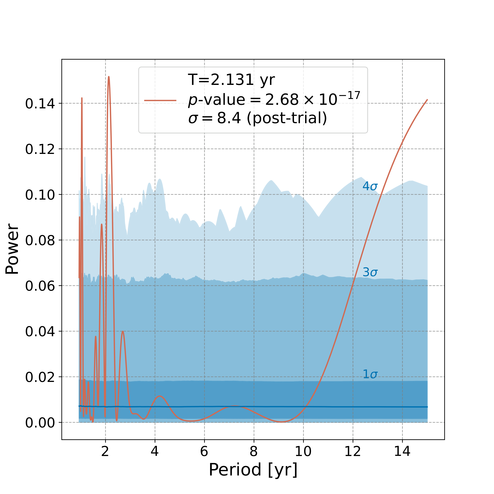
图注：LSP computed with the light-curve presented in Fig.\(\ref{fig:light-curve}.\) The blue line is the median LSP computed with 500 000 bootstraps, the three blue areas are corresponding to the 1, 3 and 4 $\sigma$ (pre-trial) around the median, from the darkest to the lightest. The red line is the LSP computed on the data. The peak with the maximal power is associated to a period of $2.131$ years with a significance of $8.4~\sigma$ (post-trial).
对应解读：对应“建议重点查看的图表”中的第4项“周期搜索或显著性图”，以及“关键图表逐图导读”中的图4周期搜索图。
入选理由：这张图直接展示由15年周采样光变曲线计算的 Lomb-Scargle periodogram，包含目标周期附近峰值、bootstrap 得到的1/3/4σ置信带、数据功率曲线和后验试验修正后的8.4σ显著性，是支撑论文核心结论“CTAO可>5σ恢复PG 1553+113周期”的最关键图。
来源与置信度：\(arxiv_source\)；high；\(arxiv_source\) / CtaAgnVar.tex:figure[6]
Fig04
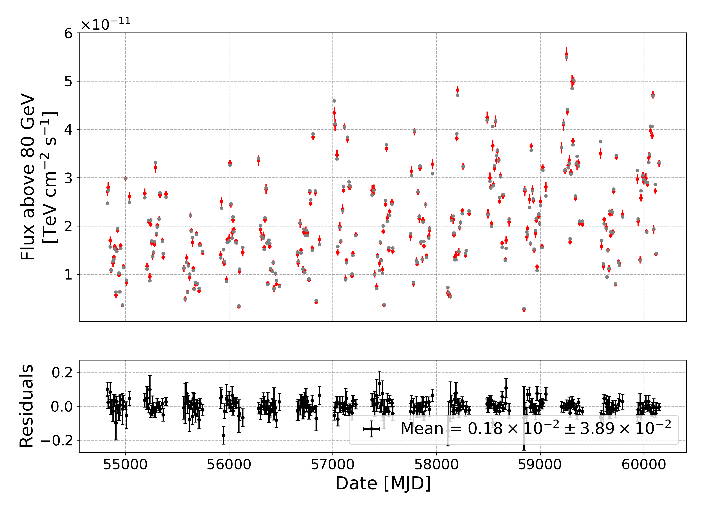
图注：Light-curve reconstructed for 15 years of data observed with a weekly cadence. Red points and uncertainties are the integrated flux reconstructed between 80 GeV and 30 TeV, each point is associated to one single night. Gray points are the injected value predicted by the modelling from ~\(\ref{Methodology}.\) The residuals between data and model are shown on the lower panel.
对应解读：对应“建议重点查看的图表”中的第3项“输入与重建光变曲线对比图”和第7项“残差或 pull 分布”，以及“关键图表逐图导读”中的图3。
入选理由：图中同时给出15年每周观测下的重建积分通量、注入模型值以及下方面板残差，可直接检查重建光变曲线是否无偏跟随输入周期调制、误差条如何变化，以及是否存在随时间成团的系统残差，是周期搜索可靠性的基础诊断图。
来源与置信度：\(arxiv_source\)；high；\(arxiv_source\) / CtaAgnVar.tex:figure[4]
Fig07
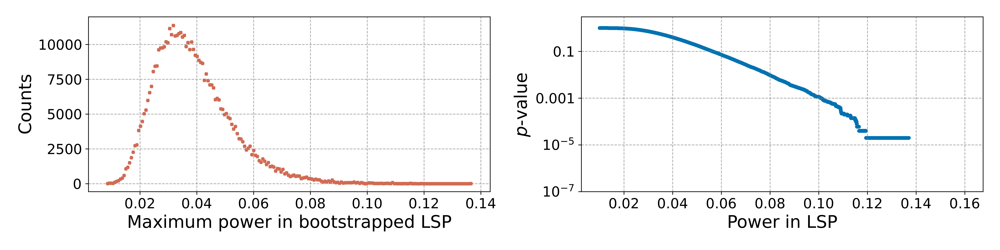
图注：\(\textit{Left : }Distribution\) of the maximum power computed with the bootstrapped LSP. \(\textit{Right : }Evolution\) of the $p$-value defined in Eq.~\(\ref{eq:pvalue}\) against the power threshold in LSP. As a reminder, a value of 1 is associated to noise only.
对应解读：对应“建议重点查看的图表”中的第4项“周期搜索或显著性图”，特别是虚警概率估计、噪声校准和 post-trial 显著性评估。
入选理由：该图展示 bootstrap LSP 最大功率分布以及p值随功率阈值的变化，用于把Fig06中的周期峰从视觉峰值转化为统计显著性判断；它比单独的周期图更能说明虚警概率和噪声背景如何校准。
来源与置信度：\(arxiv_source\)；high；\(arxiv_source\) / CtaAgnVar.tex:figure[7]
Fig05
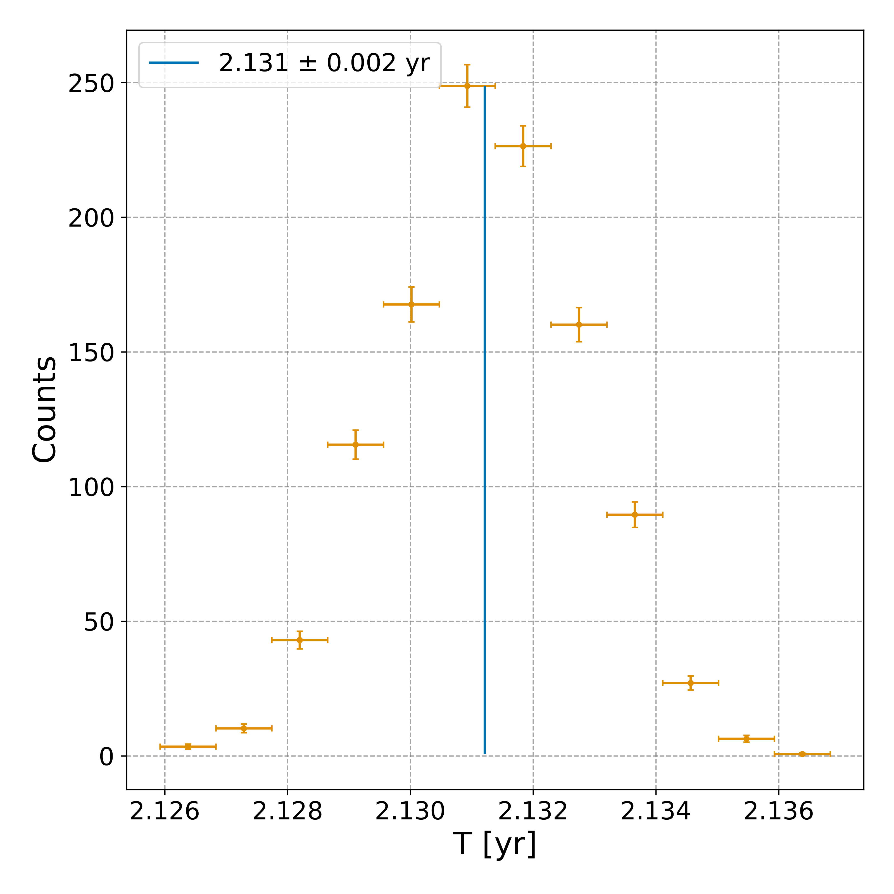
图注：Histogram of the reconstructed detected periods in LSP computed with a sample of 6000 MC based on the original light-curve shown in Fig~\(\ref{fig:light-curve}.\)
对应解读：对应“建议重点查看的图表”中的第4项周期搜索和第5项监测策略性能图中关于周期恢复稳定性、周期测定是否受采样限制的讨论。
入选理由：该图用6000次MC给出重建周期分布，可用于判断周期估计的离散程度、是否围绕注入周期集中，以及15年周采样方案下周期不确定度的来源。虽然它不直接比较不同监测策略，但对摘要中“周期确定主要受光变曲线采样而非光子统计限制”的解读很有价值。
来源与置信度：\(arxiv_source\)；high；\(arxiv_source\) / CtaAgnVar.tex:figure[5]
Fig01
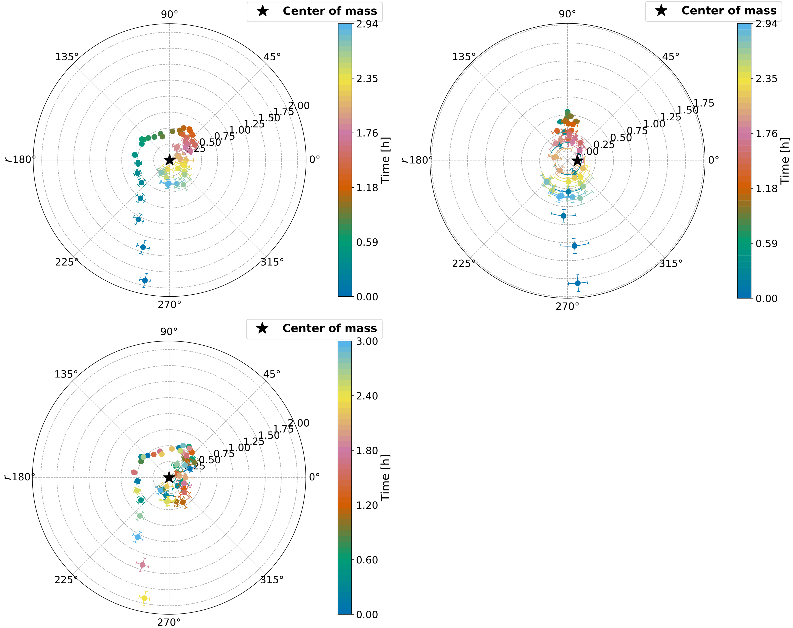
图注：Simulated HR diagrams for the three configurations described in Sec.~\(\ref{subsec:HR}.\) The color scale indicates temporal evolution. The black star is the barycenter of points in the HR diagram.
对应解读：对应“建议重点查看的图表”中的第6项“硬度比滞后诊断图”，以及“关键图表逐图导读”中的图6硬度比滞后图。
入选理由：这张图展示三种模拟配置下的HR相图，并用颜色标记时间演化、给出HR图中点的重心，正好用于检查滞后环的形态、方向和时间排序，是理解论文新硬度比滞后统计量物理输入的核心图。
来源与置信度：\(arxiv_source\)；high；\(arxiv_source\) / CtaAgnVar.tex:figure[1]
Fig02
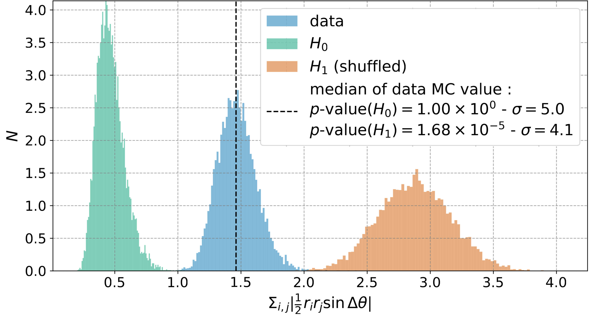
图注：Distribution of $T$ for the simulated data (blue), for $H_0$ (green) and for $H_1$ (orange) hypotheses based on 10,000 MC simulations. The vertical dotted line represents the median value calculated from the simulated data with injected hysteresis. Note : the $p$-value is equal to 1 because all points of the $H_0$ distribution are lower than the observed value. The significance is then evaluated assuming a Gaussian distribution for $H_0$.
对应解读：对应“建议重点查看的图表”中的第6项“硬度比滞后诊断图”，尤其是随机化置信区间和滞后显著性统计量的检验。
入选理由：该图展示滞后统计量T在模拟数据、无滞后假设H0和有滞后假设H1下的MC分布，并标出观测中位值，可直接说明新统计量如何把HR图中的环形结构转化为显著性判断，避免仅凭肉眼识别滞后。
来源与置信度：\(arxiv_source\)；high；\(arxiv_source\) / CtaAgnVar.tex:figure[2]
强相关工作
这篇工作与 CTAO 科学规划、Gammapy 软件生态和 AGN 时间域研究直接相连。相似工作包括 CTAO 对活动星系核、瞬变源和多信使触发的性能预估，以及现有 IACT 对耀变体长期监测的模拟研究。建议检索关键词包括 “CTAO AGN variability simulation”, “Gammapy CTAO science tools”, “Cherenkov Telescope Array blazar monitoring”, “VHE blazar light curve simulation”。
PG 1553+113 的同源背景很重要。Fermi-LAT 团队和后续多波段研究曾讨论该源的多年尺度准周期性，也有论文质疑或重新评估这种周期在红噪声和有限基线下的显著性。因此读者应把本文理解为“如果甚高能能段存在相似周期，CTAO 能否恢复”的仪器与方法论文，而不是对该周期天体物理真实性的最终裁决。建议检索 “PG 1553+113 quasi periodicity Fermi LAT”, “PG 1553+113 red noise periodicity”, “PG 1553+113 VHE gamma ray monitoring”。
基础理论方面，相关脉络包括耀变体同步辐射与逆康普顿模型、强子模型、喷流多普勒增强、时间依赖粒子输运，以及硬度-强度图中的滞后解释。相反观点或张力主要来自对准周期振荡显著性的统计质疑：红噪声、look-elsewhere effect、非平稳过程和窗口函数都可能让周期峰看起来过于显著。
同一事件 / 同类源线索：
- https://arxiv.org/abs/2608.21158
- https://arxiv.org/pdf/2608.21158
- https://www.cta-observatory.org/
- https://gammapy.org/
相似工作：
基础理论 / 方法工作：
相反观点 / 张力线索：
2. The Random Magnetic Field of the Milky Way
- 来源：arXiv / astro-ph.HE
- 链接：https://arxiv.org/abs/2608.21293v1
- 作者：Michael Unger, Glennys R. Farrar
- 评分：novelty 8/10，importance 8/10，relevance 9/10，final 9.35/10
- 推荐理由：利用Planck/408 MHz同步辐射约束银河随机磁场，并量化对超高能宇宙线偏转的影响；与宇宙线传播和源关联高度相关，结果可复用性强。
中文题目：银河系随机磁场：一个薄而强的随机盘，而不是厚随机晕
做了什么：这篇文章用 Planck 对 \(408\\,{\rm MHz}\) 全天同步辐射图的重建来重新约束银河系大尺度、近似各向同性的随机磁场分量。作者同时拟合随机磁场结构、相干磁场产生的同步辐射、本地前景、各向同性零点和偶极零点；关键新做法是用 \(30\\,{\rm GHz}\) 偏振超额辐射追踪本地前景，因此可以保留约 \(97\\%\) 的天空而不把本地结构误归因于全银河随机场。主要结论是：随机磁场由一个垂直方向很紧凑的盘主导，本地均方根强度约 \(4\\,\mu{\rm G}\)，垂直 \(1/e\) 标高约 \(1\\,{\rm kpc}\)；内银河环状增强能改善拟合，但没有证据支持大尺度螺旋随机场或厚随机磁盘。它还给出一个 \(4\) 到 \(7\\,{\rm K}\) 的同步辐射强度单极项，并量化了该随机场对超高能宇宙线角弥散的影响。
为什么重要：银河磁场是解释射电同步辐射、宇宙线传播、法拉第旋转、尘埃偏振前景以及超高能宇宙线溯源的共同系统误差源。过去许多模型需要较厚的随机磁场盘或晕来解释低频同步辐射强度，但这会显著增加宇宙线偏转和前景不确定性。本文的结果把随机场的主要贡献压缩到约 \(1\\,{\rm kpc}\) 标高的薄盘中，意味着银河面外的随机散射可能比常用模型小。
理论 / 观测 / 仪器方法价值：方法价值在于把 \(408\\,{\rm MHz}\) 强度图、相干场模型、宇宙线电子分布、本地前景模板和零点项放在同一个拟合框架里处理，而不是用强天空遮罩或手工扣除前景。对理论和观测来说，它提供了一个更适合与同步辐射强度而非仅与旋转量拟合相兼容的随机磁场剖面；对超高能宇宙线研究，它直接给出角弥散相对于旧模型可降低到约 \(1/1.7\) 的天空中值差异，在个别方向可达到约 \(1/2.4\)。
为什么应该关注：如果你做银河前景、宇宙线传播、星际介质磁湍流、宇宙微波背景前景清除或超高能宇宙线多信使关联，这篇文章都值得看。它挑战了一个常被默认采用的图像：随机磁场不仅在薄盘内强，而且还有一个显著厚盘或晕分量。若本文结论成立，许多依赖银河磁场模型的误差预算、源关联搜索和前景外推都需要重新评估。
展开详细解读：文章讲解、背景、理论、重点章节、图表与相关工作
文章详细讲解
科学问题：银河系磁场通常分成相干有序场、有方向但符号可变的条纹场、以及各向同性随机场。法拉第旋转主要约束沿视线的热电子加权相干磁场，而低频总强度同步辐射对宇宙线电子和垂直于视线的随机磁场特别敏感。本文要回答的是：解释全天 \(408\\,{\rm MHz}\) 同步辐射所需的随机磁场到底是厚盘、晕、螺旋臂增强，还是一个更薄的盘？这个问题重要，因为随机磁场强度和标高直接决定银河前景强度分布，也决定高刚度带电粒子在银河中的随机角扩散。
作者怎么做：他们使用 Planck 对 \(408\\,{\rm MHz}\) 同步辐射天空的重建，而不是直接把原始低频全天图当成唯一约束。模型同时包含随机场对同步辐射强度的贡献、给定相干磁场模型下的同步辐射贡献、本地前景模板、各向同性单极项和偶极项。新要点是把 \(30\\,{\rm GHz}\) 偏振数据中的超额偏振辐射作为本地前景结构的模板，从而避免把 Loop、泡状结构或局地磁化云的亮度错误解释为银河尺度随机场。这样他们只需遮掉很小部分天空，保留约 \(97\\%\) 的天空进行拟合。
关键结果：在改变相干磁场模型、宇宙线电子空间分布、天空遮罩和随机场径向剖面的多种设置下，最稳定的结论是随机场的主分量是一个垂直方向紧凑的盘。本地均方根强度约为 \(4\\,\mu{\rm G}\)，垂直 \(1/e\) 标高约 \(1\\,{\rm kpc}\)，明显薄于许多旧模型。内银河的环状增强能显著改善对亮度分布的拟合，但大尺度螺旋调制和厚随机磁盘没有得到数据支持。拟合还需要一个 \(4\) 到 \(7\\,{\rm K}\) 的强度单极项，可能与零点、各向同性射电背景、未建模的本地或外银河贡献有关。
局限和下一步：这类结论仍受宇宙线电子分布、同步辐射谱指数、低频图零点、自由自由辐射分离、局地前景模板选择和相干场模型不确定性的限制。随机场的“各向同性”也只是模型层面的有效描述，真实湍流可能有各向异性、尺度谱、压缩模式和局地泡边界。下一步应把同步辐射强度、偏振、旋转量、脉冲星距离、尘埃偏振和宇宙线传播放入联合层级模型，并检验薄随机盘是否也能解释频率依赖、纬度剖面和外部星系类比。
关键结果是怎么做出来的
本文的证据链从全天同步辐射强度开始。作者不是只拟合银河面附近，也不是用大遮罩丢掉大量前景污染区域，而是借助 \(30\\,{\rm GHz}\) 偏振超额辐射构造本地前景模板，使低频强度拟合可以保留约 \(97\\%\) 的天空。这个选择很关键：如果把局地环、泡或近邻云区直接留在残差中，模型会倾向于用更厚、更强的银河尺度随机场去吸收它们；如果过度遮罩，垂直剖面和大尺度零点又会失去约束。
样本意义上的“事件数”在这里不是瞬变事件，而是 HEALPix 天区像素。拟合量是 \(408\\,{\rm MHz}\) 同步辐射强度图中每个保留像素的亮温，模型像素由沿视线积分得到。作者在不同假设下重复拟合：相干磁场模型不同、宇宙线电子分布不同、随机场径向形式不同、天空遮罩不同、本地前景模板处理不同。这种多配置比较比单一最佳拟合更有说服力，因为本文最重要的结论并非某个精确参数值，而是“薄随机盘优于厚盘或螺旋随机场”这一结构性判断。
统计上，关键比较来自拟合残差和模型复杂度带来的改善。读者应重点看包含最佳拟合参数、残差图、纬度剖面和不同模型的拟合优度表格。若加入内银河环状增强后残差在银河中心附近和中低纬度系统性降低，而加入厚盘或螺旋调制没有对应改善，就说明数据更偏好径向局域增强而非垂直扩展或臂状几何。显著性不应只理解为某个参数的形式误差，还要看不同系统设置下结论是否保持。
最核心数值是本地随机场均方根强度约 \(4\\,\mu{\rm G}\) 和垂直 \(1/e\) 标高约 \(1\\,{\rm kpc}\)。这两个量之间存在退化：更强但更薄的场、或更弱但更厚的场，都可能在某些纬度区间给出相近积分亮度。本文通过全天纬度结构、本地前景模板和多种电子分布比较来打破部分退化。仍需注意，宇宙线电子密度的垂直分布若系统性偏差，会把磁场标高推向错误方向。
系统误差方面，最需要关注的是 \(408\\,{\rm MHz}\) 零点、同步辐射与自由自由辐射分离、低频吸收、本地前景模板是否过拟合、以及相干场同步辐射贡献是否被错误归入随机场。作者单独拟合各向同性和偶极偏移，并报告 \(4\) 到 \(7\\,{\rm K}\) 的单极项，这相当于承认强度零点和各向同性背景仍是不可忽略的不确定项。稳健性来自结论在多组模型变化下保持，而不是来自某个无系统误差的绝对拟合。
对超高能宇宙线的外推是本文的应用检验。作者把薄随机场模型转化为带电粒子的随机角弥散，发现相对于旧模型，天空中值弥散角最多可小约 \(1.7\) 倍，个别方向最多小约 \(2.4\) 倍。支撑这一点的图应显示全天弥散角图或新旧模型比值图；读者要看变化是否集中在高纬度、反中心或低前景方向，因为这些区域最影响源关联搜索。
展开背景、理论、公式、模型、章节和图表导读
背景知识
研究对象是银河系随机磁场。它不是指小尺度完全无结构的白噪声，而是指在同步辐射和宇宙线传播中表现为方向快速变化、相干长度有限、平均方向接近零的磁场分量。观测上它会增强总强度同步辐射，但由于偏振方向沿视线和望远镜波束内相互抵消，对大尺度偏振的贡献相对复杂。它也会造成带电宇宙线方向的随机游走。
历史上，银河磁场模型常由几类数据共同驱动：河外源和脉冲星旋转量约束有序磁场，低频射电总强度约束总磁能和宇宙线电子，偏振同步辐射约束有序场和平面天空投影，尘埃偏振提供星际介质磁场方向的另一种追踪。Jansson 与 Farrar 一类模型把有序场、条纹场和随机场分别参数化，是很多高能宇宙线和前景研究的默认起点。但这些模型对随机场垂直厚度的约束往往受到前景处理和宇宙线电子假设的影响。
现在值得重新看，是因为 Planck、WMAP 和改进的低频全天图让同步辐射强度与偏振前景的分离更可控；同时，超高能宇宙线实验对到达方向各向异性和源关联的要求越来越高，需要更现实的银河磁场不确定性。若随机场厚盘被高估，那么对高纬度源的角搜索窗口会被设得过宽，从而稀释真实相关；若随机场厚盘被低估，则可能产生虚假的源关联。
该领域常见误区之一是把总同步辐射亮度直接等同于磁场强度。实际上亮度依赖宇宙线电子谱、电子空间分布、磁场垂直于视线的分量、频率、吸收和零点。另一个误区是把本地结构看作全银河结构：太阳附近的 Loop、Local Bubble 边界、射电 spur 和局地云可以在全天图上形成巨大角尺度特征，若没有合适模板，很容易被拟合成厚盘或晕。第三个误区是把“没有偏振”理解为“没有磁场”；随机场可以很亮但低偏振，尤其在长视线和大波束下。
基础理论 / 方法脉络
基本物理图像是相对论电子在磁场中回旋并发出同步辐射。对给定频率，主要贡献来自能量与磁场强度匹配的一段电子谱；如果电子谱近似幂律，同步辐射亮温也呈幂律频谱。总强度主要依赖垂直于视线的磁场分量平方的某个幂，而偏振还依赖磁场方向在天空平面上的相干性。因此随机磁场可以强烈增加 \(408\\,{\rm MHz}\) 总强度，却不一定在大尺度偏振图中同等突出。
本文使用的随机场是大尺度统计模型，而不是直接模拟湍流级联。它关心的是每个位置的均方根强度如何随银河柱坐标半径和高度变化，例如本地强度、垂直标高、内银河环状增强等。只要随机场相关长度远小于同步辐射强度图所积分的视线尺度和像素尺度，就可以用局地均方根量来预测平均强度，而不必逐个实现随机湍流格点。
观测方法的核心是正向建模：给定宇宙线电子密度、磁场模型和频谱假设，对每条视线积分得到 \(408\\,{\rm MHz}\) 亮温，再与全天图比较。相干场同步辐射、本地前景模板、单极和偶极零点一并拟合，避免把它们固定后将残差硬塞给随机场。这里的“数据点”是天空像素，误差既包括图像噪声，也包括远大于噪声的建模系统误差。
主要退化关系包括：磁场强度与宇宙线电子密度的乘积退化，磁场垂直标高与电子垂直标高退化，随机场厚盘与各向同性零点退化，本地前景模板与大尺度随机场剖面退化，相干场同步辐射与随机场同步辐射退化。本文通过多种宇宙线电子模型、多种相干场模型和大天空覆盖来检查这些退化是否改变主结论。
对超高能宇宙线而言，随机磁场造成的是多次小角散射。弥散角随电荷数增加、随能量降低、随磁场均方根强度和路径长度增加而变大。若随机场实际上是薄盘，高纬度方向和离开银河盘的路径会更短，许多方向的随机弥散会比厚盘模型小。
公式与推导
第一步是同步辐射的基本标度。设宇宙线电子数密度谱为 \(n_e(E,{\bf r})=K({\bf r})E^{-p}\)，局地垂直于视线的磁场为 \(B_\perp({\bf r})\)，则体发射率可写成
其中 \(C(p)\) 包含同步辐射核和常数，\(p\) 是电子谱指数，\(\nu\) 是观测频率。这个式子说明低频亮度不能单独测出磁场，必须给定或同时拟合电子分布。
第二步把发射率变成亮温。沿方向 \(\hat{\bf n}\) 的强度为
其中 \({\bf r}_\odot\) 是太阳位置，\(s\) 是视线距离，\(I_{\}\)
u,{\(\rm\) off}}) 表示单极、偶极和可能的零点项。Rayleigh-Jeans 近似下亮温为
本文拟合的核心数据量就是 \(408\\,{\rm MHz}\) 的 \(T_b\) 天图。
第三步引入各向同性随机场平均。若随机场方向各向同性，且均方根强度为 \(B_{\rm rms}\)，则对视线垂直分量有近似关系
对非线性幂指数更严格地说应计算 \(\langle B_\perp^{(p+1)/2}\\)
angle)，但该式给出为什么总强度主要约束随机场均方根能量密度。
第四步是本文要约束的空间剖面。薄盘随机场的简化形式可写为
其中 \(B_0\) 是太阳附近归一化强度，\(R\) 是银河柱坐标半径，\(z\) 是离银河面的高度，\(z_0\) 是 \(1/e\) 标高。本文稳定得到 \(B_0\simeq4\\,\mu{\rm G}\) 和 \(z_0\simeq1\\,{\rm kpc}\)。
第五步表示内银河环状增强。一个常用参数化可以写成
其中 \(A_{\rm ring}\) 是增强幅度，\(R_{\rm ring}\) 是环半径，\(\sigma_{\rm ring}\) 是宽度。本文的结果是这种环状增强改善拟合，而螺旋臂式随机增强没有同等证据。
第六步加入本地前景和零点，得到像素模型
其中 \(i\) 是像素编号，\(T_{i,{\rm rand}}\) 是随机场同步辐射，\(T_{i,{\rm coh}}\) 是相干场贡献，\(L_i\) 是由 \(30\\,{\rm GHz}\) 偏振超额构造的本地模板，\(a_{\rm loc}\) 是模板幅度，\(m\) 是单极，\({\bf d}\) 是偶极向量。这个式子体现了本文相对于简单磁场拟合的关键改进。
第七步是拟合统计量。若像素协方差近似为 \(C_{ij}\)，高斯似然可写成
实际分析中 \(C_{ij}\) 还代表建模误差和权重选择，而不只是仪器噪声。比较薄盘、厚盘、环状增强或螺旋模型，本质上就是比较这个目标函数及其残差结构。
第八步连接到超高能宇宙线。对刚度 \({\cal R}=E/(Ze)\) 的粒子，随机游走近似下角弥散可估为
其中 \(E\) 是粒子能量，\(Z\) 是电荷数，\(e\) 是元电荷，\(l_c\) 是磁场相关长度。薄盘模型减小高纬度方向的积分量，因此降低源方向反推中的随机角扩散。
模型拟合 / 应用方法
本文的拟合量是全天像素化的 \(408\\,{\rm MHz}\) 同步辐射亮温，而拟合参数包括随机场本地强度、垂直标高、径向剖面或环状增强参数、本地前景模板幅度、强度单极和偶极，以及在不同实验设置中替换的相干场和宇宙线电子模型。相干场参数本身未必全部重新自由拟合，但其同步辐射贡献被纳入模型，因此不会把有序场亮度简单留给随机场吸收。
似然或损失函数可理解为像素残差的加权平方和。由于射电全天图的统计误差远小于模型误差，形式上的像素数很大并不意味着参数误差可以按独立高斯噪声简单缩小。更有意义的是比较残差图是否还保留银河面、内银河、中高纬本地结构和大尺度偶极样式；如果残差有强空间相关，说明模型缺少物理成分或模板仍不充分。
参数退化是读这篇文章时必须时刻记住的。随机场强度 \(B_0\) 与宇宙线电子归一化 \(K\) 强退化；垂直标高 \(z_0\) 与电子晕高度、同步辐射谱指数和高纬零点退化；环状增强与内银河电子密度、自由自由扣除和棒旋结构退化；本地模板幅度与厚盘分量退化。本文通过替换宇宙线电子分布、改变遮罩和尝试不同随机场剖面来测试主结论是否穿过这些退化。
残差诊断应分三层看。第一层是全天残差图，检查是否仍有 Loop 或 spur 样结构；第二层是经度和纬度剖面，检查薄盘是否能同时解释银河面亮度和高纬衰减；第三层是模型比较表，检查新增厚盘、螺旋调制或环状增强是否真正降低残差，而不是只通过更多自由度拟合局地异常。对 \(4\) 到 \(7\\,{\rm K}\) 单极项，也要看它是否随模型选择显著变化，因为这影响随机场高纬约束。
模型可能失效的地方包括：随机场各向同性假设不适用于压缩湍流或沿螺旋臂拉伸的湍流；局地前景模板可能只追踪偏振增强而非总强度全部结构；电子分布模型可能在太阳邻域或内银河有偏；低频吸收和自由自由发射残差可能污染银河面。实际应用时，最好把本文模型作为一组系统误差较小的候选模型，而不是唯一真值。
在超高能宇宙线应用中，拟合得到的 \(B_{\rm rms}(R,z)\) 还需配合随机场相关长度 \(l_c\) 和粒子刚度分布。本文给出的角弥散差异主要反映磁场积分量变化；若 \(l_c\) 或湍流谱不同，绝对弥散角会改变，但薄盘相对于厚盘减少高纬散射的趋势通常仍然成立。
重点章节 / 结果段落怎么读
数据和模板部分应优先读。这里决定了 \(408\\,{\rm MHz}\) 图、Planck 重建、\(30\\,{\rm GHz}\) 偏振超额模板、天空遮罩和零点项如何进入模型。读者要确认作者如何定义“本地前景”，以及为什么这个模板允许保留约 \(97\\%\) 的天空。
磁场和宇宙线电子建模部分是第二重点。应看随机场剖面有哪些备选：薄盘、厚盘、径向环状增强、螺旋结构等；相干场模型如何切换；宇宙线电子分布如何改变。本文结论的可信度来自这些替换后仍得到近似相同的薄盘标高。
拟合与模型比较部分是第三重点。应关注最佳拟合参数表、拟合优度、残差图和不同模型的相对改善。特别要看厚随机盘和大尺度螺旋随机场是否被数据真正需要，以及内银河环状增强改善的是哪些天区的残差。
单极项讨论值得单独阅读。\(4\) 到 \(7\\,{\rm K}\) 的强度单极不是一个小修正，它会影响高纬同步辐射基线和随机场厚度推断。作者对其可能来源的讨论关系到结果是否依赖未解释的各向同性射电背景或低频图零点。
超高能宇宙线影响部分是应用章节。这里应看作者如何从随机场模型计算角弥散，比较对象是哪一类旧模型，以及天空中值和方向依赖变化分别有多大。对源关联研究者来说，这一节直接决定搜索角尺度和银河磁场系统误差。
建议重点查看的图表
-
全天 \(408\\,{\rm MHz}\) 数据图、本地前景模板图和遮罩图：看保留天空比例、局地结构位置，以及模板是否主要覆盖 Loop、spur 或高纬异常区。
-
最佳拟合随机场空间剖面图：看 \(B_{\rm rms}\) 随 \(z\) 和 \(R\) 的变化，尤其是 \(z_0\simeq1\\,{\rm kpc}\) 是否由清晰的似然谷支持。
-
模型残差全天图：看残差是否仍沿银河面、内银河或本地泡边界成片分布；随机噪声式残差比大尺度相关残差更可信。
-
不同模型拟合优度或参数表：比较薄盘、厚盘、环状增强、螺旋随机场的残差降低和自由度变化，避免只看最佳拟合参数。
-
纬度剖面和经度剖面：看模型是否同时匹配高纬亮度衰减和内银河增强；这是区分厚盘与薄盘加单极项的关键。
-
单极和偶极项诊断：看 \(4\) 到 \(7\\,{\rm K}\) 单极是否随模型设定漂移，是否与随机场标高相关。
-
超高能宇宙线弥散全天图或比值图：看新旧模型差异集中在哪些方向，以及中值降低和最大降低是否由少数区域驱动。
关键图表逐图导读
图 1：通常应是数据和模板导览。横轴和纵轴多半为银河经度与纬度，颜色表示 \(408\\,{\rm MHz}\) 亮温或 \(30\\,{\rm GHz}\) 偏振超额模板强度。读图时要看本地模板是否与高纬大尺度结构重合，以及遮罩是否只去除少量严重污染区域。陷阱是把模板亮区误认为全银河随机场增强；本文正是要避免这种误归因。
图 2：应关注随机磁场剖面或参数后验。若坐标轴为 \(z_0\) 与 \(B_0\)，等高线会显示强度和标高的退化；若为 \(R\) 与 \(z\) 的剖面图，颜色表示 \(B_{\rm rms}\)。主要结论应是本地 \(B_{\rm rms}\) 约 \(4\\,\mu{\rm G}\)，垂直方向快速衰减。读图陷阱是只看最佳点，不看厚盘区域是否在系统变化下持续被排斥。
图 3：模型比较和残差图最关键。坐标仍为全天投影，颜色为 \(T^{\rm data}-T^{\rm mod}\)。理想情况下，加入本地模板和薄随机盘后，高纬大尺度残差应减小；加入环状增强后，内银河残差应改善。陷阱是残差色标若被银河面极亮区支配，中高纬系统偏差会被视觉压低，需结合纬度剖面。
图 4：纬度或经度剖面图应显示数据点、最佳模型线和不同分量线。横轴可能是银河纬度或经度，纵轴为亮温。读者要看薄盘模型是否能同时通过低纬峰值和高纬尾部；如果高纬需要靠单极项而不是厚盘解释，就要检查单极项的不确定性。
图 5：模型选择表或条形图若存在，应看不同随机场几何的 \(\Delta\chi^2\)、残差均方或信息准则。环状增强若显著改善而螺旋结构不改善，就支持“内银河径向增强”而非“随机场沿螺旋臂大尺度排列”。陷阱是复杂模型自由度更多，需区分统计改善和物理必要性。
图 6：超高能宇宙线弥散图应以全天投影展示 \(\theta_{\rm rms}\) 或新旧模型比值。颜色越低表示随机散射越小。主要读点是天空中值最多降低约 \(1.7\) 倍、个别方向最多约 \(2.4\) 倍。陷阱是绝对角度还依赖粒子刚度和相关长度，图中的相对差异比某个固定能量下的数值更稳健。
论文原图 / 可嵌入图片
Fig08
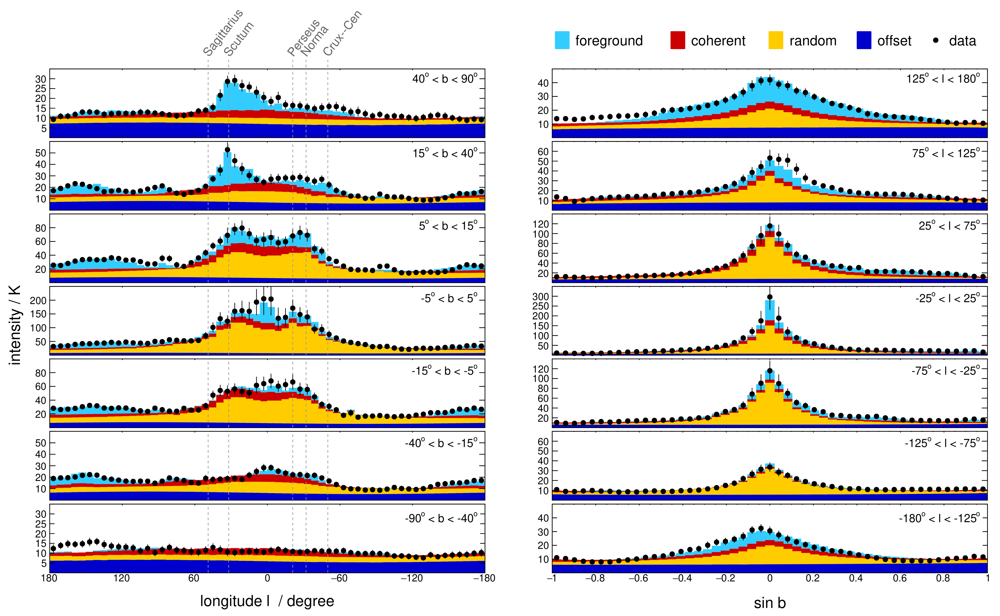
图注：Comparison of the \(\Planck\) 408-MHz synchrotron intensity and the fitted intensity model (\(\ModelDRF\) model). The model intensity is shown cumulatively for the offset, random-field, coherent-field, and foreground contributions, adding up to the total model intensity. Note the different scales in the different plots. {\(\itshape\) Left:} Longitude profiles in seven Galactic-latitude intervals. {\(\itshape\) Right:} Latitude profiles in seven Galactic-longitude intervals. Intensities are the arithmetic mean over the unmasked pixels in each bin. The error bars show the mean per-pixel uncertainty. The vertical dashed lines mark the 408-MHz tangent directions of \(\citet{1985A&A...153...17B}\) associated with the Crux--Centaurus, Norma, Perseus, Scutum, and Sagittarius arms, as compiled by \(\citet{2022NewA...9701896V}.\)
对应解读：对应“建议重点查看的图表”第5项和“关键图表逐图导读”图4：经度/纬度剖面、数据点、最佳模型线与各分量贡献。
入选理由：这张图直接检验模型是否同时匹配银河面、内银河增强和高纬亮度衰减，并把offset、随机场、相干场和本地前景的累计贡献分开展示，是判断薄盘随机场与单极项/前景模板如何分担408 MHz亮温的核心诊断图。
来源与置信度：\(arxiv_source\)；high；\(arxiv_source\) / main.tex:figure[8]
Fig05
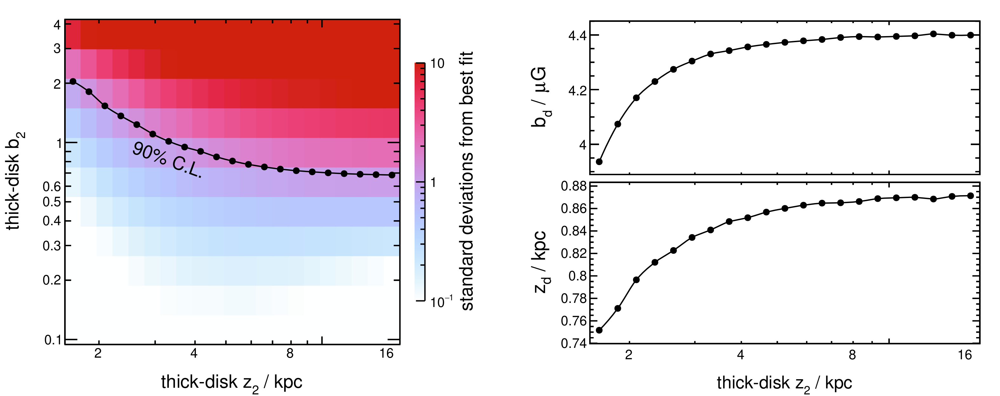
图注：Profile-likelihood scan of the thick-disk parameters, $(b_2, z_2)$. \(\emph{Left:}\) Deviation from the single-disk best fit, in standard deviations, as a function of the thick-disk scale height $z_2$ and field strength $b_2$, profiled over the remaining model parameters. The line indicates the 90\% C.L.\ upper limit contour on $b_2$. \(\emph{Right:}\) Values of the refit standard-disk parameters along this contour: field strength $\bdisksun$ (top) and scale height $\zdisk$ (bottom).
对应解读：对应“建议重点查看的图表”第2、4项和“关键图表逐图导读”图2/图5：厚盘参数的profile-likelihood、置信上限和薄盘参数退化。
入选理由：图中给出厚随机盘强度与标高的似然扫描、90%置信上限，以及沿上限轮廓重拟合得到的标准薄盘强度和标高，是支撑“没有厚随机磁盘证据、主分量为约1 kpc薄盘”的最直接统计证据。
来源与置信度：\(arxiv_source\)；high；\(arxiv_source\) / main.tex:figure[5]
Fig09
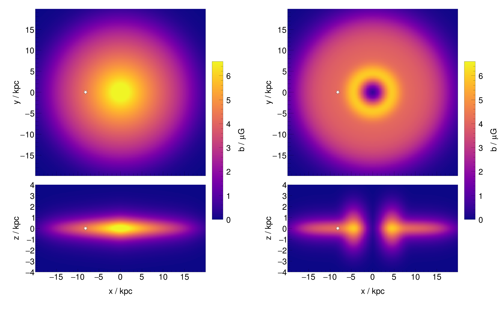
图注：Random magnetic field of the \(\modelDisk{}\) (a) and \(\modelRing{}\) (b) models. In each panel, the top plot shows the face-on view of the Galactic plane at $z=0$ and the bottom plot the edge-on view in the plane containing the Sun and the Galactic center. The star marks the position of the Sun.
对应解读：对应“建议重点查看的图表”第2项和“关键图表逐图导读”图2：最佳拟合随机磁场空间剖面，比较Disk与Ring模型的面内和垂直结构。
入选理由：这张图以face-on和edge-on视角展示随机磁场的空间分布，能够直观看出垂直方向紧凑薄盘以及内银河环状增强，比单纯参数文字更能说明本文主结论中的几何结构。
来源与置信度：\(arxiv_source\)；high；\(arxiv_source\) / main.tex:figure[9]
Fig13
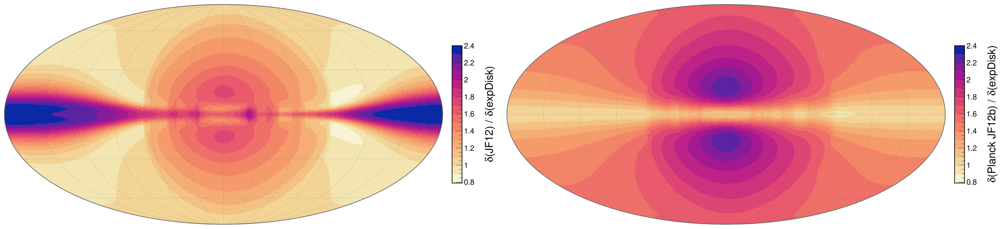
图注：Ratio of the rms deflection angle $\delta$ for JF12 (left) and for JF12b (right) to that of \(\modelDisk{}.\)
对应解读：对应“建议重点查看的图表”第7项和“关键图表逐图导读”图6：新旧随机场模型导致的UHECR弥散角比值图。
入选理由：该图直接给出JF12/JF12b相对于本文Disk模型的rms偏转角比值，最适合支撑日报中“天空中值降低、个别方向降低更大”的相对差异结论，也避免绝对偏转角对刚度和相关长度设定过度敏感。
来源与置信度：\(arxiv_source\)；high；\(arxiv_source\) / main.tex:figure[13]
Fig10
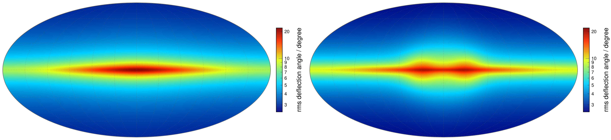
图注：Root-mean-square UHECR deflection angle for \(\modelDisk{}\) (left) and \(\modelRing{}\) (right) for a particle rigidity of $\mathcal{R} = 10$~EV and a coherence length of $\lambda_{\mathrm{c}} = 50$~pc.
对应解读：对应“建议重点查看的图表”第7项和“关键图表逐图导读”图6：Disk与Ring模型的UHECR rms偏转角全天图。
入选理由：这张图展示本文两个最佳随机场几何在固定刚度和相干长度下的绝对UHECR弥散全天分布，可定位偏转主要来自哪些天空方向，并与Fig13的相对比值诊断互补。
来源与置信度：\(arxiv_source\)；high；\(arxiv_source\) / main.tex:figure[10]
Fig11
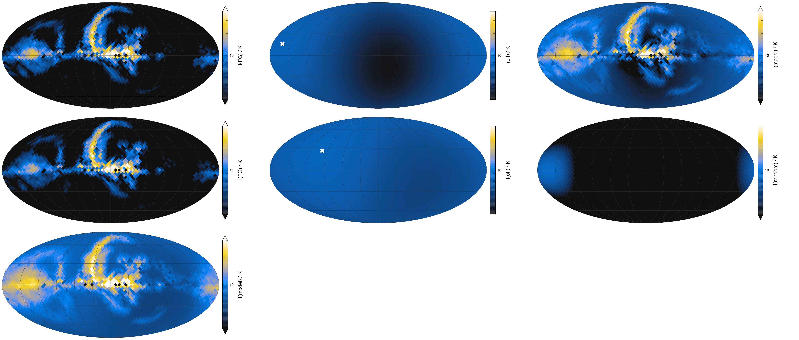
图注：Foreground and offset components and their sum. The direction of the fitted dipolar offset, $\bm{d}$, is marked with a white cross.
对应解读：对应“建议重点查看的图表”第1、6项：本地前景、offset单极/偶极项诊断以及模板是否吸收Loop、spur等局地结构。
入选理由：图中分开展示foreground、offset及其总和，并标出拟合偶极方向，能支撑日报关于本地前景模板和4到7 K单极/偶极项的讨论；虽然不是随机场主参数图，但对判断高纬结构是否被误归因为银河尺度随机场很重要。
来源与置信度：\(arxiv_source\)；high；\(arxiv_source\) / main.tex:figure[11]
强相关工作
这篇工作直接处在银河磁场全局建模传统中，尤其与 Jansson-Farrar 型银河磁场模型相关。那些模型综合旋转量、同步辐射和偏振数据，提出了相干盘场、晕场、X 形场和随机场分量。本文并不是推翻相干场研究，而是指出在 \(408\\,{\rm MHz}\) 强度和本地前景处理更谨慎时，随机场不需要一个显著厚盘。检索关键词可用 “Galactic magnetic field random component synchrotron 408 MHz Jansson Farrar”、“Planck 408 MHz synchrotron reconstruction random magnetic field”。
它也与射电背景和低频零点问题相连。拟合得到的 \(4\) 到 \(7\\,{\rm K}\) 单极项会让人联想到 ARCADE 2 射电背景超额、Haslam 图零点、以及各向同性银河外射电背景的争论。这里的张力在于：如果单极项处理不同，随机场高纬厚度可能变化。检索关键词可用 “ARCADE 2 radio excess synchrotron monopole”、“Haslam 408 MHz zero level Galactic synchrotron”。
对超高能宇宙线领域，它属于同类源传播系统误差工作，而非某个具名瞬变或单一源事件。应把它与 Pierre Auger、Telescope Array 的到达方向各向异性研究，以及 CRPropa 等传播工具中的银河磁场模型选择一起读。检索关键词可用 “UHECR deflection Galactic magnetic field random turbulent component”、“ultra-high-energy cosmic rays Galactic magnetic lensing JF12”。
同一事件 / 同类源线索：
- https://arxiv.org/abs/2608.21293
- https://arxiv.org/pdf/2608.21293
- https://pla.esac.esa.int/pla/
- https://lambda.gsfc.nasa.gov/product/foreground/fg_2014_haslam_408_info.html
相似工作：
基础理论 / 方法工作：
- https://arxiv.org/abs/astro-ph/0207413
- https://arxiv.org/abs/0901.0555
- https://lambda.gsfc.nasa.gov/product/foreground/fg_2014_haslam_408_info.html
相反观点 / 张力线索：
3. EXPO: a quantum leap in fast, wide-band X-ray polarimetry for astrophysics
- 来源：arXiv / astro-ph.HE
- 链接：https://arxiv.org/abs/2608.20898v1
- 作者：Paolo Soffitta, Sebastien Guillot, Ian Hutchinson, Fabio Muleri, Mark Pearce, Andrea Santangelo, Daniele Spiga, Ivan Agudo
- 评分：novelty 8/10，importance 8/10，relevance 9/10，final 9.35/10
- 推荐理由：EXPO宽能段快速X射线偏振任务概念，覆盖磁星、黑洞双星、SNR/PWN、GRB等高能目标，并提出2-35 keV偏振和快速重定位能力；仪器方法相关性强。
中文题目：EXPO：面向快速、宽能段 X 射线偏振天体物理的下一代任务概念
做了什么：这篇文章介绍了 ESA M8 候选任务概念 EXPO，即 Enhanced X-ray Polarimetry Observatory。它的核心目标是补上 IXPE 的两块短板：能段只覆盖约 \(2\text{--}8\,\mathrm{keV}\)，以及转向速度不足以系统追踪快速暂现源。EXPO 设想用五台聚焦 X 射线望远镜、基于 Timepix/InGrid 的气体光电偏振仪、覆盖约 \(2\text{--}35\,\mathrm{keV}\) 的低能与中能探测器配置，再加上一个约 \(2\,\mathrm{sr}\) 视场的编码孔径广角监视器和宽能段成像光谱相机，实现硬 X 射线偏振、快速触发和自主重定向。它的重要性不在于单个新探测器指标，而在于把偏振、宽能段光谱、时域触发和多信使响应打包成一个任务架构，可直接服务磁星、黑洞双星、超新星遗迹、脉冲星风云、活动星系核、伽马暴和磁星耀发等问题。
为什么重要：X 射线偏振是少数能直接约束辐射几何、磁场拓扑和散射/反射结构的观测量。IXPE 已经证明软 X 射线偏振可以改变我们对吸积盘、喷流和磁化等离子体的认识，但许多关键物理过程的能谱峰值、非热尾部或反射成分位于 \(8\,\mathrm{keV}\) 以上；同时，伽马暴余辉、磁星耀发、黑洞双星状态跃迁这类事件要求分钟到小时级响应。EXPO 试图把偏振测量从“少量亮源的软 X 射线几何诊断”推进到“宽能段、快速时域、多源类的物理分解工具”。
理论 / 观测 / 仪器方法价值：对仪器方法的价值在于，文章给出了一种把聚焦镜、三维光电子径迹成像气体偏振仪、编码孔径监视器、堆叠式 CMOS/CdTe 光谱成像相机和自主触发控制单元组合起来的任务级方案。对观测天体物理的价值在于，\(2\text{--}35\,\mathrm{keV}\) 偏振能把软热成分、硬非热成分、康普顿化成分和反射成分在偏振度与偏振角上分开，而快速重定向可以把暂现源的早期演化纳入偏振诊断。对理论的价值在于，它能用能量依赖和时间依赖的偏振观测检验磁层辐射转移、相对论反射、粒子加速和喷流几何模型。
为什么应该关注：如果你关注高能天体的“结构不可成像”问题，EXPO 这类任务概念值得关注：偏振相当于给不可分辨源增加了一个几何维度。若它能实现，未来磁星硬 X 射线尾、黑洞双星硬态与软态、AGN 冠冕反射、SNR/PWN 粒子加速区以及 GRB 早期余辉的模型比较，将不再只依赖光谱斜率和时间延迟，而能加入能量分辨的 Stokes 参数约束。即便任务尚处概念阶段，这篇文章也清楚展示了下一代 X 射线偏振天文学正在从单一仪器性能提升，转向“快速发现—快速指向—宽能段偏振—光谱分解”的系统工程。
展开详细解读：文章讲解、背景、理论、重点章节、图表与相关工作
文章详细讲解
科学问题：文章瞄准的是 IXPE 之后 X 射线偏振天文学的下一步。IXPE 已经证明光电效应气体像素探测器可以在轨道上稳定测量天体偏振，但它的科学覆盖受两个因素限制：一是能段主要在 \(2\text{--}8\,\mathrm{keV}\)，对磁星硬尾、黑洞双星康普顿化尾、AGN 高能反射驼峰的低能侧、PWN/SNR 的高能同步辐射成分都不够；二是重定向速度慢，不适合捕获 GRB、磁星巨耀发、快速状态跃迁和多信使触发后的早期偏振演化。EXPO 的科学动机就是把偏振观测从“静态软 X 射线样本”扩展到“宽能段和时域高能天体物理”。
作者怎么做：论文提出一个完整任务概念，而不是单独的探测器论文。核心载荷包括五台聚焦 X 射线望远镜，焦平面放置基于 Timepix ASIC 家族和 InGrid 气体放大的光电偏振仪，利用光电子初始发射方向恢复线偏振信息。探测器配置分为低能与中能优化版本，使总工作能段延伸到约 \(2\text{--}35\,\mathrm{keV}\)。镜面采用成熟的电铸镍复制技术和 Au-C 镀膜，焦距约 \(7.5\,\mathrm{m}\)，接近 XMM-Newton 级别，有利于继承成熟工程路线。同时，任务还包含一个源自 SVOM/ECLAIRs 思路的编码孔径 Wide Field Instrument，用于约 \(2\,\mathrm{sr}\) 天区连续监测；另有 Spectral Imaging Camera，使用堆叠 CMOS 和 CdTe 探测器，提供宽能段成像光谱，帮助做光谱-偏振成分分解。
关键结果：文章的“结果”主要是任务能力论证。EXPO 的设计把偏振灵敏度、硬 X 射线覆盖和快速自主重定向结合起来，使其能够测量 IXPE 难以触及的源类与物理状态。例如，磁星的硬 X 射线辐射可检验强磁场量子电动力学与磁层辐射转移；黑洞双星和 AGN 的能量依赖偏振可区分盘、冠冕、喷流和反射；SNR 与 PWN 的空间分辨或准空间分辨偏振可定位粒子加速区与磁场有序度；GRB 和磁星耀发的触发-重定向链路则使早期余辉偏振成为可规划的观测目标。文章强调三维径迹成像和宽能段光谱配套对降低系统误差、提升调制因子和分解多成分偏振的重要性。
局限和下一步：这仍是一篇任务概念和科学白皮书性质的文章，不是已定型工程设计或飞行硬件性能论文。许多关键指标需要在后续阶段通过端到端仿真、束流标定、镜面有效面积测量、背景建模、在轨触发模拟和源样本收益评估来固化。特别是 \(10\,\mathrm{keV}\) 以上气体光电偏振仪的效率、调制因子、轨迹重建偏差、镜面反射效率、粒子背景以及编码孔径误触发率，会直接决定科学收益。下一步应关注更具体的最小可探测偏振度曲线、不同源类的曝光时间表、暂现源触发延迟分布、系统误差预算和与 Athena、NewAthena、COSI、SVOM、Einstein Probe、CTA、IceCube-Gen2、LIGO/Virgo/KAGRA 下一代运行的协同场景。
关键结果是怎么做出来的
本文最重要的证据链不是某个天体样本的统计检出，而是任务架构如何针对 IXPE 暴露出的两项限制给出可验证的技术路线。样本选择在这里体现为科学案例选择：作者挑选磁星、黑洞双星、SNR、PWN、AGN、GRB 和磁星耀发等源类，因为它们都满足两个条件之一或两者兼具：关键辐射成分位于 \(8\,\mathrm{keV}\) 以上，或偏振信息在爆发早期快速变化。读者应把这些案例看作“性能需求反推”的样本，而不是传统观测论文中的天体目录。
事件数或样本量在任务概念论文中通常以灵敏度、视场和响应时间来间接表达。EXPO 设计约 \(2\,\mathrm{sr}\) 视场的 WFI 连续监测，目的是增加 GRB、磁星耀发和其他暂现事件的触发概率；五台聚焦望远镜则通过总有效面积提高偏振统计。真正支撑结论的不是“已观测到多少事件”，而是硬件组合是否能把源发现、定位、触发判定、自主重定向和后续偏振观测压缩到暂现源仍足够亮的时间窗内。
显著性与置信度在偏振任务中通常通过最小可探测偏振度、Stokes 参数误差椭圆、调制曲线显著性和源/背景计数比来量化。本文摘要未给出完整数值表，但读者在正文中应重点寻找 \(2\text{--}35\,\mathrm{keV}\) 不同能段的有效面积、调制因子、探测效率、背景率和最小可探测偏振度曲线。若一项科学案例声称能区分两种模型，关键应是两模型预测的偏振度或偏振角差异是否大于统计误差和系统误差，而不是仅看总光子数。
模型比较的核心是光谱-偏振联合分解。SIC 提供宽能段成像光谱，WFI 提供触发与监测，焦平面偏振仪提供调制曲线；三者合起来才能判断某个偏振信号来自热盘、康普顿化、同步辐射还是反射。支持这一点的图表应包括仪器布局图、能段覆盖图、有效面积曲线、最小可探测偏振度随通量和曝光变化的图、以及典型源类的模拟观测。表格则应列出载荷参数、视场、能量分辨率、角分辨率、时间分辨率、重定向时间和质量/功耗预算。
主要系统误差包括径迹重建导致的假调制、探测器增益非均匀、气体吸收深度重建误差、镜面散射和镀膜能量依赖、非 X 射线粒子背景、编码孔径成像旁瓣、触发阈值选择以及源拥挤区域的定位混淆。稳健性检验应包括未偏振束流标定、已知偏振角束流标定、旋转观测或多探测器交叉校准、空场背景观测、 Crab 类标准源检验，以及对不同事件筛选和轨迹重建算法的偏振恢复一致性测试。
展开背景、理论、公式、模型、章节和图表导读
背景知识
X 射线偏振观测长期落后于成像、光谱和计时。原因不是科学动机不足，而是技术上需要在高背景、小信号和仪器假调制之间寻找平衡。经典火箭实验曾测得 Crab 的 X 射线偏振，但几十年来缺少大样本、成像型、高灵敏度偏振仪。IXPE 的成功改变了局面：利用气体像素探测器读取光电子径迹，X 射线偏振从少数亮源尝试变成了常规观测手段。
研究对象横跨多个高能源类。磁星具有超强磁场，硬 X 射线尾可能来自磁层散射、非热粒子或强场辐射转移；黑洞双星在不同谱态中盘、冠冕和喷流贡献变化，偏振角和偏振度可以提供几何信息；SNR 和 PWN 的同步辐射偏振反映磁场有序度与粒子加速结构；AGN 的偏振则可能区分冠冕形状、反射盘倾角和喷流贡献。GRB 与磁星耀发尤其需要快速响应，因为早期偏振可能记录喷流磁化、冲击微物理或爆发几何。
为什么现在值得重新看？一方面，IXPE 提供了真实在轨经验，证明光电偏振技术、校准策略和偏振数据分析框架可以工作；另一方面，IXPE 的能段限制也让很多问题停在“模型仍简并”的阶段。许多模型在 \(2\text{--}8\,\mathrm{keV}\) 可给出相似光谱和相似偏振，但在 \(10\text{--}30\,\mathrm{keV}\) 的硬尾、反射和非热成分中会分道扬镳。宽能段偏振不是简单增加高能计数，而是增加了区分物理成分的杠杆臂。
该领域常见误区之一是把偏振度看成单一源属性。实际上，观测偏振是多个辐射区、多个光谱成分、相对论传播效应和仪器响应卷积后的结果。同一源在不同能段的偏振角可能旋转，偏振度可能随时间上升或下降。另一个误区是认为偏振测量只要光子数足够即可；事实上，调制因子、背景、系统假调制和事件重建偏差同样关键。第三个误区是忽略快速转向：对暂现源而言，晚一天达到目标并不等价于少一点曝光，而可能意味着错过了最有诊断力的阶段。
基础理论 / 方法脉络
X 射线线偏振的基本物理图像是：如果辐射场、磁场或散射几何具有非球对称性，电矢量方向不会在天空平面上完全随机，探测到的光子方位角分布会呈现 \(180^\circ\) 周期的调制。同步辐射通常可产生较高偏振，偏振方向与投影磁场相关；散射和反射产生的偏振取决于入射、散射和观测方向；强磁场等离子体中的传播还可能出现真空双折射或模式转换。这些效应在总光谱里常常混合，但在偏振度和偏振角上可以分开。
光电效应偏振仪利用的是光电子初始发射方向与入射 X 射线电矢量相关。单个光子的初始径迹很短且会被多重散射扰乱，因此探测器需要足够细的空间采样、合适的气体、稳定的放大结构和可靠的径迹重建。Timepix/InGrid 路线的吸引力在于像素化读出和微结构气体放大可提供三维径迹信息，从而改善高能光子较长径迹的重建，并在更宽能段内维持可用调制因子。
本文特定的假设是：通过低能和中能优化的气体偏振仪组合，可以覆盖约 \(2\text{--}35\,\mathrm{keV}\)；通过五台聚焦镜叠加有效面积，可以获得足够的偏振统计；通过 SIC 的宽能段光谱信息，可以把不同辐射成分的光子分开或至少在模型中联合约束；通过 WFI 的大视场监测和 ICU 的在轨图像重建、暂现源识别与自主重定向请求，可以显著提升对快速源的早期观测概率。
常见简并包括：低偏振的单一区域模型与多个高偏振但偏振角不同的成分叠加模型可能给出相似净偏振；倾角、磁场有序度和辐射区大小之间会互相补偿；光谱分解错误会把某个成分的偏振稀释或错误归因；背景未偏振假设若不成立，会产生伪信号。对 EXPO 这类任务，关键不是只提高名义有效面积，而是确保有效面积、调制因子、背景和能量分辨率在联合分析中同时受控。
公式与推导
偏振测量从 Stokes 描述开始。对某一能段和时间段，线偏振可用总强度 \(I\)、两个线偏振 Stokes 量 \(Q\) 与 \(U\) 表示，偏振度 \(p\) 和偏振角 \(\psi\) 为
这里 \(I\) 是源强度或计数强度，\(Q\) 与 \(U\) 分别对应相差 \(45^\circ\) 的线偏振基。因子 \(1/2\) 来自线偏振的 \(180^\circ\) 对称性。
光电偏振仪测量的是光电子方位角 \(\phi\) 的调制。理想情况下，归一化方位角分布可写为
其中 \(\mu(E)\) 是能量 \(E\) 处对 \(100\%\) 偏振光的调制因子。这个式子说明，同样的天体偏振度 \(p\) 在不同探测器和能段会表现为不同调制振幅。
若用逐光子估计 Stokes 量，对第 \(i\) 个事件的方位角 \(\phi_i\) 可定义
对所有源事件求和后得到 \(Q\) 与 \(U\) 的估计。这里 \(E_i\) 是事件能量，使用 \(\mu(E_i)\) 是因为宽能段任务不能把调制因子视为常数。
仪器响应把入射光子通量变成计数。对能量通量谱 \(F(E)\)，曝光时间 \(T\)，有效面积 \(A_{\rm eff}(E)\)，探测效率 \(\eta(E)\)，源计数近似为
这里 \(E_1\) 与 \(E_2\) 是分析能段边界。EXPO 扩展到 \(35\,\mathrm{keV}\) 的意义就在于扩大积分区间，同时要求高能端的 \(A_{\rm eff}(E)\eta(E)\mu(E)\) 仍足够大。
背景会降低偏振显著性。若背景计数为 \(B\)，常用的近似最小可探测偏振度可写为
该式对应约 \(99\%\) 置信水平的常用近似，假设背景本身无显著偏振且系统误差可忽略。它清楚表明，提高有效面积、调制因子、曝光和降低背景同等重要。
对多能段或多成分源，观测 Stokes 量是各成分加权叠加：
其中 \(k\) 标记热盘、冠冕、反射、喷流或同步辐射等成分。这解释了为什么 EXPO 需要 SIC 做光谱分解：只测净偏振可能会把不同成分的向量抵消误判为低偏振。
在统计推断中，可用逐事件似然写成
其中 \(N\) 是事件数，\(\mathcal{L}\) 是给定 \(p\) 与 \(\psi\) 的似然。实际分析还需乘上能量响应、点扩散函数、背景模型和事件选择效率。模型比较可通过 \(\Delta\ln\mathcal{L}\)、后验比或信息准则判断不同几何模型是否可区分。
快速暂现源还要考虑随时间衰减的通量。若余辉通量近似为
从触发后 \(t_{\rm start}\) 到 \(t_{\rm end}\) 的源计数为
这里 \(\alpha_t\) 是时间衰减指数。该式说明重定向延迟进入计数积分的下限；对快速衰减源，早到几小时可能比增加镜面面积更关键。
模型拟合 / 应用方法
这类任务论文涉及的拟合可分为两层。第一层是仪器性能拟合：用实验束流、模拟和标定数据拟合有效面积 \(A_{\rm eff}(E)\)、调制因子 \(\mu(E)\)、能量分辨率、点扩散函数、背景谱和事件重建效率。任何科学灵敏度曲线都依赖这些量，尤其在 \(10\text{--}35\,\mathrm{keV}\) 高能端，气体吸收效率下降和镜面反射效率下降会同时影响计数和调制显著性。
第二层是天体模型拟合。对给定源，通常需要联合拟合光谱、光变和偏振：光谱模型给出各成分强度 \(I_k(E)\)，偏振模型给出各成分的 \(p_k(E)\) 与 \(\psi_k(E)\)，仪器响应再把它们映射到事件能量、位置和方位角分布。若只拟合净偏振，容易因成分混合导致物理解释不唯一；EXPO 加入 SIC 的意义正是在于为偏振数据提供成分分解先验或联合约束。
参数估计上，常见做法包括对 binned 调制曲线做 \(\chi^2\) 或 Poisson 似然拟合，也包括逐事件 Stokes 或逐事件似然分析。对弱偏振信号，\(p\) 是正定量，后验分布会偏斜，因此置信区间不能简单按高斯误差解释。偏振角在低偏振度时也会变得不稳定，模型比较应同时查看 \(Q\)-\(U\) 平面的误差椭圆，而不是只看 \(p\) 和 \(\psi\) 的一维误差条。
主要退化关系包括：源倾角与偏振度、磁场有序度与辐射区数量、反射分数与冠冕几何、喷流贡献与硬尾谱斜率、背景归一化与低偏振信号之间的退化。宽能段可以打破部分退化，因为不同成分的光谱形状不同；快速时域观测也可以打破部分退化，因为喷流、盘、冠冕或冲击区的演化时间尺度不同。但如果时间分辨过粗或能段划分不合理，额外数据维度也可能只是增加模型自由度。
模型失效的场景需要特别警惕。若探测器存在未建模的方位角非均匀性，未偏振源可能被拟合出假偏振；若编码孔径触发位置存在系统偏差，后续指向和源提取区域会影响背景估计；若高能端粒子背景随轨道位置变化，单一背景模板可能不适用；若源本身在曝光中快速演化，把整段数据合并拟合会稀释或旋转偏振信号。实际应用中应做分能段、分时间段、分探测器、分事件等级的残差诊断。
重点章节 / 结果段落怎么读
第一，任务科学动机部分应先读。这里通常会把 IXPE 的成果和不足明确列出，并把宽能段、快速重定向分别对应到磁星、黑洞双星、SNR/PWN、AGN、GRB 等科学问题。读者应关注作者是否给出了每个源类需要的能段、曝光、响应时间和偏振精度，而不只是罗列科学愿景。
第二，望远镜和焦平面偏振仪部分是技术核心。重点看五台聚焦望远镜的有效面积、焦距、镜面镀膜、角分辨率，以及 Timepix/InGrid 气体偏振仪的能段划分、三维径迹成像、调制因子和探测效率。特别要比较低能优化与中能优化配置如何共同覆盖 \(2\text{--}35\,\mathrm{keV}\)。
第三，WFI、SIC 和 ICU 部分决定任务是否真的具备时域能力。WFI 的视场、灵敏度、编码孔径定位精度和 onboard 图像重建决定触发质量；ICU 的暂现源识别和自主重定向请求决定响应延迟；SIC 的宽能段光谱成像决定偏振信号能否被正确归因到不同辐射成分。
第四，性能预测和科学收益部分应带着统计问题阅读。重点查找最小可探测偏振度、不同源类模拟、曝光时间估计和背景假设。若论文给出示例观测，应该问：输入模型的偏振差异有多大？计数是否足够？系统误差预算是否小于模型差异？
第五，讨论和风险部分不可跳过。任务概念最容易高估的是硬 X 射线端有效偏振灵敏度和快速暂现源触发收益。读者应看作者是否承认镜面高能效率、探测器气体选择、轨迹重建算法、粒子背景、热控和数据率等工程风险，并是否提出可测试的后续验证计划。
建议重点查看的图表
-
任务总体架构图：看五台聚焦望远镜、焦平面偏振仪、WFI、SIC 和 ICU 的相对布局，确认偏振观测、监测触发和光谱分解是否是同一任务闭环。
-
能段覆盖与有效面积曲线：重点看 \(2\text{--}35\,\mathrm{keV}\) 内有效面积是否连续，高能端是否急剧下降，以及低能/中能探测器配置的交叠区是否足够用于交叉校准。
-
调制因子和探测效率曲线：看 \(\mu(E)\)、吸收效率和事件重建效率随能量变化。高调制因子若伴随低效率，最终偏振灵敏度未必好。
-
最小可探测偏振度图：看 \({\rm MDP}\) 随通量、曝光和能段的变化。需要注意图中是否包含背景和系统误差，还是仅为理想统计极限。
-
WFI 视场和触发灵敏度图：看约 \(2\,\mathrm{sr}\) 视场如何覆盖天空，编码孔径定位精度是否足以支持快速指向，以及触发阈值对 GRB 和磁星耀发事件率的影响。
-
典型科学案例模拟图：对磁星、黑洞双星、AGN 或 GRB 的模拟，应看偏振度和偏振角的能量依赖是否真的能区分模型，而不只是显示较小误差条。
-
系统误差或标定预算表：看假调制、增益不均匀、背景、镜面散射和轨迹重建偏差的量级是否低于目标偏振信号。
-
质量、功耗、数据率和重定向时间表：这是任务可行性的现实约束。若科学案例依赖很短响应时间，应核对平台和 ICU 是否支持。
关键图表逐图导读
图 1：若为任务结构或载荷布局图，横向应读出“发现—定位—指向—偏振—光谱”的信息流，而不只是看硬件外观。聚焦望远镜负责把目标光子送到偏振仪，WFI 负责大视场触发，SIC 负责宽能段光谱分解，ICU 负责在轨判断和重定向请求。读图陷阱是把 WFI 当作偏振仪的一部分；它主要是监测和触发设备。
图 2：若为有效面积或能段覆盖图，横轴通常是能量，纵轴是有效面积或相对响应。应重点看 \(8\,\mathrm{keV}\) 以上是否仍有足够响应，因为这正是 EXPO 相对 IXPE 的关键增量。模型线若分别表示低能和中能探测器配置，要看交叠能段是否平滑；交叠不足会增加跨能段偏振角比较的系统误差。
图 3：若为调制因子、探测效率或品质因子图，横轴多为能量，纵轴可能是 \(\mu(E)\)、效率或类似 \(\mu\sqrt{S}\) 的灵敏度指标。高能光电子径迹更长，理论上有利于方向重建，但气体吸收效率下降、镜面面积下降和多重散射仍可能抵消收益。读图时不要只看 \(\mu(E)\)，而要联想到源计数和背景。
图 4：若为 \({\rm MDP}\) 曲线，横轴可能是曝光时间、源通量或能量，纵轴是最小可探测偏振度。越低越好。应检查曲线是否区分源主导和背景主导情形，是否给出 \(99\%\) 置信水平，是否标出典型源通量。陷阱是把 \({\rm MDP}\) 当成预期测量误差；它更接近“无偏振零假设下的检出门槛”。
图 5：若为暂现源触发和重定向能力图，可能展示 WFI 视场、定位误差、触发率或时间线。应看触发后到开始聚焦偏振观测的延迟，与 GRB 余辉或磁星耀发衰减时间相比是否足够短。陷阱是只看视场大小而忽略误触发率、地球遮挡、太阳约束和平台机动限制。
图 6：若为科学案例模拟，例如黑洞双星或磁星的偏振度随能量变化，横轴通常为能量，纵轴为偏振度或偏振角，数据点为模拟 EXPO 观测，曲线为不同物理模型。应重点看模型曲线之间的分离是否大于误差条和系统误差带。若只在某个窄能段分离，实际观测会对能量标定和背景非常敏感。
论文原图 / 可嵌入图片
Fig07
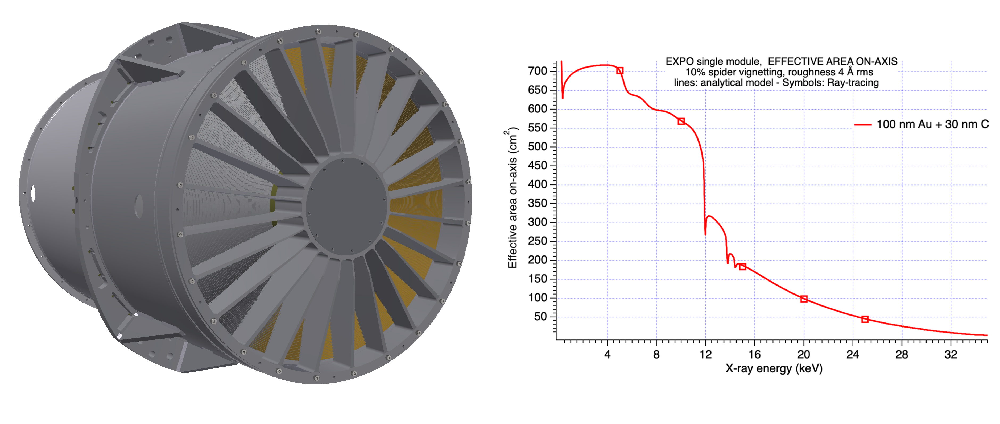
图注：\(\footnotesize{Left: \expo mirror unit design. Right: mirror unit on-axis effective area.}\)
对应解读：对应“建议重点查看的图表”第2项能段覆盖与有效面积曲线，以及“关键图表逐图导读”图2和模型拟合中关于 \(A_eff(E)\) 的讨论。
入选理由：候选图中唯一明确给出镜面单元设计和在轴有效面积曲线的图，直接支撑 EXPO 是否能在 2--35 keV 尤其 8 keV 以上保持有效响应这一核心论点，比单纯硬件照片更能检验宽能段偏振能力。
来源与置信度：\(arxiv_source\)；high；\(arxiv_source\) / main.tex:figure[7]
Fig06
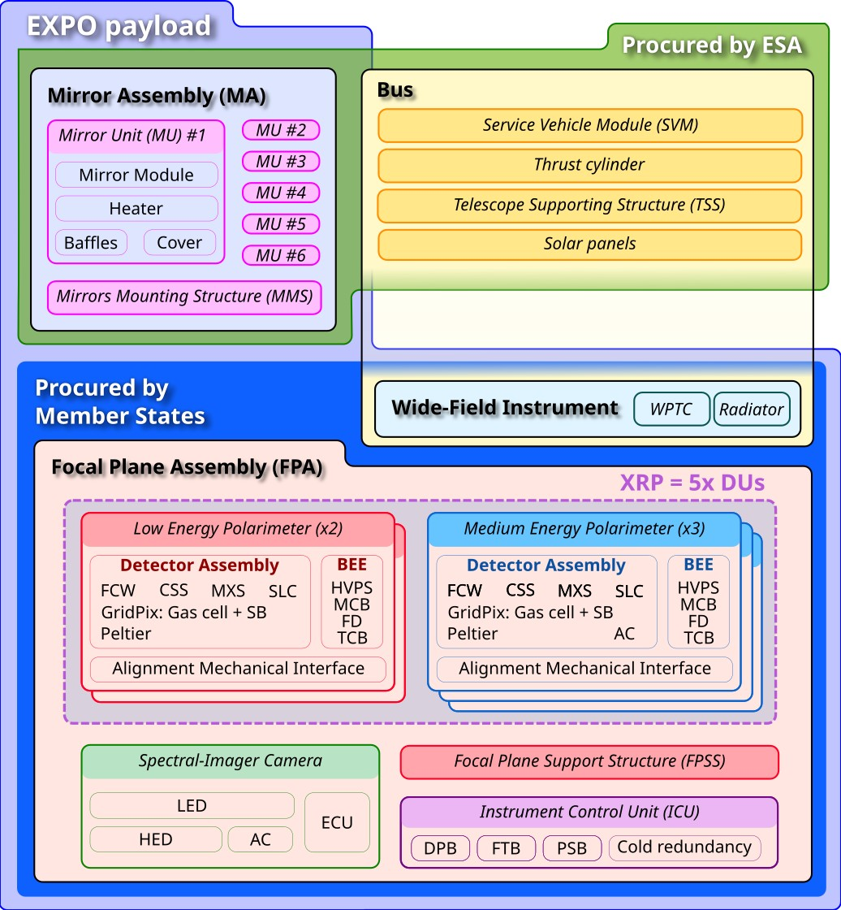
图注：Functional diagram of the \(\expo\) payload, showing the distribution of the payload elements between the Service Module (SVM) and the Focal Plane Assembly (FPA). The subdivision between ESA procured and Member State procured items is also shown.
对应解读：对应“建议重点查看的图表”第1项任务总体架构图，以及“关键图表逐图导读”图1关于发现—定位—指向—偏振—光谱信息流的解读。
入选理由：这是载荷功能框图，展示 SVM、FPA、各载荷单元及 ESA/成员国分工，可用于确认聚焦望远镜、焦平面偏振仪、WFI、SIC/控制链路等是否构成同一任务闭环，是理解整篇任务概念的关键图。
来源与置信度：\(arxiv_source\)；high；\(arxiv_source\) / main.tex:figure[6]
Fig05
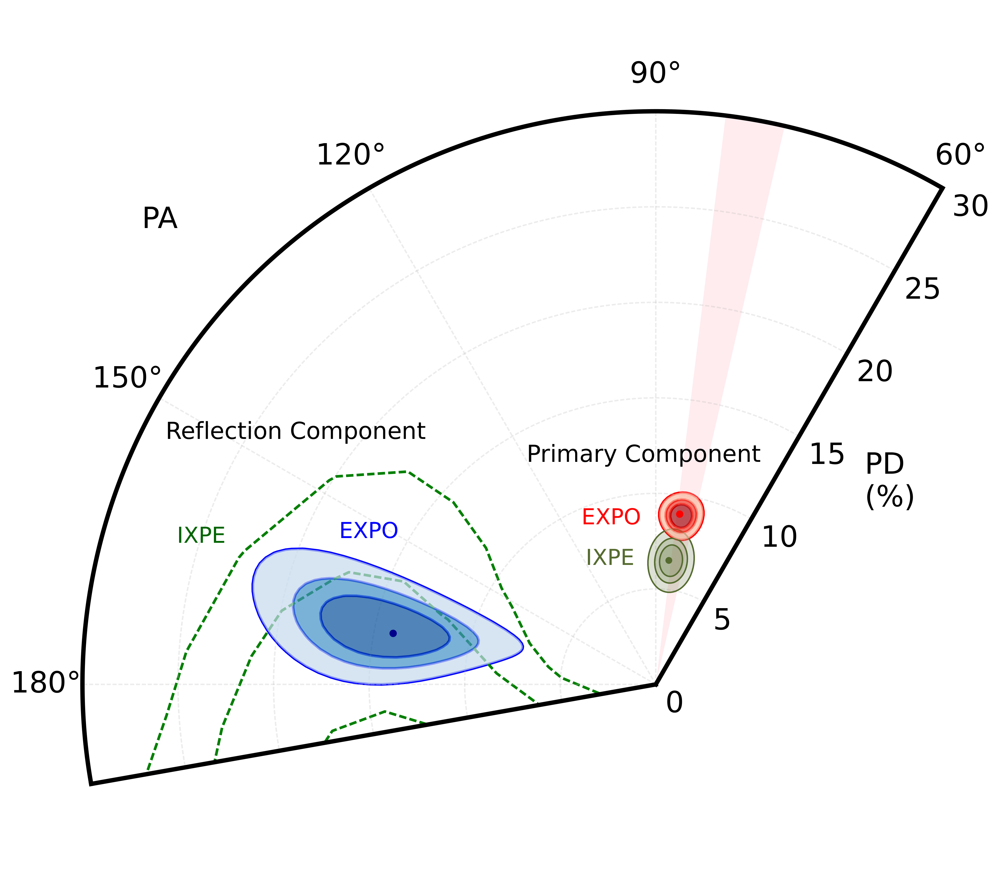
图注：Comparison of the \(\ixpe\) observation and the simulated \(\expo\) observation of NGC~4151. Contours are at 68, 90, and 99\% c.ls. \(\ixpe\) results are shown in green, \(\expo\) simulations (assuming a PD of the primary/reflection component of 7\%/10\%, the latter a rather conservative assumption) are shown in red for the primary continuum and blue for the reflection component. The pink bands in the polar plots indicate the direction of the radio emission. The wider energy band of \(\expo\) enables a detailed measurement of the polarization of the disk reflection component, beyond the reach of \(\ixpe.\)
对应解读：对应“建议重点查看的图表”第6项典型科学案例模拟图，以及“关键图表逐图导读”图6和模型拟合中关于多成分光谱-偏振分解、置信区间的讨论。
入选理由：该图比较 IXPE 实测与 EXPO 对 NGC 4151 的模拟，并给出 68、90、99% 置信轮廓，区分 primary continuum 与 reflection component，最直接展示宽能段如何分离反射偏振成分和改进模型约束。
来源与置信度：\(arxiv_source\)；high；\(arxiv_source\) / main.tex:figure[5]
Fig03
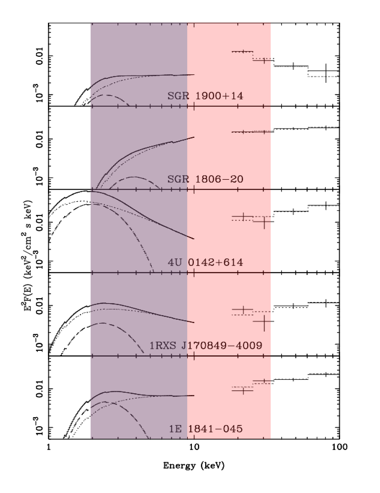
图注：A sample of magnetar spectra (adapted from \cite{Gotz2006}) illustrating their hard X-ray tails, with the \(\ixpe\) (purple) and \(\expo\) (purple and pink) energy bands overlaid. The spectral connection between the soft and hard X-ray components differs markedly among sources, emphasizing the need for the broadband polarimetric capabilities of \(\expo\) to establish the origin of the hard X-ray emission tail.
对应解读：对应“建议重点查看的图表”第2项能段覆盖与第6项磁星科学案例模拟，并对应详细解读中磁星硬 X 射线尾和 IXPE/EXPO 能段差异的讨论。
入选理由：该图把磁星谱和 IXPE、EXPO 能段叠加在一起，直观说明 EXPO 相对 IXPE 的关键增量是覆盖硬 X 射线尾；虽然不是灵敏度曲线，但非常适合支撑宽能段科学动机。
来源与置信度：\(arxiv_source\)；high；\(arxiv_source\) / main.tex:figure[3]
Fig04
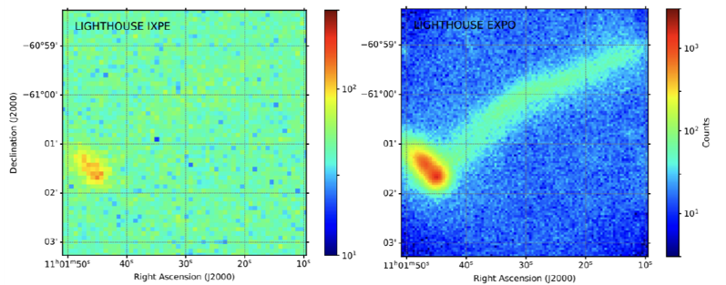
图注：The Lighthouse PWN as observed by \(\ixpe\) (left) and simulated for \(\expo\) (right) with the same 1~Ms exposure. \(\expo\) will perform spatially resolved polarimetry of the filament, mapping the magnetic-field orientation and extending these studies to many PWNe beyond the reach of \(\ixpe\) .
对应解读：对应“建议重点查看的图表”第6项典型科学案例模拟，以及详细解读中 SNR/PWN 空间分辨偏振和磁场方向映射的讨论。
入选理由：该图直接比较 IXPE 观测与同曝光 EXPO 模拟的 Lighthouse PWN，展示 EXPO 对细丝结构进行空间分辨偏振和磁场方向映射的能力，是科学收益层面的重要示例。
来源与置信度：\(arxiv_source\)；high；\(arxiv_source\) / main.tex:figure[4]
Fig08
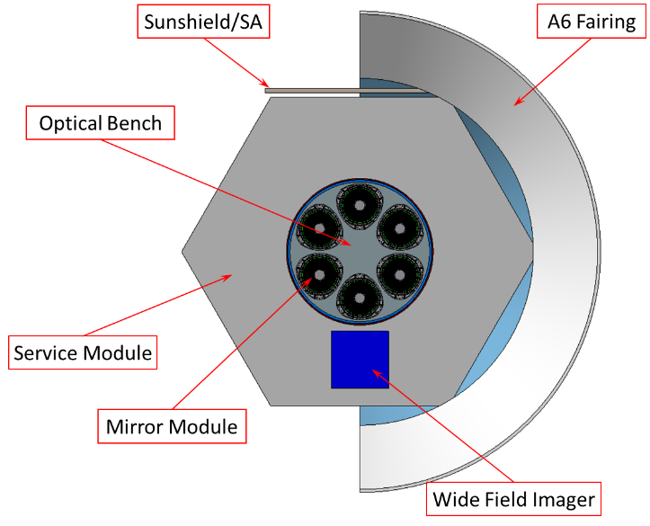
图注：The Service Module with the accomodation of the WFI and the 6 mirrors
对应解读：对应“建议重点查看的图表”第1项任务总体架构图和第5项 WFI 视场/触发能力中关于 WFI 与镜面在服务舱上布置的部分。
入选理由：该图展示服务舱上 WFI 与镜面组件的安装布局，可辅助理解大视场监测器与聚焦镜组的物理关系；但它不包含触发灵敏度、定位精度或重定向时间，因此科学诊断价值低于功能框图和有效面积曲线。
来源与置信度：\(arxiv_source\)；high；\(arxiv_source\) / main.tex:figure[8]
强相关工作
这篇工作的直接同类背景是 IXPE 及其后的下一代 X 射线偏振任务研究。IXPE 是已经在轨并产生大量科学结果的基准任务，eXTP、XIPE、PolSTAR、XL-Calibur 等概念或实验则从不同角度探索更大面积、更高能段或气球/卫星平台的偏振能力。检索关键词可用 “IXPE X-ray polarimetry review”、“gas pixel detector photoelectric polarimeter”、“Timepix InGrid X-ray polarimeter”、“hard X-ray polarimetry mission concept”、“eXTP polarimetry”、“PolSTAR hard X-ray polarimetry”。
在科学解释上，EXPO 与多个已有张力相连：IXPE 对某些黑洞双星给出的偏振角和预期喷流/盘几何不完全直观；磁星软硬能段偏振预测在强磁场 QED、磁层散射和表面辐射模型之间差异很大；AGN 冠冕几何与反射偏振也仍存在模型简并。读者应把 EXPO 看作解决这些张力的潜在观测平台，而不是单独的技术升级。相关检索关键词包括 “magnetar hard X-ray polarization”、“black hole binary IXPE polarization”、“AGN X-ray reflection polarization”、“pulsar wind nebula X-ray polarization”、“GRB afterglow X-ray polarization”。
同一事件 / 同类源线索：
- https://arxiv.org/abs/2608.20898
- https://arxiv.org/pdf/2608.20898
- https://ixpe.msfc.nasa.gov/
- https://www.esa.int/Science_Exploration/Space_Science/Cosmic_Vision
相似工作：
基础理论 / 方法工作：
- https://ui.adsabs.harvard.edu/abs/1978Natur.273..731W/abstract
- https://ui.adsabs.harvard.edu/abs/2010SPIE.7732E..0LW/abstract
- https://ui.adsabs.harvard.edu/abs/2021AJ....162..208W/abstract
相反观点 / 张力线索：
4. Generation of TeV Photons by PeV Neutrinos in Dense Astrophysical Environments
- 来源：arXiv / astro-ph.HE
- 链接：https://arxiv.org/abs/2608.21266v1
- 作者：Jun-Chen Wang, Hanlin Song, Hao Li, Jie Zhu, Bo-Qiang Ma
- 评分：novelty 7/10，importance 6/10，relevance 10/10，final 8.70/10
- 推荐理由：直接连接PeV中微子、TeV-PeV伽马射线和GRB 221009A，主题与伽马射线/高能中微子多信使高度相关；机制较投机但值得专业读者快速评估。
中文题目：致密天体环境中由 PeV 中微子产生 TeV 光子的机制
做了什么：这篇文章讨论一个不常被放在伽马射线解释主线中的过程：PeV 量级的超高能中微子在致密天体外层与核子发生深度非弹性散射，产生次级夸克和胶子，随后强子化为介子，其中中性 pion 衰变给出 TeV 以上光子。作者计算了入射中微子能量在 PeV 以上时的次级光子能谱，并声称产生能量超过 \(1\,\mathrm{TeV}\) 光子的概率可超过 \(13\%\)。他们进一步把该机制用于解释 \(\mathrm{GRB\ 221009A}\) 爆发前 TeV 光子的能量和提前到达时间，认为这为超高能中微子事件与 TeV-PeV 伽马观测之间提供了一条可能的多信使连接。
为什么重要：重要性在于它试图把两个通常分开处理的问题接起来：致密源内的 PeV 中微子产生，以及 TeV-PeV 光子的观测。若这种过程在光学深度合适的外层区域有效，它会改变我们对某些高能瞬变源伽马射线成分来源的判断，也会给“中微子先到、光子后出”或“高能光子提前出现”的事件提供一种非标准解释。
理论 / 观测 / 仪器方法价值：对理论的价值是把中微子-核子散射、部分子级联、强子化和 \(\pi^0\) 衰变光子谱放进同一条可计算链条。对观测的价值是给出一个可检验预言：如果 TeV 光子来自 PeV 中微子在源外层的相互作用，则光子能谱、到达时间提前量、源环境柱密度和伽马射线逃逸条件之间应存在关联。对方法的价值是提醒读者，在解释极端 TeV 瞬变时，除常规电子逆康普顿和质子-光子/质子-质子过程外，还要考虑中微子诱发的次级电磁信号。
为什么应该关注：你应该关注它，因为 \(\mathrm{GRB\ 221009A}\)、LHAASO 和 KM3NeT/IceCube 的 PeV 事件正在把多信使天体物理推向一个尴尬但有趣的区域：观测到的粒子能量很高，源环境又很复杂，传统单一区域模型往往不够。本文提出的机制未必是最终答案，但它给出了一个可量化的替代通道，尤其适合用来检验“致密环境中的中微子是否能留下可见 TeV 光子足迹”。
展开详细解读：文章讲解、背景、理论、重点章节、图表与相关工作
文章详细讲解
科学问题：本文关心的是 PeV 级超高能中微子是否只是一种几乎不可见的逃逸信使，还是也能在源附近致密物质中转化出可观测的 TeV-PeV 光子。通常，高能伽马射线被归因于电子逆康普顿、同步辐射自康普顿、质子-光子相互作用或质子-质子碰撞后的 \(\pi^0\) 衰变；而中微子由于相互作用截面小，常被视为直接逃逸的探针。作者把问题反过来问：如果中微子穿过的是致密但外层光学深度并不太大的介质，它与核子的罕见碰撞是否能产生足够硬、足够早、且能够逃逸的 TeV 光子？
作者怎么做：文章从中微子-核子深度非弹性散射出发，考虑入射 \(\nu\) 或 \(\bar\nu\) 与核子中的部分子相互作用。散射后产生的次级部分子会经历强子化，生成带电和中性介子。中性 pion 的两光子衰变 \(\pi^0\rightarrow 2\gamma\) 是 TeV 光子的直接来源，带电 pion 和其他强子则进入更复杂的级联和衰变链。作者计算不同入射中微子能量下的次级光子能谱，并把关注点放在能量高于 \(1\,\mathrm{TeV}\) 的光子产生概率上，因为这是地面切伦科夫望远镜、空气簇射阵列和广域伽马巡天仪器最直接相关的能区。
关键结果：核心结论是，当入射 \(\nu\) 或 \(\bar\nu\) 的能量超过 \(1\,\mathrm{PeV}\) 时，产生 \(E_\gamma>1\,\mathrm{TeV}\) 光子的概率可大于 \(13\%\)。这不是说每个中微子都必然产生一个可被地球探测到的 TeV 光子，而是说在一次中微子-核子相互作用的次级粒子谱中，TeV 光子产额并不可以忽略。作者进一步将该机制用于 \(\mathrm{GRB\ 221009A}\) 的爆发前 TeV 光子，认为如果超高能中微子先由内区产生并向外传播，在外层稀薄到足以让伽马射线逃逸的区域发生相互作用，就可能自然给出光子的高能量和相对主爆发的提前时间。
局限和下一步：这类模型的关键瓶颈不在于单次相互作用能否产生 TeV 光子，而在于天体环境是否同时满足三个条件：足够大的核子柱密度以提高 \(\nu N\) 相互作用概率；足够低的 \(\gamma\gamma\)、Bethe-Heitler 和电磁级联吸收光学深度以允许 TeV 光子逃逸；以及合理的几何和时间结构以解释提前到达。下一步需要把源环境密度剖面、喷流几何、伽马射线吸收、级联再处理和探测器响应统一起来，并对不同 GRB、AGN、PWN 或银河中心源给出可观测的联合预言。
关键结果是怎么做出来的
本文最重要的证据链从“单次 \(\nu N\) 相互作用的次级光子谱”开始，而不是从某个完整源人口统计开始。作者选择 PeV 以上入射中微子和反中微子作为样本化输入能量，计算它们与核子发生深度非弹性散射后的强子化产物。由于摘要明确给出 \(E_\nu>1\,\mathrm{PeV}\) 时产生 \(E_\gamma>1\,\mathrm{TeV}\) 光子的概率超过 \(13\%\)，读者应把这个数理解为条件概率：在已经发生相互作用的前提下，次级终态中出现 TeV 光子的概率，而不是中微子穿过整个源后被探测为伽马射线的总效率。
事件或样本层面，本文的具体应用对象是 \(\mathrm{GRB\ 221009A}\) 的爆发前 TeV 光子。该事件本身是一个极端明亮 GRB，曾被多台高能仪器观测到，并引发大量关于 TeV 光子传播、EBL 吸收、洛伦兹不变性、喷流结构和早期外激波辐射的讨论。作者的做法是把观测到的 TeV 光子能量和相对于主爆发的提前时间作为需要解释的量，检验中微子先产生、传播到外层再转化为光子的方案是否在数量级上可行。
显著性和置信度方面，从摘要看，本文更像是机制和谱计算论文，而不是以新数据统计显著性为主的观测发现论文。因此读者不应期待类似 \(5\sigma\) 源探测声明的统计量，而应重点检查其概率定义、散射截面、强子化模型、入射中微子能谱假设和源环境柱密度。尤其要分清 \(P(E_\gamma>1\,\mathrm{TeV}\mid \nu N\ \mathrm{interaction})\) 与总的 \(P_{\nu\rightarrow\gamma}\)，后者还应乘上相互作用光学深度和伽马逃逸概率。
支撑结论的关键图表应包括：不同 \(E_\nu\) 下的 \(dN_\gamma/dE_\gamma\) 光子谱；\(E_\gamma>1\,\mathrm{TeV}\) 产额随 \(E_\nu\) 的变化；中微子与反中微子或不同散射通道的比较；以及应用到 \(\mathrm{GRB\ 221009A}\) 时，所需相互作用半径、密度或提前时间的参数空间。若论文给出与观测 TeV 光子能量和时间的对比图，读者应检查模型是否只匹配了能量阈值，还是同时匹配了绝对通量、时间分布和角向一致性。
主要系统误差来自三类。第一是高能 \(\nu N\) 截面和部分子分布函数在小 Bjorken \(x\) 区域的外推；第二是强子化和次级 pion 能量分配模型；第三是源内和宇宙传播中的 TeV 光子吸收。稳健性检验应改变入射中微子谱指数、源密度剖面、相互作用半径、EBL 模型和伽马射线逃逸光学深度，观察 \(13\%\) 量级的高能光子产额以及 \(\mathrm{GRB\ 221009A}\) 解释是否仍保持。
展开背景、理论、公式、模型、章节和图表导读
背景知识
研究对象是 PeV 级超高能中微子与 TeV-PeV 伽马射线之间可能存在的物理联系。IceCube 已经建立了天体高能中微子背景，KM3NeT 也在北半球深海条件下补充视场和系统误差控制。与此同时，LHAASO、Tibet AS\(\gamma\)、MAGIC、H.E.S.S.、HAWC 等地面高能伽马设备不断发现 TeV 到 PeV 光子源。两类信使都指向强子加速，但它们之间并不总是一一对应。
历史上，中微子和伽马射线的共同起源通常放在 \(pp\) 或 \(p\gamma\) 相互作用框架中：高能质子与气体或辐射场碰撞，产生 \(\pi^0\)、\(\pi^+\)、\(\pi^-\)，中性 pion 衰变为伽马射线，带电 pion 衰变为中微子。本文讨论的是另一条方向相反的链：已经产生的高能中微子在致密介质中再次与核子相互作用，由中微子诱发强子级联，再产生光子。这条链的效率通常低，因为弱相互作用截面小，但在高能和高柱密度环境中不一定完全可以忽略。
为什么现在值得重新看？原因有三点。第一，观测端已经进入 TeV-PeV 瞬变和 PeV 中微子同时讨论的阶段，极端事件如 \(\mathrm{GRB\ 221009A}\) 迫使模型解释非常高的光子能量和复杂的时间结构。第二，超高能 \(\nu N\) 截面随能量增加而上升，PeV 以上时相互作用概率比 GeV-TeV 中微子更可观。第三，致密源外层可能存在“中微子还能碰撞、伽马还能逃逸”的窄窗口，这是常规单区模型容易忽略的区域。
该领域常见误区之一是把“中微子弱相互作用”直接等同于“永远不会产生可观测电磁信号”。正确说法是，在普通星际介质中这种概率确实极低，但在 GRB 包层、致密风、并合喷流周围或活动星系核核区，柱密度可能改变结论。另一个误区是只要有 TeV 光子就一定能逃出源。事实上，TeV 光子很容易被软光子通过 \(\gamma\gamma\rightarrow e^+e^-\) 吸收，因此有效模型必须同时满足生成和逃逸。
还有一个容易混淆的问题是“光子提前到达”是否一定意味着超光速传播或洛伦兹不变性破缺。天体源内的几何、发射半径、粒子传播路径和相互作用时延都能制造复杂的相对到达时间。本文的方案把提前量归因于中微子先从内区逃逸、在外层转化为光子的时空几何，而不是必须诉诸新基本物理。
基础理论 / 方法脉络
基础物理图像可以从三步理解。第一步，极端天体环境中的质子或原子核被加速到 PeV-EeV 能量，与辐射场或气体作用产生高能中微子。第二步，这些中微子由于电中性且只参与弱相互作用，能比带电粒子更容易穿过致密区。第三步，如果它们在外层仍遇到足够多核子，就有小概率发生 \(\nu N\) 深度非弹性散射，释放一部分能量给强子终态，最终产生 TeV 光子。
中微子-核子深度非弹性散射的核心量包括入射中微子能量 \(E_\nu\)、核子质量 \(m_N\)、Bjorken 变量 \(x\)、非弹性度 \(y\)、四动量转移 \(Q^2\) 和总截面 \(\sigma_{\nu N}\)。在 PeV 能区，散射探测的是非常小的 \(x\) 区域，部分子分布函数的外推会影响截面和末态能量分配。非弹性度 \(y\) 决定有多少中微子能量进入强子系统，进而影响 \(\pi^0\) 和光子的能量上限。
本文模型假设中，关键不是中微子如何最初产生，而是它在致密外层与核子碰撞后的次级光子谱。强子化会把部分子能量分配到多种介子和重子中；\(\pi^0\) 的寿命极短，几乎立即衰变为两个光子。在高度相对论极限下，若 \(\pi^0\) 携带能量 \(E_{\pi^0}\)，两个衰变光子的典型能量为 \(E_\gamma\sim E_{\pi^0}/2\)，但实际分布受 boost 和碎裂函数影响。
观测上，真正能被探测的量不是源内产生的 \(dN_\gamma/dE_\gamma\)，而是经过源内吸收、宇宙传播吸收和探测器响应卷积后的事件数。TeV 光子会被源内软光子场和河外背景光吸收，形成电磁级联，因此高能端谱形对环境非常敏感。对于 \(\mathrm{GRB\ 221009A}\) 这样的瞬变，还需要把发射半径和几何时延纳入时间模型。
常见退化包括：更高的中微子注入能量可以补偿较低的相互作用柱密度；更高的本征光子产额可能被更强的 \(\gamma\gamma\) 吸收抵消；较早的发射时间和较大的发射半径都可能改变观测提前量。系统误差则包括高能截面、小 \(x\) 部分子分布、强子化模型、源光场、EBL 模型和地面伽马仪器能量重建。
公式与推导
第一步是用柱密度估计中微子在源外层发生相互作用的概率。若核子数密度为 \(n_N(r)\)，沿路径 \(s\) 的柱密度为
这里 \(N_N\) 的单位为 \(\mathrm{cm^{-2}}\)，它把源结构压缩成中微子实际穿过的靶物质量。
第二步，中微子-核子相互作用的光学深度为
当 \(\tau_{\nu N}\ll 1\) 时，发生至少一次碰撞的概率近似为
这说明单次碰撞的光子产额再高，总效率仍受弱相互作用截面和柱密度限制。
第三步，在深度非弹性散射中，常用非弹性度 \(y\) 表示转入强子系统的能量比例：
若 \(f_{\pi^0}\) 是强子能量中进入中性 pion 的比例，则中性 pion 总能量近似为
这一步连接了弱相互作用初态和电磁终态。
第四步，单个中性 pion 的主要衰变为
在高度相对论且忽略角分布细节的数量级估计中，若一个 \(\pi^0\) 的能量为 \(E_{\pi^0}\)，每个光子的典型能量满足
严格计算需要强子化碎裂函数和洛伦兹 boost 后的衰变角分布。
第五步，若以条件光子谱 \(dN_\gamma/dE_\gamma\) 描述一次 \(\nu N\) 相互作用产生的光子数，则超过阈值 \(E_{\rm th}\) 的光子产生概率或平均产额可写成
本文摘要中的结果对应 \(E_{\rm th}=1\,\mathrm{TeV}\) 且 \(E_\nu>1\,\mathrm{PeV}\) 时，\(P_\gamma\) 大于约 \(13\%\) 的量级。
第六步，源内产生的 TeV 光子还要乘以逃逸概率。若 \(\gamma\gamma\) 吸收光学深度为 \(\tau_{\gamma\gamma}(E_\gamma,r)\)，逃逸谱为
这体现了本文机制的关键窗口：相互作用区不能太稀，否则 \(P_{\rm int}\) 太小；也不能太厚，否则 TeV 光子逃不出。
第七步，若入射中微子通量为 \(\Phi_\nu(E_\nu)\)，观测到的光子通量可粗略写为卷积形式
其中 \(d_L\) 是光度距离，\(\dot N_\nu\) 是源系中微子产生率。实际应用到 GRB 时还需加入红移和时间演化。
第八步，提前到达或延迟可由发射半径和几何给出数量级估计。若中微子从内区近似直线传播到半径 \(R\) 后产生光子，相对于从中心直接发出的参考光子的时间差可写成
这里 \(\Gamma\) 是喷流洛伦兹因子，\(z\) 是红移，\(\Delta t_{\rm engine}\) 表示中心引擎注入时间差。这个式子说明观测到的 lead time 不只由粒子速度决定，也由发射半径、几何和引擎时序共同控制。
第九步，若要与探测器事件数比较，还需卷积有效面积：
这里 \(A_{\rm eff}\) 是仪器有效面积，\(\theta\) 是入射天顶角或离轴角，\(\mu\) 是期望事件数。对于稀有 TeV 瞬变，模型是否可行最终要看 \(\mu\) 是否能达到观测事件数且不违反其他能段上限。
模型拟合 / 应用方法
这类工作的拟合对象通常包括三组量。第一组是粒子物理输入，例如 \(\sigma_{\nu N}(E_\nu)\)、非弹性度 \(y\) 分布、强子化后 \(dN_\gamma/dE_\gamma\) 的形状。第二组是源环境参数，例如核子密度 \(n_N(r)\)、相互作用半径 \(R\)、软光子场密度和 \(\tau_{\gamma\gamma}\)。第三组是观测量，例如 TeV 光子的能量、到达时间、事件数或通量，以及中微子非探测给出的上限。
似然函数可按观测类型构造。若是 TeV 事件计数，可用 Poisson 似然比较模型期望 \(\mu_s+\mu_b\) 与观测计数 \(N\)。若有能量和时间信息，可写成未分箱似然，把每个事件的 \(E_i\)、\(t_i\)、方向误差和背景概率纳入。若论文只做机制解释而非完整统计拟合，读者也应在心里补上这个步骤：单次相互作用产生概率并不等同于可观测显著性。
参数退化非常明显。提高中微子注入归一化 \(L_\nu\) 可以补偿较小的 \(N_N\)；提高 \(N_N\) 会增加相互作用概率，但也可能对应更高软光子或物质密度，从而增加伽马吸收；较大的 \(R\) 可以改变时间提前量并降低光场密度，但也可能降低靶密度。入射谱指数、最大中微子能量和喷流洛伦兹因子之间也会互相补偿。
残差诊断应关注三个维度。能谱残差：模型是否只在 \(1\,\mathrm{TeV}\) 阈值附近有效，还是能解释更高能端。时间残差：TeV 光子的提前量是否集中在模型允许的 \(R\) 和 \(\Gamma\) 参数区间。多信使残差：同一模型是否预言过多可探测中微子、GeV 级级联光子或 X 射线再处理辐射。如果这些副产物超过观测上限，模型就会失效。
系统误差方面，高能 \(\nu N\) 截面的小 \(x\) 外推、强子化程序、EBL 吸收、源内软光子场、仪器能量标定和时间关联窗口都会影响结论。实际应用时可以把这些作为 nuisance parameters，并用 profile likelihood 或 Bayesian marginalization 评估结论稳健性。对于 \(\mathrm{GRB\ 221009A}\)，尤其要小心把单个极端事件的后验解释误当成普适机制。
重点章节 / 结果段落怎么读
-
引言和动机部分：读者应先看作者如何把 IceCube/KM3NeT 的 PeV 中微子、LHAASO/MAGIC/Tibet AS\(\gamma\) 等 TeV-PeV 光子观测和致密源环境联系起来。关键是判断文章要解决的是“共同源”问题，还是更具体的“中微子诱发光子”问题。
-
中微子-核子相互作用模型：这是全文的物理核心。应重点看作者采用的 \(\nu N\) 截面、能量范围、非弹性度处理、部分子分布函数和中微子/反中微子差异。若有模拟工具或参数化公式，应检查其适用能区是否覆盖 PeV 以上。
-
强子化与光子谱计算：这里决定 \(E_\gamma>1\,\mathrm{TeV}\) 光子概率大于 \(13\%\) 的结论。读者应看 \(dN_\gamma/dE_\gamma\) 是事件平均产额、概率密度还是归一化谱，并确认阈值积分的定义。
-
致密环境和光子逃逸讨论：如果论文包含源内光学深度或外层区域设定，这是判断天体可行性的关键。应检查作者是否同时考虑 \(\nu N\) 相互作用光学深度和 \(\gamma\gamma\) 吸收，而不是只计算生成端。
-
\(\mathrm{GRB\ 221009A}\) 应用部分：重点看模型如何解释爆发前 TeV 光子的能量和 lead time。读者应区分定性可行、数量级匹配和严格拟合三种层次，并检查是否需要极端参数。
建议重点查看的图表
-
不同入射 \(E_\nu\) 下的次级光子能谱 \(dN_\gamma/dE_\gamma\)：看谱峰位置、高能尾以及 \(1\,\mathrm{TeV}\) 阈值以上的面积。
-
\(P_\gamma(E_\gamma>1\,\mathrm{TeV})\) 随 \(E_\nu\) 的曲线：检查 \(13\%\) 结论出现在哪个能区，曲线是否对中微子/反中微子或模型选择敏感。
-
中微子-核子相互作用通道或强子化产物组成图：看 \(\pi^0\)、\(\pi^\pm\)、重子和其他介子的能量分配，判断 TeV 光子是否主要由 \(π^0\) 驱动。
-
源环境参数空间图：若有 \(N_N\)、\(R\)、\(\tau_{\gamma\gamma}\) 或密度剖面约束，应看允许区是否同时满足相互作用有效和光子逃逸。
-
\(\mathrm{GRB\ 221009A}\) 的能量-时间对比图：看模型点或带是否覆盖爆发前 TeV 光子，而不是只覆盖主爆发后的普通 afterglow。
-
系统误差或稳健性表：检查改变截面、入射谱、强子化参数、EBL 模型后，核心概率和 GRB 应用是否仍然成立。
关键图表逐图导读
图 1：若论文首先给出机制示意图，通常横向展示中微子从内区产生、穿过致密外层、与核子相互作用、产生强子级联并由 \(\pi^0\) 衰变成 TeV 光子的过程。读图时不要把箭头理解为高效率转化；关键是看作者把相互作用区放在源内哪个半径，以及该区域是否被标为光学薄。
图 2：光子能谱图应以 \(E_\gamma\) 为横轴，纵轴可能是 \(dN_\gamma/dE_\gamma\)、\(E_\gamma^2dN_\gamma/dE_\gamma\) 或每次相互作用的归一化产额。不同颜色线通常代表不同 \(E_\nu\)。主要结论是 PeV 入射中微子可以给出 TeV 以上光子尾。读图陷阱是纵轴归一化：如果是每次相互作用产额，它不能直接当成到达地球的通量。
图 3：阈值积分概率图可能显示 \(P_\gamma(>1\,\mathrm{TeV})\) 随 \(E_\nu\) 增加。应检查 \(13\%\) 是在哪些模型假设下得到的，曲线是否在 \(1\,\mathrm{PeV}\) 附近迅速上升，还是只在更高能时明显。若图中有误差带，应看它来自 Monte Carlo 统计、PDF 不确定性还是强子化模型。
图 4：若有源环境或逃逸条件图，坐标轴可能是相互作用半径 \(R\) 与密度 \(n_N\)，或柱密度 \(N_N\) 与光学深度 \(\tau_{\gamma\gamma}\)。最关键的是允许区是否存在：\(\tau_{\nu N}\) 不能太小，\(\tau_{\gamma\gamma}\) 又必须小于或接近 \(1\)。读图陷阱是只看生成率而忽略吸收阴影区。
图 5：\(\mathrm{GRB\ 221009A}\) 应用图应把观测 TeV 光子的能量或到达时间与模型预测比较。若横轴为相对触发时间、纵轴为 \(E_\gamma\)，模型应解释 preburst 点的位置。读图时要看是否给出观测误差、背景概率和仪器能量重建误差；单个点落在模型带内不足以证明机制唯一。
图 6：稳健性图或表若存在，应列出不同入射谱、截面、强子化模型或环境参数下的 \(P_\gamma\) 和所需源参数。读者应检查结论是否依赖某个极端参数组合，例如异常高的中微子 luminosity 或过大的外层柱密度。
论文原图 / 可嵌入图片
Fig03
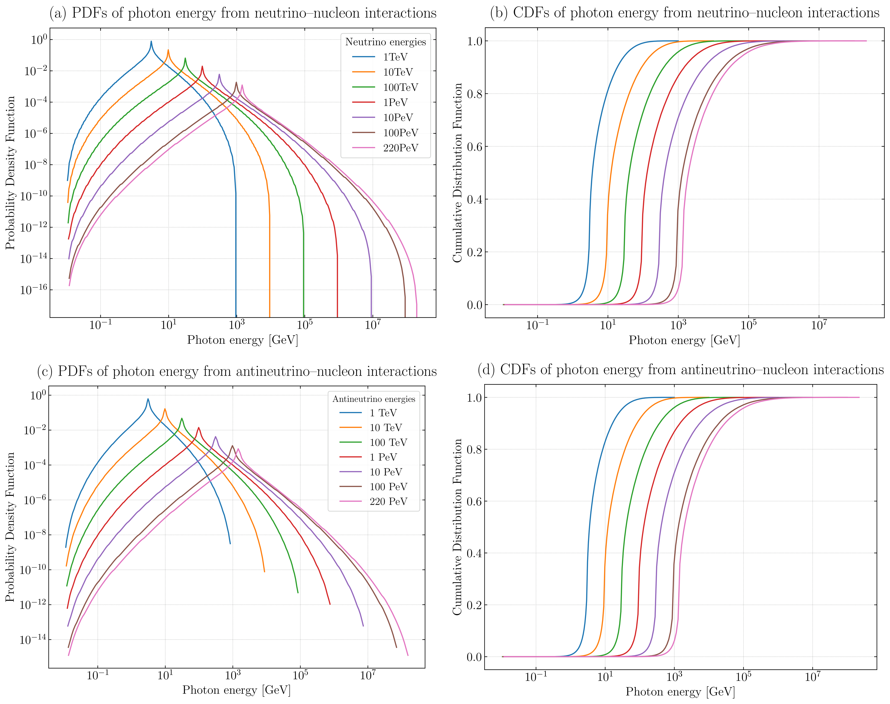
图注：Photon energy distributions generated by neutrino–nucleon and antineutrino–nucleon scattering. The upper panels show the probability density (left) and cumulative distribution (right) for neutrinos, while the lower panels present the corresponding distributions for antineutrinos. The results demonstrate that TeV–PeV photons are produced with significant probability in both cases.
对应解读：对应“建议重点查看的图表”第1、2项，以及“关键图表逐图导读”中图2/图3关于次级光子能谱、累积分布和 \(P_\gamma(E_\gamma>1\\,\mathrm{TeV})\) 的解读。
入选理由：这是全文最直接支撑核心结论的图：同时给出中微子和反中微子诱导的光子能量概率密度与累积分布，可用于检查 TeV–PeV 光子尾、不同入射情形下的产额，以及“(E_\
u>1\,\(\mathrm{PeV}\)) 时产生 \(E_\gamma>1\\,\mathrm{TeV}\) 光子的概率超过约 13%”这一关键说法。相比单纯费曼图或截面图，它最能把粒子物理计算与可观测 TeV 光子联系起来。
来源与置信度：\(arxiv_source\)；high；\(arxiv_source\) / \(main_arXiv.tex\):figure[3]
Fig06
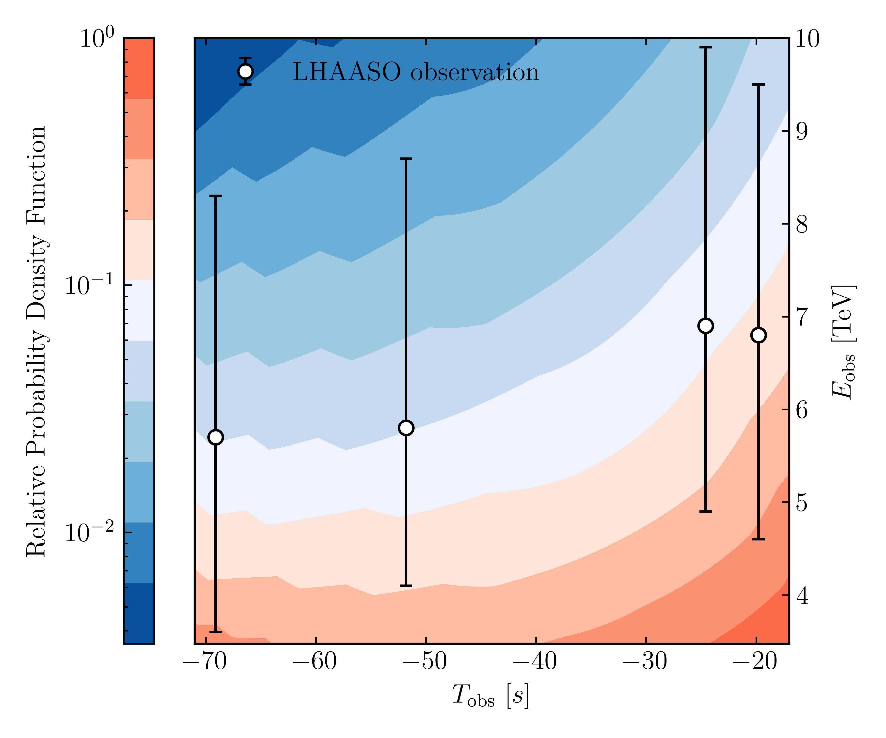
图注：Relative two-dimensional probability density in the observed $(T_{\rm obs},E_{\rm obs})$ plane, normalized to its maximum within the displayed region. The benchmark parameters are $k=2.5$, $L_{0}=1$, $\rho_{0}=10$, and $R_{12}=20$. The data points with error bars indicate the reported LHAASO preburst photons of GRB~221009A. All points lie within the main high-probability region of the predicted distribution.
对应解读：对应“建议重点查看的图表”第5项，以及“关键图表逐图导读”中图5关于 \(\mathrm{GRB\\ 221009A}\) 的能量-时间对比图和模型预测区的解读。
入选理由：该图直接把模型预测的二维 \((T_{\rm obs},E_{\rm obs})\) 概率密度与 LHAASO 报告的 GRB 221009A 爆发前 TeV 光子数据点及误差棒进行比较，是检验论文应用部分是否真正覆盖 preburst 事件的关键证据。它比单独的时间分布更有科学价值，因为同时展示了提前时间和观测能量两个残差维度。
来源与置信度：\(arxiv_source\)；high；\(arxiv_source\) / \(main_arXiv.tex\):figure[6]
Fig05
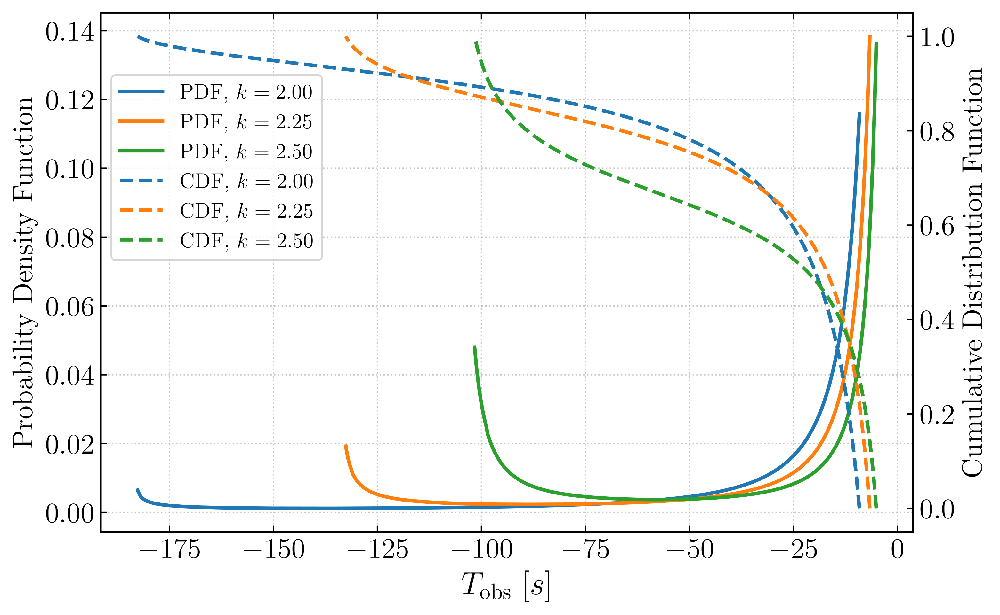
图注：Lead-time distribution for GRB~221009A. Solid curves: normalized probability density of the lead time $T_{\rm obs}\equiv -T$ for $k=2.00$ (blue), $k=2.25$ (orange), and $k=2.50$ (green). Dashed curves: corresponding cumulative distribution functions. The benchmark parameters are $L_{0}=1$, $\rho_{0}=10$, and $R_{12}=20$.
对应解读：对应“建议重点查看的图表”第5项，以及模型拟合段落中关于时间残差、相互作用半径和密度剖面对提前到达时间影响的讨论。
入选理由：该图展示 GRB 221009A 的 lead-time 概率密度和累积分布，并比较不同密度剖面指数 \(k\) 的影响，可用于判断模型是否自然给出爆发前 TeV 光子的提前量。虽然不含能量轴，信息量低于 Fig06，但它更清楚地展示了时间结构和环境参数对预测的敏感性。
来源与置信度：\(arxiv_source\)；high；\(arxiv_source\) / \(main_arXiv.tex\):figure[5]
Fig04
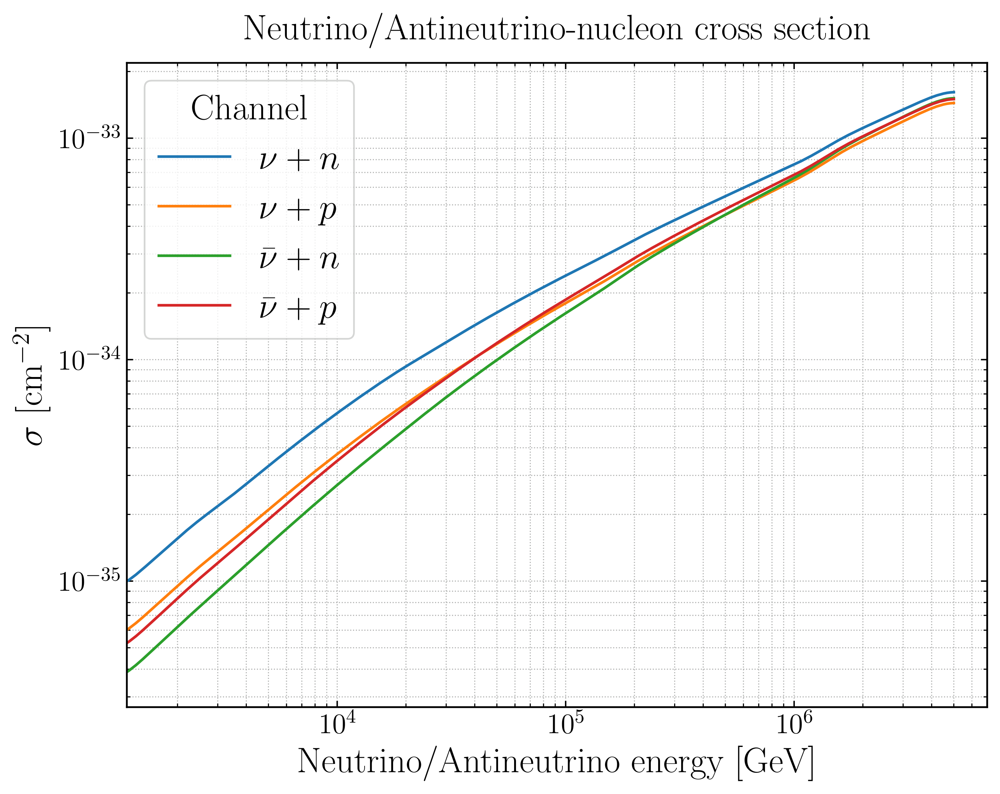
图注：Total (anti)neutrino--nucleon cross sections as functions of the (anti)neutrino energy, including the channels $\nu+n$ (blue), $\nu+p$ (orange), $\bar{\nu}+n$ (green), and $\bar{\nu}+p$ (red). Here all final states are included, rather than only those leading to pion production.
对应解读：对应“模型拟合”段落中粒子物理输入 (\sigma_{\nu N}(E_\
u)) 的讨论，以及“建议重点查看的图表”中关于中微子/反中微子和通道敏感性的部分。
入选理由：该图给出 (\
u+n)、(\
u+p)、(\bar\
u+n)、(\bar\
u+p) 总截面随能量的变化，是把单次相互作用产额推广到致密环境中相互作用概率的基础输入。它不能直接显示 TeV 光子产额或源逃逸条件，但有助于读者检查 PeV 能区截面增长和中微子/反中微子差异。
来源与置信度：\(arxiv_source\)；high；\(arxiv_source\) / \(main_arXiv.tex\):figure[4]
Fig02
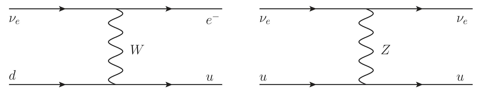
图注：Representative electroweak diagrams for neutrino–parton scattering: (left) charged-current process mediated by a $W$ boson; (right) neutral-current process mediated by a $Z$ boson.
对应解读：对应“建议重点查看的图表”第3项中关于中微子-核子相互作用通道的要求，以及“关键图表逐图导读”机制示意部分。
入选理由：该图展示带电流和中性流的代表性中微子-部分子散射图，有助于理解计算从哪些标准模型相互作用出发。其科学价值主要是机制说明，不含能谱、积分概率、误差带或源环境约束，因此优先级低于 Fig03、Fig06、Fig05 和 Fig04。
来源与置信度：\(arxiv_source\)；high；\(arxiv_source\) / \(main_arXiv.tex\):figure[2]
Fig01
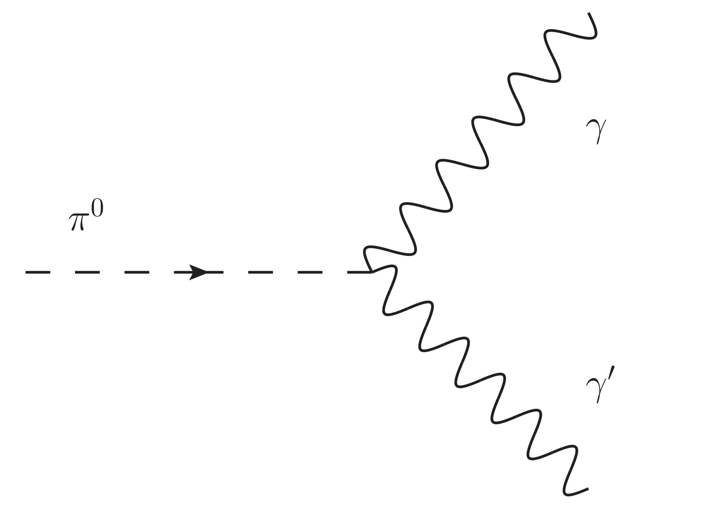
图注：Feynman diagram for the neutral-pion decay.
对应解读：对应“建议重点查看的图表”第3项中关于 \(\pi^0\) 衰变驱动 TeV 光子来源的讨论。
入选理由：该图只说明中性 pion 衰变为光子的基本过程，可帮助读者理解 TeV 光子的直接来源是 (\pi^0\
ightarrow2\gamma)。但它不展示强子化产物组成、能量分配或概率大小，因此对日报详细解读的支撑较弱，仅作为机制背景图备选。
来源与置信度：\(arxiv_source\)；high；\(arxiv_source\) / \(main_arXiv.tex\):figure[1]
强相关工作
这篇工作与传统强子模型有直接关系，但方向不同。经典 \(pp\) 和 \(p\gamma\) 模型从高能质子出发，同时产生中微子和 \(\pi^0\) 伽马射线；本文则从已经存在的 PeV 中微子出发，让它在致密外层通过 \(\nu N\) 相互作用再生 TeV 光子。检索关键词可用 “neutrino nucleon deep inelastic scattering PeV gamma-ray production”、“hadronization neutrino induced photons dense astrophysical environments”、“ultra high energy neutrino gamma ray connection”。
与 \(\mathrm{GRB\ 221009A}\) 相关的工作非常多，包括 LHAASO 的 TeV afterglow、Fermi/GBM 与 Swift 的 prompt/afterglow 分析、EBL 吸收和洛伦兹不变性检验、以及关于早期 TeV 光子是否需要新物理的讨论。本文属于同一事件的替代解释类论文，应与这些同事件观测论文和相反观点一起读。检索关键词可用 “GRB 221009A preburst TeV photons”、“GRB 221009A LHAASO TeV afterglow”、“GRB 221009A neutrino precursor”、“GRB 221009A Lorentz invariance TeV”。
在基础理论上，应对照高能 \(\nu N\) 截面、部分子分布函数小 \(x\) 外推和超高能中微子传播文献。相反或张力方向包括：常规外激波逆康普顿能否解释 TeV 光子；源内 \(\gamma\gamma\) 吸收是否过强；以及 IceCube 对 GRB 中微子的非探测是否限制了所需中微子通量。
同一事件 / 同类源线索：
- https://arxiv.org/abs/2608.21266
- https://arxiv.org/pdf/2608.21266
- https://www.science.org/doi/10.1126/science.adg9328
相似工作：
基础理论 / 方法工作：
相反观点 / 张力线索：
5. VLASS Discovery of a Luminous Galactic Radio Transient Evolving on Decade Timescales
- 来源：arXiv / astro-ph.HE
- 链接：https://arxiv.org/abs/2608.21320v1
- 作者：Jessie M. Miller, Gregg Hallinan, Dillon Dong, Adolfo S. Carvalho, S. T. Myers, Jean Somalwar, Casey Law, B. M. Gaensler
- 评分：novelty 8/10，importance 7/10，relevance 8/10，final 8.65/10
- 推荐理由：银河系内高亮度、十年尺度射电暂现源，可能为类似年轻SS 433的致密天体吸积/喷流-风相互作用系统；多波段证据新颖，虽非伽马射线主题但属高能暂现源，值得关注。
中文题目：VLASS 发现一个十年尺度演化的高光度银河系射电暂现源
做了什么：这篇论文报道并系统分析了射电暂现源 VT J1906+0849：它在 VLASS 第一期中以约 \(70\,\mathrm{mJy}\) 的亮度被发现，在早期 NVSS 中未探测到，后续追溯显示它大约从 \(2005\) 年开始出现，\(2014\) 年达到不低于 \(200\,\mathrm{mJy}\) 的峰值，随后衰减，并在 \(2025\) 年末再次增亮。多波段证据，尤其是低银纬、光学—红外对应体性质和近红外谱线，支持它是一个银河系内源；若距离 \(d\gtrsim15\,\mathrm{kpc}\)，其射电光度非常高，可能需要持续吸积到致密天体来供能。奇怪的是，它相对普通银河 X 射线双星非常 X 射线暗，射电谱像有同步自吸收，但 VLBI 和能量均分尺寸估计都表明射电发射区在 \(5\) 年以上几乎不膨胀。作者提出一个可能图像：它可能是 SS 433 的年轻类似体，强盘风把连续供能的同步辐射外流限制在紧凑区域内。
为什么重要：它重要在于把几个通常不容易同时出现的性质放在了同一个银河系源上：高射电光度、十年尺度演化、紧凑且几乎不膨胀的同步辐射区、X 射线弱、以及近红外中指向 \(\sim2000\,\mathrm{km\,s^{-1}}\) 非对称外流的宽发射线。若解释成立，VT J1906+0849 可能代表一类被强风遮蔽或约束的吸积致密天体外流，填补普通 X 射线双星、微类星体、射电新星和超新星遗迹之间的观测空白。
理论 / 观测 / 仪器方法价值：对观测而言，这篇文章展示了 VLASS、NVSS、FIRST/历史 VLA 数据、VLBI、Swift-XRT、光学—红外测光和近红外光谱如何拼接出一个十年尺度射电暂现源的物理图像。对理论而言，它迫使我们重新考虑吸积喷流在稠密盘风或包层中传播时的辐射效率、膨胀速度和 X 射线可见性。对方法而言，论文的价值在于把同步自吸收、能量均分尺寸、VLBI 角尺寸上限和多历元谱演化放在同一个约束框架里，而不是只用单一射电光变曲线分类。
为什么应该关注：如果你关心银河系暂现源、微类星体、吸积反馈、VLASS 时间域科学或被遮蔽致密天体人口，这个源都值得看。它不是又一个标准 X 射线双星射电耀发，也不像普通膨胀射电超新星；它可能提示有一类高射电、低 X 射线、被风限制的致密天体系统被以往巡天漏掉。未来几年继续监测它的射电谱峰、VLBI 尺寸和红外线宽，可能直接检验“年轻 SS 433 类似体”这一解释。
展开详细解读：文章讲解、背景、理论、重点章节、图表与相关工作
文章详细讲解
科学问题：VT J1906+0849 的核心问题不是“发现了一个亮射电源”这么简单，而是它在多维参数空间中不落入熟悉类别。它位于银纬约 \(0.74^\circ\)，在 NVSS 时代没有被探测到，却在 VLASS 中以几十毫扬斯基量级出现；历史射电资料显示它并非分钟、天或月尺度爆发，而是在约二十年时间中缓慢上升、达到 \(\gtrsim200\,\mathrm{mJy}\) 峰值、再衰减并可能再增亮。这种十年尺度、银河面附近、高光度、紧凑同步辐射源的组合，既不像典型活动恒星耀发，也不像常规 X 射线双星的离散喷流事件，也不容易直接归入超新星遗迹或脉冲星风云。
作者怎么做：论文首先利用 VLASS 发现源，并把它与 NVSS 非探测和中间年代的 VLA/射电巡天资料连接起来，重建长期光变。随后作者用多频射电观测得到宽频谱，检查谱峰、谱指数和可能的同步自吸收特征；再用 VLBI 给出角尺寸约束，检验发射区是否像普通爆炸抛射物那样持续膨胀。多波段方面，Swift-XRT 的非探测给出 X 射线上限，光学—红外测光与近红外光谱用于判断对应体性质和是否为银河系内源。近红外谱中单条宽发射线被解释为蓝移的 \(\mathrm{Br}\gamma\)，指向一个稳定速度中心但线宽、光度可变的非对称外流。
关键结果：最突出的结果有四个。第一，射电光变显示源在 \(2005\) 年前后出现、\(2014\) 年附近最亮、之后下降，并在 \(2025\) 年末有再增亮迹象，说明不是一次简单、自由膨胀的短暂抛射。第二，宽频射电谱显示类似同步自吸收的凸形谱，但能量均分尺寸和 VLBI 尺寸限制暗示射电发射区多年内几乎没有可测膨胀，这与谱峰演化之间存在张力。第三，若距离在 \(d\gtrsim15\,\mathrm{kpc}\)，射电光度处在银河系源中很极端的位置，却又被 Swift-XRT 限制为 X 射线弱，偏离常规 X 射线双星的射电—X 射线经验关系。第四，近红外宽线若为蓝移 \(\mathrm{Br}\gamma\)，则对应约 \(2000\,\mathrm{km\,s^{-1}}\) 的持续不对称外流。
局限和下一步：最大不确定性之一是距离。论文给出支持银河系起源的证据，但具体距离直接影响射电光度、物理尺寸、能量和与不同源类的比较。第二，近红外单线识别为 \(\mathrm{Br}\gamma\) 是解释链的关键环节；如果谱线识别或速度解释改变，外流图像也会改变。第三，同步自吸收模型通常假设近似均匀、球形或简单几何，而这里可能是喷流—风相互作用的高度非均匀系统。下一步最关键的是持续 VLBI 成像、多频射电谱监测、深 X 射线观测和更高信噪比近红外时域光谱，以确认是否存在持续喷流、盘风遮蔽和几何不对称。
关键结果是怎么做出来的
数据和样本选择方面，本文围绕单个源 VT J1906+0849 做深度个例分析，而不是统计样本论文。发现入口是 VLASS 第一期中约 \(70\,\mathrm{mJy}\) 的源，随后与 NVSS 的非探测相比较，得到至少在 NVSS 观测年代该位置没有同等亮度射电源。作者进一步检索多历元射电观测，指出它大约在 \(2005\) 年首次可见，\(2014\) 年峰值达到 \(\gtrsim200\,\mathrm{mJy}\)，之后下降，直到 \(2025\) 年末出现再增亮。这个时间轴是论文分类判断的主轴：它排除了很多快速耀发模型，也让普通自由膨胀爆炸模型变得困难。
显著性或置信度的关键不在一个简单的 \(5\sigma\) 新源发现，而在多条观测约束是否共同指向同一物理图像。VLASS 发现本身在射电成像中是高信噪比源；NVSS 非探测给出历史上限；多频射电谱给出谱峰和谱指数；VLBI 约束给出角尺寸上限或紧致性；Swift-XRT 非探测给出 X 射线通量上限；红外光谱给出一条宽线的中心、宽度和时间变化。这些约束之间的联合一致性，比单一测量的统计显著性更重要。
模型比较上，论文主要采用排除式和物理一致性比较：活动星、普通 X 射线双星射电耀发、超新星/超新星遗迹、脉冲星风云、背景活动星系核等解释都需要面对低银纬、红外对应体、长期光变、X 射线弱、紧凑尺寸和谱演化。同步自吸收能解释凸形射电谱，但若用标准膨胀源图像，谱峰移动和通量变化通常会伴随可观尺寸增长；本文的 VLBI 和能量均分尺寸约束显示这种增长很小，迫使作者考虑外部风或环境对喷流的限制。
支撑结论的图表应包括：长期射电光变图、多频谱能量分布或射电谱图、VLBI 图像/可见度尺寸约束、X 射线上限与 X 射线双星比较图、近红外谱线剖面及其多历元变化、以及可能的源类参数空间比较表。读者应特别看光变峰值和再增亮是否由同一频段、同一通量标定体系支撑；谱峰是否真实来自同步自吸收而非非同时多频观测造成的伪弯曲；VLBI 尺寸上限是否足以排除预期膨胀速度；红外宽线是否有足够波长覆盖来排除其他线识别。
系统误差主要来自几个方面。第一，多历元射电数据来自不同阵列、频率和分辨率，通量标定、分辨率过滤和邻近银河面背景都可能影响长期光变。第二，距离不确定会以 \(d^2\) 放大光度和能量估计的不确定性。第三，能量均分半径依赖几何、填充因子、质子能量含量和同步自吸收假设。第四，Swift-XRT 非探测给出的 X 射线弱结论依赖吸收柱密度修正；在银面方向，\(N_{\rm H}\) 的不确定性不可忽略。第五，近红外谱线识别为蓝移 \(\mathrm{Br}\gamma\) 需要排除其他原子或分子线以及背景污染。
稳健性检验方面，最有说服力的是多方法尺寸约束的一致性：若同步自吸收能量均分半径、VLBI 角尺寸上限和光变时间尺度都指向紧凑区域，则“慢膨胀或被限制”不是单一模型产物。其次，若再增亮期间谱峰和近红外线宽同步变化，将支持持续供能而非一次抛射余辉。反过来，如果未来 VLBI 发现快速角向扩张，或者深 X 射线观测发现被吸收的明亮硬 X 射线核心，当前解释需要明显修正。
展开背景、理论、公式、模型、章节和图表导读
背景知识
研究对象是一个银河系方向的亮射电暂现源 VT J1906+0849。射电暂现源可以来自很多物理通道：恒星耀发、X 射线双星喷流、磁星爆发、脉冲星风云变化、经典新星、超新星、潮汐瓦解事件、活动星系核耀变，甚至一些尚未分类的吸积外流系统。银河面附近的暂现源尤其难处理，因为视线方向上恒星密度高、消光强、背景复杂，光学对应体不一定清楚，且背景活动星系核也可能投影到低银纬区域。
历史上，银河系高能暂现研究强烈依赖 X 射线触发。典型 X 射线双星在吸积率上升时先在 X 射线变亮，随后产生平稳或离散射电喷流；微类星体如 GRS 1915+105 和 SS 433 展示了相对论或亚相对论喷流与吸积盘之间的耦合。但如果某些系统被高吸收柱密度、盘风或几何遮挡压低了可见 X 射线通量，它们可能更容易在射电巡天中被发现，而不是在 X 射线全天监测中被发现。
VLASS 让这个问题值得重新看。NVSS 和 FIRST 等旧巡天提供了二三十年前的射电基线，VLASS 则提供了新一代高分辨率、高灵敏度、覆盖大天区的多历元数据。把这些巡天相减，可以找到十年尺度变化源，而这正是传统快速暂现搜索和单历元源表都不敏感的区域。VT J1906+0849 的发现说明，慢暂现不应被简单视为“变量源背景”，它们可能对应独立的物理人口。
该领域一个常见误区是把所有亮、紧凑、变源的射电源默认归入背景活动星系核。对于高银纬样本这常常是合理先验，但在银面附近，若有红外对应体、强消光、可能的高速氢线发射和缺乏典型 AGN 光学特征，就必须认真考虑银河系起源。另一个误区是把同步自吸收谱峰直接等同于自由膨胀球壳；事实上，喷流、盘风、非均匀磁场和持续注入都可以产生凸形谱，而且谱峰移动不一定只由几何膨胀控制。
SS 433 是理解本文的历史参照。它是银河系中著名的持续喷流系统，具有强吸积盘风、强发射线和相对低可见 X 射线辐射效率。VT J1906+0849 并不是被证明为另一个 SS 433，但“年轻 SS 433 类似体”这一说法强调的是：持续供能喷流被稠密风相互作用并限制，因而表现为紧凑、亮射电、X 射线不亮、红外线显示高速外流的系统。
基础理论 / 方法脉络
基本物理图像从同步辐射开始。若致密天体吸积释放的能量驱动喷流或外流，激波或磁重联可以把一部分电子加速到相对论能量，电子在磁场中产生非热同步辐射。低频处，发射区对自身同步辐射可能不透明，形成同步自吸收；高频处通常呈幂律下降。因而一个凸形射电谱可以用来估计磁场、源尺寸和能量，但这些估计依赖几何和能量均分假设。
对自由膨胀的爆炸型射电源，随时间增加，发射区半径 \(R\) 应增大，光学深度降低，谱峰频率通常向低频移动，峰值通量按环境密度、能量注入和磁场演化而变化。若 VLBI 在多年基线中看不到相应角尺寸增加，而射电谱又显著演化，就说明简单一次性爆炸余辉模型可能不够。本文正是利用这种“谱演化—尺寸不变”的组合来推动喷流—风相互作用解释。
X 射线双星的经验图像是吸积流产生 X 射线，喷流产生射电；在硬态黑洞 X 射线双星中常见射电—X 射线相关关系。VT J1906+0849 的问题在于，如果它位于 \(d\gtrsim15\,\mathrm{kpc}\)，射电光度很高，但 Swift-XRT 没有探测到相应强 X 射线源。这可以意味着吸积本身 X 射线弱、X 射线被严重吸收、喷流辐射效率异常高，或可见辐射几何被盘风遮蔽。
近红外 \(\mathrm{Br}\gamma\) 线是氢 Brackett 系列中常用于研究热气体和外流的谱线。如果观测到一条稳定中心但很宽、且相对静止波长蓝移的发射线，可以解释为来自朝向观测者一侧的高速外流。线宽给出速度分布，线心偏移给出整体运动或非对称遮挡，线光度变化则可能反映电离率、密度或外流供能变化。
本文的关键假设包括：射电谱峰主要由同步自吸收而非外部自由—自由吸收控制；红外宽线可识别为蓝移 \(\mathrm{Br}\gamma\)；源为银河系内而非背景 AGN；以及紧凑射电区由持续供能和环境限制共同塑造。常见退化包括距离与光度退化、磁场与尺寸退化、吸收柱密度与本征 X 射线光度退化、以及红外线识别与速度解释退化。
公式与推导
第一步，把观测通量转成光度。若源距离为 \(d\)，观测到的谱通量密度为 \(F_\nu\)，则单色光度为
这里 \(L_\nu\) 是源在频率 \(\nu\) 处的单色光度，\(d\) 是距离，\(F_\nu\) 是扣除标定后在地球接收的通量密度。这个式子说明为什么距离是本文最大杠杆之一：若 \(d\) 增大一倍，\(L_\nu\) 增大四倍。
第二步，若射电辐射来自幂律电子分布，可写为
其中 \(N(E)\,dE\) 是能量在 \(E\) 到 \(E+dE\) 的电子数密度，\(K\) 是归一化，\(p\) 是电子能谱指数。在光学薄同步辐射区，谱指数 \(\alpha\) 与 \(p\) 近似满足
因此高频射电谱斜率可用来估计加速电子的能谱。
第三步，同步自吸收使低频端变厚。均匀源的简单表达为
其中 \(\Omega\) 是角面积，\(S_\nu=j_\nu/\kappa_\nu\) 是源函数，\(j_\nu\) 是发射系数，\(\kappa_\nu\) 是吸收系数，\(\tau_\nu\) 是光学深度。谱峰大致出现在
这里 \(\nu_p\) 是峰值频率。这个条件让观测到的 \(F_{\nu_p}\) 和 \(\nu_p\) 能约束源尺寸与磁场组合。
第四步，在同步自吸收和能量均分假设下，常用的最小能量半径具有近似标度
这里 \(R_{\rm eq}\) 是能量均分半径，\(F_{\nu_p}\) 是峰值通量密度，\(f_A\) 和 \(f_V\) 分别表示面积和体积填充因子。指数不必被过度解读；物理意义是峰值越亮、距离越大，所需发射区通常越大，而峰值频率越高，允许的自吸收源越紧凑。
第五步，VLBI 直接给出角尺寸约束。若角半径为 \(\theta\)，则物理半径为
若两次观测间隔为 \(\Delta t\)，角尺寸变化上限 \(\Delta \theta\) 对应横向速度上限
这正是本文判断“多年内几乎不膨胀”的核心诊断之一。
第六步，X 射线非探测通常转成通量上限，再转成本征光度上限：
其中 \(F_{X,\rm lim}\) 是仪器给出的吸收后通量上限，\(C(N_{\rm H},\Gamma_X)\) 是由吸收柱密度 \(N_{\rm H}\) 和假设光子指数 \(\Gamma_X\) 决定的修正因子。银面方向的 \(N_{\rm H}\) 不确定会直接影响“X 射线暗”的强度。
第七步，若近红外线被解释为蓝移 \(\mathrm{Br}\gamma\)，线心速度由多普勒位移给出
这里 \(\lambda_0\) 是 \(\mathrm{Br}\gamma\) 静止波长，\(\lambda_{\rm obs}\) 是观测波长，银河系源可近似取 \(z\simeq0\)。负的 \(v_{\rm los}\) 表示蓝移，即朝向观测者运动。
第八步，射电和 X 射线双星经验关系常写作近似幂律
其中 \(L_R\) 是某一射电频率的单色或 \(\nu L_\nu\) 光度，\(L_X\) 是指定能段 X 射线光度，\(a\) 和 \(b\) 是经验拟合系数。把 VT J1906+0849 的 \(L_R\) 与 \(L_X\) 上限放到这个平面上，可以量化它相对常规 X 射线双星有多“射电亮/X 射线弱”。
第九步，多历元通量模型可用最小二乘或高斯似然表达为
这里 \(F_i\) 是第 \(i\) 个观测通量，\(t_i\) 和 \(\nu_i\) 是观测时间和频率，\(\sigma_i\) 是测量误差。这个式子可用于比较单调衰减、再增亮、同步自吸收演化或持续注入模型。
模型拟合 / 应用方法
本文不是一个单纯的参数拟合论文，而是多观测约束下的物理分类。拟合量包括多频射电通量、谱峰频率、谱峰通量、高频/低频谱指数、VLBI 角尺寸或尺寸上限、X 射线通量上限、红外谱线中心和线宽。对读者来说，最重要的是看这些量是否能被同一个几何和能量注入模型同时解释，而不是某一条曲线拟合得是否漂亮。
射电谱拟合通常会采用同步自吸收模型或经验凸谱模型。自由参数可包括峰值频率 \(\nu_p\)、峰值通量 \(F_{\nu_p}\)、光学薄谱指数 \(\alpha\)、低频吸收斜率和归一化。如果观测不是严格同时，多频谱拟合会引入额外系统误差：源在不同频率观测之间可能已经变化，造成虚假的谱弯曲。因此判断同步自吸收时，应优先看准同时或时间间隔很短的宽频观测。
尺寸和能量估计依赖能量均分模型。模型常假设电子和磁场能量接近最小总能状态，但真实喷流可能由磁场主导、粒子主导，或含有大量非辐射质子。几何填充因子、视角、喷流准直和非均匀吸收都会改变 \(R_{\rm eq}\) 和总能量。本文的强点是把这个模型尺寸与 VLBI 的独立角尺寸约束比较；若两者都要求紧凑，就比单独依赖能量均分更可靠。
X 射线部分的“拟合”主要是上限解释。Swift-XRT 非探测需要假设谱形和吸收柱密度，把计数率上限转成通量上限，再转成本征光度上限。若 \(N_{\rm H}\) 很高，软 X 射线可能被严重吸收，因此非探测不能简单等价于无吸积。更稳健的结论是：在常用假设下，它相对许多已知银河 X 射线双星显得 X 射线弱；要排除被吸收硬 X 射线核心，则需要更深、更硬能段的观测。
红外谱线拟合涉及线心、线宽、等效宽度和线通量。若用单个高斯或多个高斯分量拟合，线心稳定但宽度和光度变化，可能说明外流速度结构稳定而密度或电离状态变化。退化在于单线识别：只有一条显著宽线时，不同跃迁线的识别会给出完全不同速度。因此后续高分辨率、更宽波段近红外光谱对模型非常关键。
实际应用上，这篇论文给 VLASS 慢暂现分类提供了模板：先用历史巡天建立长期光变，再用宽频谱确认非热辐射和吸收机制，再用 VLBI 检验是否膨胀，最后用 X 射线和红外区分吸积系统、爆炸源和背景 AGN。模型可能失败的地方也很清楚：若未来发现明显超光速或快速膨胀结构，当前“被风限制”的解释会受挑战；若发现典型 AGN 窄线或高红移特征，银河系解释会削弱；若深 X 射线发现强硬 X 射线核心，则需重新解释 X 射线弱的表观性质。
重点章节 / 结果段落怎么读
一、发现与历史射电光变部分应首先阅读。这里会说明 VT J1906+0849 如何从 VLASS 中被识别，以及为什么 NVSS 非探测构成强约束。读者应关注不同巡天的频率、角分辨率、灵敏度和观测年代，因为长期光变曲线的可信度取决于这些异质数据是否能被一致标定。
二、射电宽频谱与同步自吸收分析是物理解释的核心。应重点看作者如何得到谱峰、谱指数和谱演化，以及是否区分了同步自吸收、自由—自由吸收和非同时观测导致的谱弯曲。这里直接连接到能量均分半径、磁场和总能量估计。
三、VLBI 尺寸约束部分是本文最有辨识度的证据之一。读者应看 VLBI 是否解析源、给出的角尺寸上限是多少、多历元之间是否有结构变化，以及这些限制对应的物理速度上限在假定距离下有多强。它决定了简单膨胀模型是否可行。
四、多波段对应体和 X 射线上限部分用于判定源类。光学—红外测光支持银河系起源，Swift-XRT 非探测则让普通 X 射线双星解释变得困难。这里要注意消光、吸收柱密度和距离假设，因为它们会影响绝对光度和源类比较。
五、近红外光谱和讨论部分给出“年轻 SS 433 类似体”的主要动机。读者应检查宽线识别为蓝移 \(\mathrm{Br}\gamma\) 的依据、线心是否稳定、线宽和线光度如何变化，以及作者如何把它与盘风和喷流—风相互作用联系起来。
六、若论文有附录或稳健性检验，应重点看通量标定、非探测上限、替代源类排除和模型参数敏感性。这个源的结论依赖多条证据拼接，任何一个系统误差都可能改变分类概率。
建议重点查看的图表
-
长期射电光变图：看横轴年份、纵轴通量密度、不同巡天/频率的符号区分、NVSS 上限、\(2014\) 年峰值和 \(2025\) 年再增亮是否显著。
-
多频射电谱图：看 \(F_\nu\) 随 \(\nu\) 的凸形谱、谱峰 \(\nu_p\)、高频光学薄谱指数、低频吸收斜率，以及多历元谱峰是否移动。
-
VLBI 图像或可见度拟合图：看源是否点状、束大小、残差图、角尺寸上限和多历元位置/结构稳定性。
-
能量均分或尺寸—时间诊断图：看 \(R_{\rm eq}\) 与 VLBI 尺寸约束是否一致，以及与自由膨胀速度预期是否冲突。
-
射电—X 射线比较图：看 VT J1906+0849 的位置或上限相对黑洞/中子星 X 射线双星经验关系的偏离程度，注意吸收修正假设。
-
光学—红外颜色或 SED 图：看对应体是否符合银河系恒星/吸积系统，消光矢量如何影响分类，是否能排除背景 AGN。
-
近红外谱线图：看单条宽线的中心波长、线宽、等效宽度、多历元变化，以及蓝移 \(\mathrm{Br}\gamma\) 解释是否唯一。
-
源类比较表：看作者逐项排除哪些类别，每一类被排除的关键证据是什么，哪些解释只是“不自然”而非严格排除。
关键图表逐图导读
图 1：通常应是发现图或长期射电光变图。横轴多半为观测年份，纵轴为射电通量密度 \(F_\nu\)，不同颜色或符号代表 VLASS、NVSS、VLA 后续观测和其他历史数据。读图重点是 NVSS 非探测与 VLASS 亮源之间的反差，以及 \(2005\) 年出现、\(2014\) 年达到 \(\gtrsim200\,\mathrm{mJy}\)、随后下降和 \(2025\) 年末再增亮的时间结构。陷阱是不同频率的点不能直接当成同一频率光变，必须看作者是否做了谱修正或明确区分频段。
图 2：多频射电谱图应展示 \(F_\nu\) 对 \(\nu\) 的关系，可能包含多个历元。若谱呈凸形，低频端受吸收、高频端为光学薄同步辐射。模型线可能是同步自吸收拟合或经验断裂幂律。读图重点是谱峰 \(\nu_p\) 和峰值 \(F_{\nu_p}\) 是否随时间演化，以及这种演化是否与几乎不膨胀的 VLBI 约束矛盾。陷阱是非同时观测会把时间变化误认为谱弯曲。
图 3：VLBI 图像或可见度拟合图应以角尺度坐标显示紧凑射电结构，旁边可能给出束形和残差。若源未解析，关键不是看起来像点源，而是模型拟合给出的角尺寸上限及其置信度。读者应把角尺寸上限换算成 \(R=d\theta\)，再与时间基线相除得到速度限制。陷阱是银面附近散射展宽或相位校准误差可能影响微角秒到毫角秒尺度结构判断。
图 4：能量均分或物理参数图可能把 \(R_{\rm eq}\)、磁场、能量或速度作为时间函数，或与其他射电暂现源比较。数据点来自射电谱峰，模型线来自同步自吸收/能量均分假设。主要结论应是：谱演化需要物理条件变化，但尺寸并未按普通膨胀源预期增长。陷阱是 \(R_{\rm eq}\) 不是直接测量，它依赖几何、填充因子和能量分配。
图 5：X 射线与射电比较图可能以 \(L_X\) 为横轴、\(L_R\) 或 \(\nu L_\nu\) 为纵轴，叠加黑洞和中子星 X 射线双星样本。VT J1906+0849 可能以箭头表示 X 射线上限。读图重点是它相对经验关系的偏离方向：射电亮而 X 射线弱。陷阱是 \(L_X\) 上限受 \(N_{\rm H}\)、谱形和距离影响，不能把箭头当成精确测量点。
图 6：近红外光谱图应以波长或速度为横轴、归一化通量或绝对通量为纵轴，显示一条宽发射线。若作者把它解释为蓝移 \(\mathrm{Br}\gamma\)，图上可能标出静止波长、速度零点和拟合高斯。读图重点是线心是否稳定、线宽是否对应 \(\sim2000\,\mathrm{km\,s^{-1}}\) 量级、线通量是否随时间变化。陷阱是单线谱的识别非唯一，需要看波段覆盖内其他预期线是否缺失。
论文原图 / 可嵌入图片
Fig02
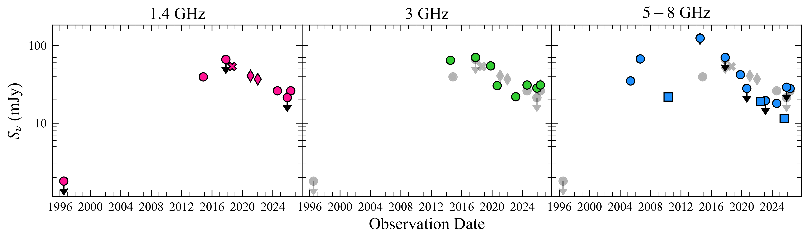
图注：Radio lightcurves of VT J1906+0849. For epochs with in-band (2014, 2017, 2020, 2025) or broadband (2019, 2024, 2026) spectra, we interpolate to 1.4, 3, and 5 GHz where appropriate. Circles, squares, diamonds, and X's correspond to data taken with the VLA, VLBA, ASKAP, and MeerKAT, respectively. The 1.4 GHz lightcurve (\textit{left}) is shown as shaded gray points for comparison in the 3 GHz (\textit{middle}) and $5-8$ GHz (\textit{right}) lightcurves.
对应解读：建议重点查看的图表 1；关键图表逐图导读中的“图 1：长期射电光变图”
入选理由：这是最直接支撑论文核心结论的长期射电光变图，明确展示1.4、3、5–8 GHz多个频段的时间演化，并区分VLA、VLBA、ASKAP、MeerKAT等数据来源；可用于检查2005年出现、2014年峰值、随后衰减及2025年再增亮是否显著，也能避免把不同频率点误读为单一频率光变。
来源与置信度：\(arxiv_source\)；high；\(arxiv_source\) / main.tex:figure[2]
Fig04
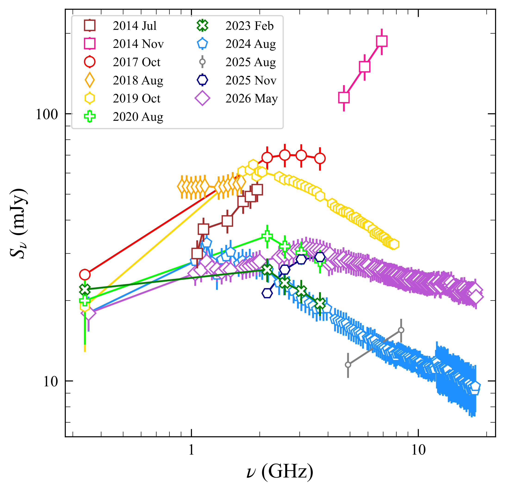
图注：Broadband radio spectra of VT J1906+0849. With the exception of the 2018 August (MeerKAT) and the 2025 August (VLBA), all data were acquired with the VLA.
对应解读：建议重点查看的图表 2；关键图表逐图导读中的“图 2：多频射电谱图”；模型拟合段落中的同步自吸收/凸谱拟合
入选理由：该图给出宽频射电谱，是判断同步自吸收、谱峰频率、峰值通量和谱形随历元演化的关键证据；它直接对应日报中关于凸形谱、谱峰移动、高频光学薄谱指数以及非同时观测系统误差的解读。
来源与置信度：\(arxiv_source\)；high；\(arxiv_source\) / main.tex:figure[4]
Fig05
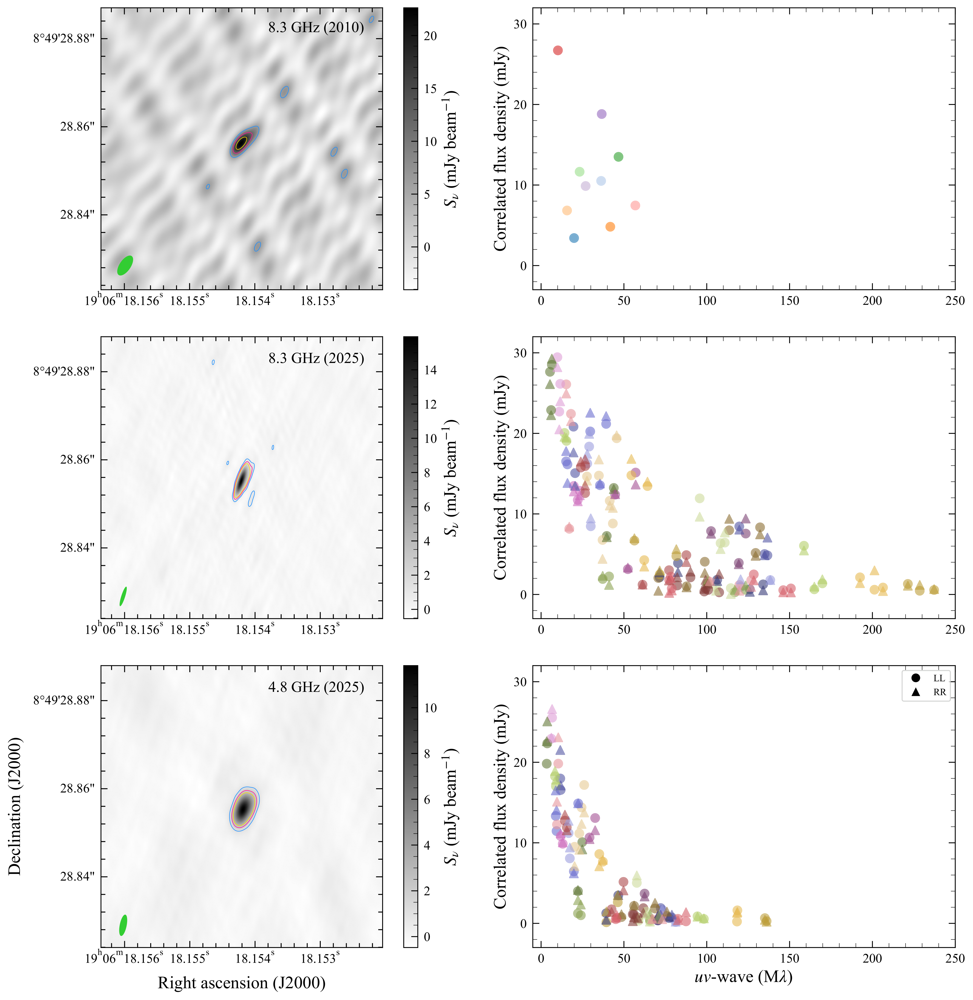
图注：\(\textit{Top left: }VLBA\) 8.3 GHz image from 2010 April 27. The restoring beam, $5.2\times2.5$ mas at position angle $\theta_{\rm pa}=-34^\circ$, is shown as a solid green ellipse in the lower-left corner. Contours are drawn at $5\sigma,\ 10\sigma$, and $15\sigma$, where $\sigma=1$ mJy beam$^{-1}$. \(\textit{Top right: }Correlated\) flux density as a function of $uv$-wavelength for the left hand (LL) correlations, averaged over all channels and spectral windows, and 3600 s in time. Colors denote unique baselines. \(\textit{Middle panels: }Same\) as top panels, but for 2025 August 1 observation at 8.3 GHz, with synthesized beam $4.6\times0.9$ mas, $\theta_{\rm pa}=-18^\circ$, and $\sigma=0.1$ mJy beam$^{-1}$. The $uv$-plot also includes right hand circular polarization (RR). \(\textit{Bottom panels: }Same\) as middle panels, but for 2025 August 1 detection at 4.8 GHz, with restoring beam $4.9\times1.6$ mas, $\theta_{\rm pa}=-11^\circ$, and $\sigma=0.2$ mJy beam$^{-1}$.
对应解读：建议重点查看的图表 3；关键图表逐图导读中的“图 3：VLBI 图像或可见度拟合图”；模型拟合段落中的角尺寸/VLBI约束
入选理由：这是检验源是否紧凑和是否多年内膨胀的关键图，包含2010与2025年VLBA图像、束大小、等高线以及相关通量随uv距离变化；比单纯成像更有诊断力，因为可见度信息直接关系到点源/扩展源判定和角尺寸上限。
来源与置信度：\(arxiv_source\)；high；\(arxiv_source\) / main.tex:figure[5]
Fig07
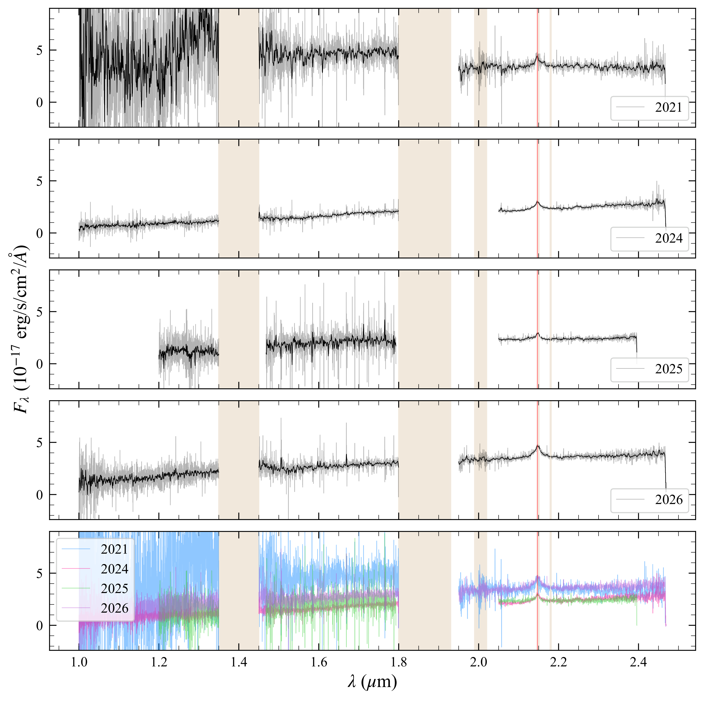
图注：Keck-II/NIRES (2021 May 29, \(\textit{top}\); 2024 June 18, \(\textit{second panel}\); 2026 May 8, \textit{fourth panel}) and Keck-I/MOSFIRE (2025 May 14, \textit{middle}) spectra. All spectra are smoothed using a Gaussian kernel with a standard deviation of 3 \(\AA.\) The red solid line (21472 \AA) indicates the broad emission feature and tan shaded regions represent regions of significant telluric absorption. The bottom panel shows all four near-infrared spectra overlaid for comparison.
对应解读：建议重点查看的图表 7；关键图表逐图导读中的“图 6：近红外光谱图”；模型拟合段落中的红外谱线中心、线宽和线通量变化
入选理由：该图展示四个历元的近红外光谱，并标出21472 Å宽发射特征和强大气吸收区，是判断单条宽线是否稳定、是否可解释为蓝移Brγ以及线形/亮度是否变化的核心证据。
来源与置信度：\(arxiv_source\)；high；\(arxiv_source\) / main.tex:figure[7]
Fig01
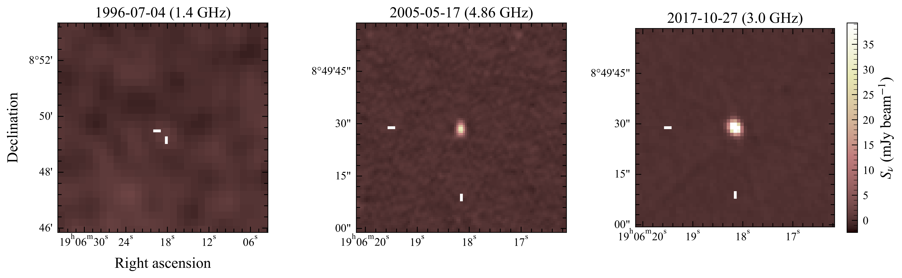
图注：\(\textit{Left to right}\): VT J1906+0849 during the reference epoch (NVSS; $4'\times4'$ field of view), first archival detection (MAGPIS-6cm; $1''\times1''$), and discovery epoch (VLASS Epoch 1; $1''\times1''$). All images share a common flux scale. Attempts to fit a 2D Gaussian at the transient position in NVSS using CASA do not converge.
对应解读：建议重点查看的图表 1；关键图表逐图导读中关于NVSS非探测与VLASS亮源反差的部分
入选理由：虽然它不是完整光变曲线，但直接并列显示NVSS参考历元非探测、MAGPIS首次档案探测和VLASS发现图像，最清楚地支持‘从非探测到亮射电暂现源’这一发现事实，可作为长期光变图的前置证据。
来源与置信度：\(arxiv_source\)；high；\(arxiv_source\) / main.tex:figure[1]
Fig10
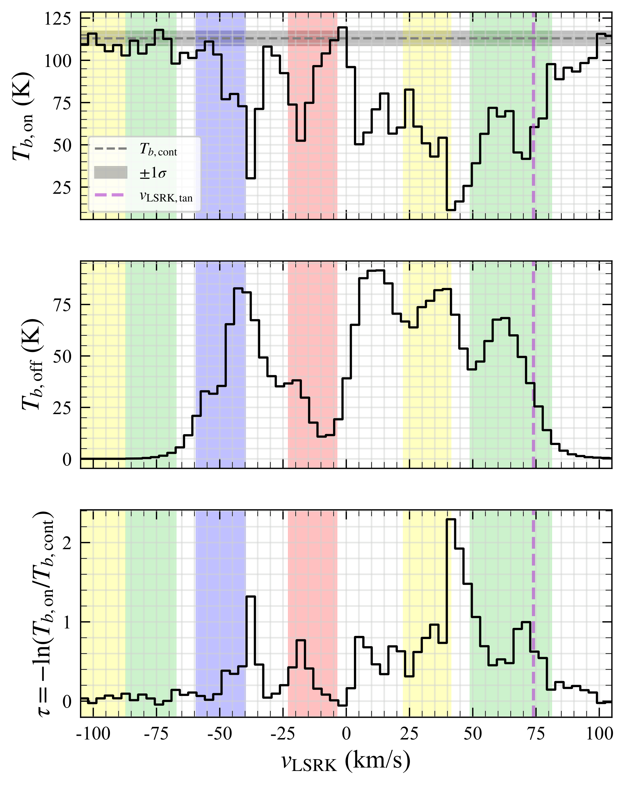
图注：The on-source (top), off-source (middle), and optical depth (bottom) spectra toward VT J1906+0849. The dashed horizontal gray line indicates the continuum level, the shaded gray band represents the $\pm1\sigma$ uncertainty, the dashed vertical purple line indicates $v_{\rm tan}$, and the remaining shaded vertical bands represent spiral arm crossings, with colors matching the arms in Figure \(\ref{fig:top_down}.\)
对应解读：详细解读中关于距离不确定性、银河系起源和d≳15 kpc影响射电光度的段落
入选理由：该图给出源方向的HI吸收/光深谱，并标注切点速度和旋臂穿越，是约束距离和银河系位置的重要辅助证据；距离直接影响射电光度、物理尺寸和源类判断，因此比普通多波段图像更能支撑物理解读。
来源与置信度：\(arxiv_source\)；high；\(arxiv_source\) / main.tex:figure[10]
强相关工作
这篇工作最直接的同源文献就是 VT J1906+0849 本身的发现论文，目前应以 arXiv:2608.21320 为入口检索后续引用。由于这是一个新命名暂现源，读者应检索关键词 “VT J1906+0849”, “VLASS radio transient”, “Galactic radio transient decade timescale”, “synchrotron self-absorption VLBI compact transient”。如果后续有 ATel、GCN 或期刊版，最好对照其位置、通量标定和多波段更新。
同类和历史参照包括 SS 433、微类星体喷流、X 射线双星射电—X 射线相关、射电新星和超新星射电余辉。SS 433 的价值在于提供了强盘风、持续喷流和可见 X 射线受几何/吸收影响的原型；但 VT J1906+0849 的射电时间尺度和紧凑性是否真能由类似机制解释，还需要后续 VLBI 和光谱监测。相反观点或张力主要来自背景 AGN、被严重吸收的 X 射线双星、非典型新星/共生星外流、以及年轻脉冲星风云等替代解释；检索关键词可用 “radio loud X-ray faint X-ray binary”, “SS 433 analog”, “obscured microquasar”, “compact Galactic radio transient”。
同一事件 / 同类源线索：
- https://arxiv.org/abs/2608.21320
- https://arxiv.org/pdf/2608.21320
- https://science.nrao.edu/vlass
- https://ui.adsabs.harvard.edu/abs/1984ARA%26A..22..507M/abstract
相似工作：
- https://ui.adsabs.harvard.edu/abs/1984ARA%26A..22..507M/abstract
- https://ui.adsabs.harvard.edu/abs/2004MNRAS.355.1105F/abstract
基础理论 / 方法工作：
- https://ui.adsabs.harvard.edu/abs/1998ApJ...499..810C/abstract
- https://ui.adsabs.harvard.edu/abs/2003MNRAS.343L..99G/abstract
- https://ui.adsabs.harvard.edu/abs/2004MNRAS.355.1105F/abstract
相反观点 / 张力线索：
（未提供）
6. AT 2016blu: Accretion-Powered Outbursts in a Luminous Blue Variable and Compact Object Binary
- 来源：arXiv / astro-ph.HE
- 链接：https://arxiv.org/abs/2608.20469v1
- 作者：Mojgan Aghakhanloo, Núria Torres-Albà, Nathan Smith, Raphael Baer-Way, Shazrene Mohamed, Alexei V. Filippenko, WeiKang Zheng, Thomas G. Brink
- 评分：novelty 8/10，importance 7/10，relevance 8/10，final 8.65/10
- 推荐理由：首次X射线探测AT 2016blu并提出LBV超新星伪装体爆发由紧致伴星间歇吸积驱动，是新的高质量X射线双星/暂现源案例；观测结果较明确。
中文题目：AT 2016blu：亮蓝变星与致密天体双星中的吸积驱动爆发
做了什么：这篇论文报告了超新星冒名者 AT 2016blu 的首次 X 射线探测。这个源位于 NGC 4559，自 2012 年以来出现了 27 次准周期光学爆发，周期约为 \(113\) 天，作者把它解释为高偏心率双星中近星点反复触发的质量转移或吸积事件。2026 年作者在预测爆发窗口触发 Chandra 观测，在五个相邻历元中探测到 \(\log L_{\rm X}\approx 38.64\pm0.11\)，并由此估计吸积率至少为 \(\dot M\gtrsim 8\times10^{-8}\,M_\odot\,{\rm yr^{-1}}\)。核心结论是：AT 2016blu 很可能是第一个被明确发现由致密伴星间歇吸积驱动爆发的亮蓝变星超新星冒名者，同时也是一个包含大质量供体星和致密天体的高质量 X 射线双星。
为什么重要：AT 2016blu 把几个过去常分开讨论的问题连在了一起：亮蓝变星的不稳定爆发、超新星冒名者、近星点调制的偏心双星相互作用，以及高质量 X 射线双星形成。若 X 射线确实来自致密伴星吸积，那么至少有一类被归入“亮蓝变星爆发”的暂现源，并不只是单星外层不稳定或非致命喷发，而是双星动力学和吸积物理共同控制的现象。
理论 / 观测 / 仪器方法价值：对理论而言，它给大质量恒星晚期双星演化提供了一个有实测周期、有供体类型、有 X 射线吸积证据的约束点。对观测而言，它展示了如何用长期光学巡天预测近星点爆发，再用 Chandra 目标机遇观测捕捉高能辐射。对方法而言，文章强调了归档非探测、爆发相位监测、X 射线光度和吸积率下限联合使用的重要性。
为什么应该关注：如果你关心大质量恒星爆发前的质量损失、超新星冒名者到底是不是“假超新星”、或高质量 X 射线双星如何从不稳定大质量双星中形成，这篇都值得看。它不是单纯多了一个 X 射线点源，而是把 \(113\) 天光学准周期与 \(10^{38}\,{\rm erg\,s^{-1}}\) 量级 X 射线吸积联系起来，迫使我们重新审视一部分周期性光学爆发源的能量来源。
展开详细解读：文章讲解、背景、理论、重点章节、图表与相关工作
文章详细讲解
科学问题：AT 2016blu 是一个位于 NGC 4559 的超新星冒名者，过去十多年里反复出现光学爆发，且爆发间隔接近 \(113\) 天。传统上，亮蓝变星类爆发常被解释为大质量恒星外层接近或超过 Eddington 极限时发生的非稳态质量损失，也可能与双星潮汐扰动、碰撞风或包层相互作用有关。本文要回答的问题更具体：这些准周期爆发是否由偏心双星的近星点触发，并且是否存在一个致密伴星在爆发期间发生可观测吸积。
作者怎么做：论文先整理 AT 2016blu 从 2012 年到 2026 年的光学爆发历史，指出共有 27 次被探测到的准周期爆发，并据此预测 2026 年的一次爆发窗口。作者在光学监测确认源处于预期活动阶段后触发 Chandra Target of Opportunity 观测，获得五个时间相近的 X 射线历元。为了判断 X 射线是否一直存在，作者还利用 2001 至 2002 年 Chandra 归档数据进行堆叠分析；这些数据早于 2012 年首次记录到的光学爆发，结果没有给出显著 X 射线探测。
关键结果：2026 年 Chandra 数据在源位置探测到 X 射线辐射，给出 \(\log L_{\rm X}\approx38.64\pm0.11\) 的亮度，单位为 \({\rm erg\,s^{-1}}\)。这个亮度高于普通大质量恒星风碰撞或热等离子体发射的常见水平，更自然地指向致密天体吸积。作者进一步用吸积光度与质量吸积率的关系估计 \(\dot M\gtrsim8\times10^{-8}\,M_\odot\,{\rm yr^{-1}}\)，认为这与中子星或黑洞伴星在近星点吞噬亮蓝变星风或喷发物相符。由此，AT 2016blu 被解释为一个由亮蓝变星供体和致密伴星组成的高质量 X 射线双星，其光学爆发是间歇吸积和近星点相互作用的表现。
局限和下一步：关键不确定性包括 X 射线光谱形状、吸收柱密度、距离、背景污染、源定位与光学暂现源的对应关系，以及 X 射线是否严格随 \(113\) 天相位调制。五个 Chandra 历元证明了爆发阶段存在 X 射线，但还不足以精确重建完整轨道相位上的 X 射线光变曲线。下一步最有价值的是在多个预报近星点前后做密集 X 射线和光学光谱监测，检验 X 射线峰值是否领先、同步或滞后于光学峰值，并用谱线速度、吸收变化和硬度演化约束伴星性质与吸积几何。
关键结果是怎么做出来的
样本和数据选择方面，本文的证据链从长期光学光变开始。AT 2016blu 在 2012 年至 2026 年间有 27 次被记录的光学准周期爆发，周期约 \(113\) 天。这个数字很关键，因为它使作者能够把源从普通随机爆发的亮蓝变星中区分出来，并提出可检验的轨道相位预报。2026 年的 Chandra 观测不是盲目搜寻，而是在光学监测提示接近预期爆发窗口后触发，因此 X 射线探测与近星点吸积假说直接相连。
X 射线探测本身来自五个相邻 Chandra 历元。作者在源位置提取计数，估计局部背景，并把计数率转换为非吸收或吸收校正后的 X 射线光度。摘要给出的核心数值是 \(\log L_{\rm X}\approx38.64\pm0.11\)，这意味着 \(L_{\rm X}\) 在几 \(10^{38}\,{\rm erg\,s^{-1}}\) 量级。这个亮度接近或超过许多普通恒星风 X 射线源的范围，而落在高质量 X 射线双星、超亮但非极端的吸积源、或接近 Eddington 中子星吸积的讨论区间。
显著性判断还依赖归档非探测。Chandra 在 2001 至 2002 年曾偶然覆盖该区域，早于已知光学爆发阶段。作者堆叠这些归档曝光后没有发现源位置的 X 射线探测。这不是简单的“以前没有、现在有”，而是为活动态吸积提供了相位或演化上的对照：若源是恒定背景活动星系核、稳定超亮 X 射线源或附近不相关 X 射线双星，早期归档数据更可能给出持续探测；非探测削弱了这些解释，但仍需看早期曝光深度是否足以排除 \(2026\) 年同等光度。
模型比较主要在物理解释层面进行。作者把单星亮蓝变星爆发、普通碰撞风发射、超新星遗迹或背景源等可能性，与致密伴星吸积模型比较。最强约束来自三点组合：周期性光学爆发、爆发相位 X 射线亮度、归档非探测。只看任一点都不充分；周期性可以来自双星潮汐但不一定要求致密天体，X 射线可以来自其他高能源，非探测也可能是深度不足。三者合并后，间歇吸积到致密伴星成为最经济解释。
支撑结论的图表应包括长期光学光变和周期折叠图、Chandra 源定位或图像、X 射线光度或计数率随时间变化、以及归档数据的上限比较。稳健性检验应重点关注 Chandra 点扩散函数内是否有混淆源、源位置与 AT 2016blu 光学位置的一致性、背景区域选择、能谱模型对 \(L_{\rm X}\) 的影响、以及不同距离或吸收柱假设下 \(\dot M\) 下限是否仍支持致密吸积。
展开背景、理论、公式、模型、章节和图表导读
背景知识
研究对象 AT 2016blu 属于所谓超新星冒名者，即光度和光谱上可能像较弱超新星、但通常没有证据表明恒星已经被完全摧毁的暂现源。许多这类事件与亮蓝变星有关。亮蓝变星是高光度大质量恒星演化中的不稳定阶段，表现出强星风、光度和温度变化，有时还会发生巨爆发并抛出大量物质。
历史问题在于，亮蓝变星爆发的物理驱动一直不清楚。单星图像强调接近 Eddington 极限、铁不透明度峰、包层膨胀、脉动或不稳定核燃烧；双星图像则强调偏心轨道近星点处的潮汐扰动、质量转移、共同包层前奏、喷流和吸积反馈。很多超新星冒名者数据只覆盖光学和近红外，缺少能直接指向致密天体的高能证据，因此不同解释往往难以区分。
AT 2016blu 特别有价值，因为它的光学爆发不是一次性事件，而是多年准周期重复出现。约 \(113\) 天的时间尺度自然让人想到双星轨道周期，尤其是高偏心率系统中近星点触发的相互作用。周期性本身不等于吸积；例如脉动、遮掩、风结构也可能产生准周期变化。但当周期性爆发与 X 射线活动同时出现时，致密伴星假说的权重明显上升。
为什么现在值得重新看，是因为当前光学巡天已经能长期追踪大量低红移暂现源，而 Chandra、XMM-Newton、Swift 等高能设施可在预测窗口做目标机遇观测。过去很多冒名者是在爆发后才被发现，缺乏爆发前和爆发中的高能约束；AT 2016blu 的周期性让观测者能提前布置观测，从而把“事后解释”变成“相位预报检验”。
常见误区之一是把所有亮蓝变星爆发都归为单星不稳定。另一个误区是看到 X 射线就立即断言存在黑洞；事实上，中子星吸积、黑洞吸积、强碰撞风和背景活动星系核都可能产生 X 射线，需要结合光度、光谱、时间变化、定位和多波段相位信息判断。本文的重要性恰在于它把这些诊断放在一个重复爆发的具体系统中，而不是只依赖一次瞬时亮度。
基础理论 / 方法脉络
基础物理图像是：一个大质量亮蓝变星在偏心轨道上与致密伴星相互绕转。近星点时两者距离最小，供体星的稠密风、外层包层或前期喷发物更容易被伴星捕获。若伴星是中子星或黑洞，被捕获气体释放引力势能，产生 X 射线；同时吸积反馈、喷流或辐射加热可能增强光学爆发。
关键量包括轨道周期 \(P\)、偏心率 \(e\)、近星点距离 \(r_{\rm p}\)、供体质量 \(M_\ast\)、致密伴星质量 \(M_{\rm c}\)、风速 \(v_{\rm w}\)、相对速度 \(v_{\rm rel}\)、吸积率 \(\dot M\) 和 X 射线光度 \(L_{\rm X}\)。在本文中，光学准周期约 \(113\) 天给出轨道时钟，X 射线光度给出吸积功率量级，二者共同约束双星相互作用。
从观测方法看，Chandra 的优势是角分辨率高，适合在外星系星形成区域中把 AT 2016blu 与邻近 X 射线源区分开。基本流程是确定光学位置，在 X 射线图像中提取源区计数与背景区计数，计算探测显著性，再根据假设能谱模型、吸收柱和距离把计数率转为通量与光度。由于计数率到光度的转换依赖谱形，低计数情形下系统误差不应被忽略。
理论上，吸积光度通常写成 \(L_{\rm acc}\sim GM_{\rm c}\dot M/R_{\rm c}\) 或 \(L_{\rm acc}=\eta\dot M c^2\)。中子星的半径 \(R_{\rm c}\) 很小，因此很低的 \(\dot M\) 也能给出 \(10^{38}\,{\rm erg\,s^{-1}}\) 量级辐射。黑洞则常用辐射效率 \(\eta\) 表示。本文给出的 \(\dot M\) 是下限，因为部分能量可能不在 Chandra 能段、可能被吸收，或者被机械能和非热粒子带走。
常见退化关系包括：更高吸收柱会提高内禀 \(L_{\rm X}\)；更硬或更软的谱形会改变能量转换因子；距离误差按 \(D^2\) 放大到光度；风速与相对速度以高次幂影响 Bondi-Hoyle-Lyttleton 捕获率；轨道偏心率、供体半径和风密度结构可产生相似的相位光变。因此，本文的结论最好理解为“致密吸积是目前最有力解释”，而非已经唯一确定伴星质量和吸积几何。
公式与推导
第一步，用开普勒第三定律把准周期光学爆发与双星尺度联系起来。若 \(P\) 是轨道周期，\(a\) 是半长轴，\(M_\ast\) 和 \(M_{\rm c}\) 分别是亮蓝变星和伴星质量，则
这里 \(G\) 是引力常数。把观测到的 \(P\approx113\,{\rm d}\) 代入后，可估计系统的轨道尺度；若轨道偏心率较高，近星点距离为
其中 \(e\) 越接近 \(1\)，近星点相互作用越强。
第二步，近星点附近的吸积取决于伴星相对供体风或喷发物的速度。一个常用近似是 Bondi-Hoyle-Lyttleton 捕获半径：
其中 \(v_{\rm rel}\) 是相对速度，\(c_{\rm s}\) 是气体声速。当流动超声速且 \(v_{\rm rel}\gg c_{\rm s}\) 时，\(R_{\rm acc}\) 对 \(v_{\rm rel}^{-2}\) 极敏感。
第三步，若近星点处气体密度为 \(\rho\)，则近似吸积率为
若气体来自近似球对称星风，距离 \(r\) 处密度可写成
其中 \(\dot M_{\rm w}\) 是供体星风或喷发的质量损失率，\(v_{\rm w}\) 是风速。这说明近星点距离较小、风较慢、质量损失率较高都会显著增强吸积。
第四步，吸积释放的光度可用两种等价量级估计。对有实体表面的中子星，
其中 \(R_{\rm c}\) 是致密星半径。对黑洞或一般相对论吸积流，常写成
其中 \(\eta\) 是辐射效率，\(c\) 是光速。本文由 \(L_{\rm X}\) 反推 \(\dot M\) 的逻辑就是这一步，但实际 \(L_{\rm X}\) 只是总吸积功率在观测能段中的一部分。
第五步，把观测通量转换为光度。若距离为 \(D\)，能段内观测通量为 \(F_{\rm X}\)，则
由于 \(L_{\rm X}\propto D^2\)，宿主星系距离误差直接进入光度和吸积率估计。若存在吸收，观测通量需要通过谱模型修正为内禀通量。
第六步，Chandra 计数到通量的转换可概括为响应积分：
其中 \(C\) 是计数率，\(A_{\rm eff}(E)\) 是有效面积，\(S(E)\) 是源光子谱，\(\sigma(E)\) 是光电吸收截面，\(N_{\rm H}\) 是氢柱密度。低计数数据中，\(S(E)\) 和 \(N_{\rm H}\) 的假设会主导系统误差。
第七步，源探测通常可用泊松统计描述。若源区观测到 \(n\) 个计数，期望背景为 \(b\)，源期望计数为 \(s\)，似然为
比较 \(s=0\) 与 \(s>0\) 的似然可给出探测显著性或置信区间。归档非探测则对应在给定背景下对 \(s\) 的上限。
第八步，若要检验 X 射线是否与 \(113\) 天轨道相位相关，可定义相位
其中 \(t_0\) 是参考爆发时刻。把光学峰值、X 射线计数率和上限折叠到 \(\phi\) 上，可以检查 X 射线是否集中在近星点相位附近，这是区分稳定背景源和相位调制吸积源的关键诊断。
模型拟合 / 应用方法
这类工作的第一层拟合是光学光变的周期或准周期模型。可用爆发峰值时刻 \(t_i\) 拟合线性历表 \(t_i=t_0+iP\)，其中 \(P\) 是周期，\(i\) 是整数周数，残差反映周期漂移、爆发识别误差或真实轨道外扰动。AT 2016blu 的 \(113\) 天周期是触发 Chandra 观测的基础，因此读者应关注周期拟合的散布、漏检爆发对周期的影响，以及是否存在别名周期。
第二层拟合是 X 射线源探测与光度估计。Chandra 数据通常在源区和背景区进行泊松统计建模，低计数时不应使用简单高斯误差近似。计数率到通量的转换需要假设谱模型，例如吸收幂律或热等离子体模型，并设定 \(N_{\rm H}\)。如果论文只给出 \(\log L_{\rm X}\approx38.64\pm0.11\)，读者应进一步检查这个误差是否只包括计数统计，还是包含谱形、吸收和距离误差。
第三层是物理参数估计，即从 \(L_{\rm X}\) 推断 \(\dot M\)。这里存在强退化：中子星和黑洞的辐射效率不同，吸积流可能各向异性，部分辐射可能被局部物质吸收并在光学或红外再处理，X 射线能段也可能只覆盖总辐射的一部分。因此 \(\dot M\gtrsim8\times10^{-8}\,M_\odot\,{\rm yr^{-1}}\) 应理解为模型依赖的下限，而不是完整质量流率测量。
第四层是模型比较。致密伴星吸积模型需要同时解释光学准周期、X 射线活动和早期非探测；单星亮蓝变星模型较难产生 \(10^{38}\,{\rm erg\,s^{-1}}\) 量级 X 射线；碰撞风双星可产生 X 射线但通常光度和谱性质受限；背景活动星系核或不相关 X 射线双星则要面对位置重合和相位相关问题。真正有力的比较应把这些模型的预测写成可观测量：相位、硬度、吸收变化、谱线速度和长期复现性。
实际应用上，这篇文章提供了一个筛选类似系统的模板：先从光学巡天中找重复爆发的超新星冒名者或亮蓝变星候选体，拟合周期并预测下一次活动窗口，再用高角分辨率 X 射线观测检验是否有相位相关吸积。模型可能失败的地方也很明确：如果后续多个轨道周期中 X 射线不再随近星点出现，或深度光谱显示 X 射线来自附近稳定源，致密吸积解释就需要修正。
重点章节 / 结果段落怎么读
数据和样本部分应先读长期光学光变整理。重点不是单次 2016 年发现，而是 2012 年到 2026 年的 27 次准周期爆发如何被识别、哪些巡天或随访数据贡献了峰值、周期 \(P\approx113\,{\rm d}\) 的不确定度如何估计，以及漏检或季节性空窗是否可能改变周期判断。
观测策略部分应看 2026 年 Chandra Target of Opportunity 的触发逻辑。这里要确认作者是在预测爆发窗口前后安排观测，而不是事后挑选有利数据。五个相邻历元的时间间隔、曝光时间、能段选择和源区定义，会直接影响 X 射线光变和显著性的解释。
X 射线分析部分是全文证据核心。读者应重点检查源定位、背景估计、计数显著性、能谱或硬度假设、通量转换和 \(\log L_{\rm X}\) 的误差来源。归档 Chandra 数据的堆叠非探测也应放在同一尺度上比较，特别是早期数据的上限是否足以排除 2026 年亮度。
物理解释部分要看作者如何排除或弱化替代模型。包括普通亮蓝变星单星爆发、碰撞风双星、背景源、宿主星系中不相关高质量 X 射线双星，以及超新星遗迹或弥散热气体。最有说服力的段落应说明为什么 \(L_{\rm X}\)、准周期性和活动态非恒定性共同支持致密吸积。
讨论和展望部分应关注 AT 2016blu 与 SN 2010da 这类高质量 X 射线双星暂现源的比较。不同之处是 AT 2016blu 的供体被认为是亮蓝变星，而 SN 2010da 的供体为红超巨星。这个比较决定了本文对大质量恒星晚期演化和双星通道的外推意义。
建议重点查看的图表
-
长期光学光变图：看 27 次爆发的时间分布、峰值振幅、观测空窗和非探测点，判断 \(113\) 天周期是否由数据真实支持。
-
周期搜索或相位折叠图：看功率谱、历表残差或折叠光变中爆发峰是否集中在固定相位，警惕季节性采样造成的别名。
-
Chandra 2026 年图像或源定位图：看 X 射线源位置与 AT 2016blu 光学位置的角距离、误差圆、点扩散函数范围内是否有混淆源。
-
X 射线计数率或光度随时间图：看五个历元是否都探测到、是否有短期变化、是否与光学爆发阶段同步。
-
2001 至 2002 年归档数据堆叠图或上限表：看早期非探测的曝光深度和上限，判断它对恒定源解释的排除力度。
-
X 射线谱、硬度比或通量转换表：看采用的谱模型、\(N_{\rm H}\)、能段和不确定度，判断 \(\log L_{\rm X}\approx38.64\pm0.11\) 是否稳健。
-
物理量估计表：看 \(\dot M\)、供体质量、距离、吸积效率和可能伴星类型的假设，特别是哪些结论依赖中子星还是黑洞。
关键图表逐图导读
图 1：长期光学光变导读。横轴通常应为观测时间，纵轴为光学星等或通量。数据点展示 AT 2016blu 多年爆发历史，模型线或竖线可能标出 \(P\approx113\,{\rm d}\) 的预测爆发时刻。读图时不要只看峰值数量，还要看非爆发期的采样密度；如果观测空窗刚好接近周期整数倍，周期显著性可能被高估。
图 2：周期搜索或相位折叠图导读。横轴可能是周期或轨道相位，纵轴可能是周期功率、\(\chi^2\)、光学亮度或归一化通量。若 \(113\) 天是真实轨道时钟，爆发应在折叠相位中聚集，而不是均匀散布。读图陷阱是准周期事件的峰宽和漏检会让相位分布变宽，因此不能用窄脉冲星式周期标准要求它。
图 3：Chandra 源定位图导读。横轴和纵轴通常为天球坐标或相对角距离，图中应有 X 射线等值线、源区圆、背景区和光学位置标记。主要看 X 射线峰是否落在 AT 2016blu 误差圆内，以及附近是否有宿主星系弥散发射或其他点源。若源在点扩散函数边缘或处于复杂背景中，光度和显著性需要更谨慎解释。
图 4：X 射线光变或五历元计数率图导读。横轴为 2026 年观测日期或相对预测爆发时刻，纵轴为计数率、通量或 \(L_{\rm X}\)。若五个历元都在相近亮度水平探测到，说明活动持续至少覆盖这些观测时间；若存在快速变化，则更支持吸积而非稳定热气体。读图时要注意误差条是否为 \(1\sigma\)、\(90\%\) 置信区间或泊松置信区间。
图 5：归档非探测和 2026 探测对比图导读。横轴可为年份或相位，纵轴为 \(L_{\rm X}\) 或上限。早期堆叠上限若低于 2026 探测值，就强烈支持源的暂现性；若上限高于或接近 2026 亮度，则非探测只能说明早期数据不够深。读者应看上限是否采用同一能谱模型和同一距离。
图 6：吸积率或物理解释示意图导读。坐标轴可能比较 \(L_{\rm X}\)、\(\dot M\)、伴星类型或与类似源的参数。模型线可能对应中子星 Eddington 光度、黑洞吸积效率或 Bondi-Hoyle 捕获率。读图陷阱是不同源的能段、吸收修正和距离误差未必一致，不能把点位差异完全解释为物理差异。
论文原图 / 可嵌入图片
Fig02
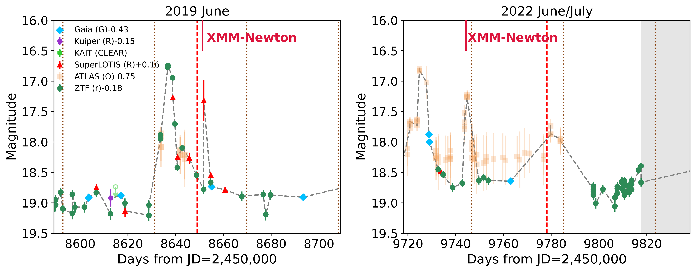
图注：AT~2016blu was observed by \(\xmm\) four times, three of which occurred after its first outburst in 2012. The 2019 \(\xmm\) observation occurs just before the documented optical peak (this peak is based on a single SuperLOTIS data point with a large uncertainty and should therefore be interpreted with caution), while the two \(\xmm\) observations in 2022 correspond to AT~2016blu rising toward its optical peak, as documented by \(\citet{A2316blu, A25}.\) However, as shown in Figure~\(\ref{fig:chandra_and_xmm},\) owing to the low spatial resolution of \(\xmm,\) we cannot spatially resolve AT~2016blu from the nearby ULX NGC~4559~X7. Predicted outburst times from the $\sim113$ and $\sim38.5$ day periods are shown by the red dashed and brown dotted lines, respectively; gray shaded regions mark periods of limited observability due to the Sun \(\citep{A2316blu}.\) Following \(\citet{A2316blu, A25},\) offsets were applied as constant-flux subtractions; the quoted values correspond to the magnitude shifts at a baseline of 18--18.5\,mag. The ZTF exception is the $-0.18$\,mag transformation to Johnson-Bessell $R$. The same plotting conventions are used throughout the paper.
对应解读：“建议重点查看的图表”第1、2项；“图1：长期光学光变导读”和“图2：周期搜索或相位折叠图导读”的周期/历表相关内容。
入选理由：这张图直接展示长期光学活动与XMM观测时刻，并标出约113天主周期和约38.5天次峰周期的预测爆发时间，还包含太阳不可观测窗口。它最能支撑日报中关于27次准周期爆发、周期真实性、采样空窗和别名周期风险的解读。
来源与置信度：\(arxiv_source\)；high；\(arxiv_source\) / 16blu.tex:figure[2]
Fig01
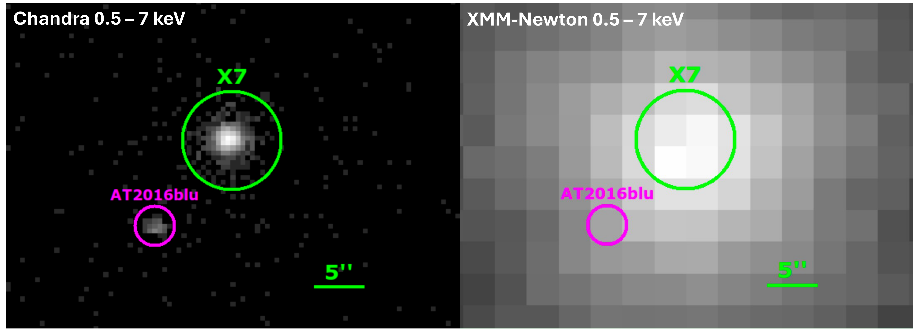
图注：{\(\it\) Left:} Stacked \(\chandra\) image of all five ToO observations taken during the March 2026 optical outburst of AT~2016blu, in a span of 4~days, as listed in Table~\(\ref{tab:chandra_obs}.\) The magenta circle shows a $2''$ radius region around the optical TNS position of AT~2016blu, while the green circle corresponds to a $5''$ radius region highlighting the position of the nearby ULX NGC~4559~X7. {\(\it\) Right:} \(\xmm\) image of the same sky region. \(\xmm\) cannot resolve the two sources, and the image is clearly dominated by ULX NGC~4559~X7, much brighter than AT~2016blu.
对应解读：“建议重点查看的图表”第3项；“图3：Chandra 源定位图导读”。
入选理由：该图给出2026年五次Chandra ToO观测的堆叠图像，并用2角秒圆标出AT 2016blu光学位置，同时显示邻近ULX NGC 4559 X7及XMM无法分辨两源的问题。它是判断X射线源是否与光学暂现源位置一致、是否受邻近亮源混淆影响的核心图。
来源与置信度：\(arxiv_source\)；high；\(arxiv_source\) / 16blu.tex:figure[1]
Fig08
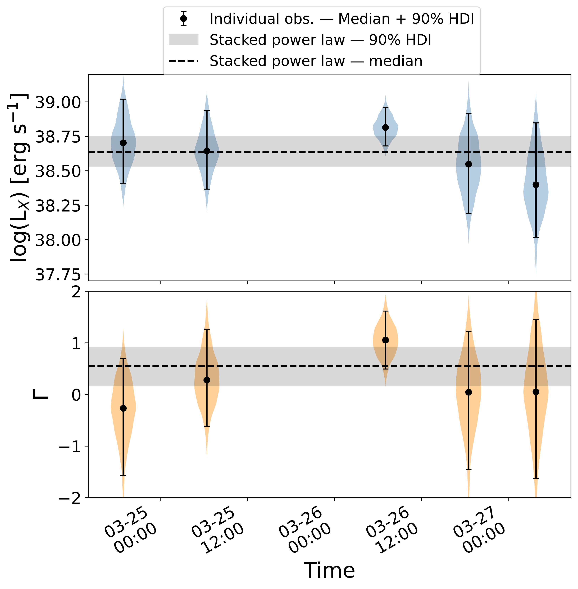
图注：X-ray luminosity (top) and photon index (bottom) derived from the X-ray fit of each ToO observation listed in Table~\(\ref{tab:chandra_obs}.\) The full posterior is shown as a distribution, while the points represent the median, and the error bars correspond to the 90\% HDI. The X-ray luminosity remains consistent across all five epochs within the uncertainties. The shaded area corresponds to the results of the fit to a stacking of all observations, using a simple power-law model.
对应解读：“建议重点查看的图表”第4、6项；“图4：X射线光变或五历元计数率图导读”；模型拟合中关于X射线光度估计和低计数不确定度的段落。
入选理由：图中逐个给出五个Chandra ToO历元的X射线光度和光子指数后验分布，误差条为90% HDI，并标出堆叠拟合结果。它直接检验五个历元是否均有一致亮度、短期变化是否显著，以及\(\log L_X\approx38.64\)的统计不确定度来源。
来源与置信度：\(arxiv_source\)；high；\(arxiv_source\) / 16blu.tex:figure[8]
Fig10
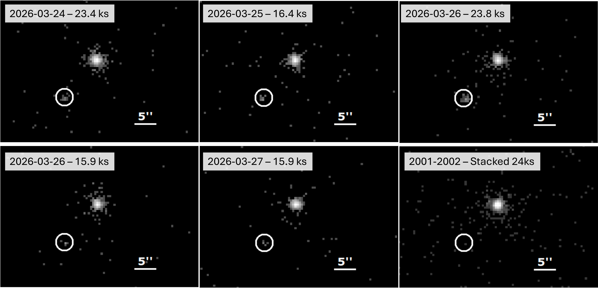
图注：Comparison between all \(\chandra\) observations of AT~2016blu during the ToO campaign, and a stacked image of previous archival observations. The white circle, of $2''$ radius, marks the optical position of AT~2016blu. No source is detected in the stacked archival images prior to the first observed optical outburst of AT~2016blu, when it was a stable system.
对应解读：“建议重点查看的图表”第5项；“图5：归档非探测和2026探测对比图导读”。
入选理由：该图将2026年Chandra ToO探测与2001–2002年归档堆叠图像并列比较，并在同一光学位置标出2角秒圆。它最直接支持日报中关于早期非探测、源暂现性以及排除长期恒定X射线源解释的讨论。
来源与置信度：\(arxiv_source\)；high；\(arxiv_source\) / 16blu.tex:figure[10]
Fig09
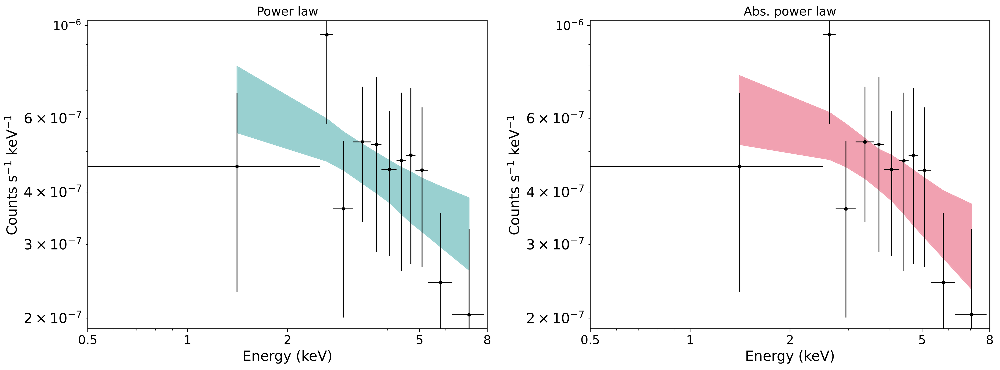
图注：Fits to the stacked X-ray spectra using a power-law (left) and absorbed power-law (right) model. The shaded bands correspond to the 68\% range of the posterior. Although stacking improves the constraints on the luminosity, the limited number of counts still results in substantial uncertainty in the spectral shape parameters.
对应解读：“建议重点查看的图表”第6项；模型拟合中关于谱模型、吸收、光子指数和通量转换不确定度的段落。
入选理由：这张图展示堆叠X射线谱分别用幂律和吸收幂律模型拟合，并给出68%后验区间。它比单纯光度图更适合检查\(N_H\)、谱形和低计数统计对通量及\(L_X\)推断的系统影响。
来源与置信度：\(arxiv_source\)；high；\(arxiv_source\) / 16blu.tex:figure[9]
Fig11
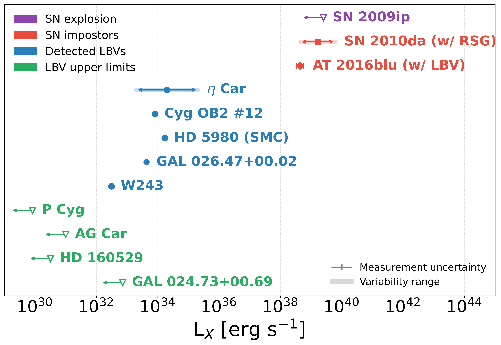
图注：AT~2016blu’s X-ray luminosity is shown in comparison with examples of other LBVs, SN impostors, and the SN explosion of SN~2009ip. AT~2016blu exhibits X-ray luminosities significantly higher than those of LBVs with colliding winds, and it is the first LBV showing X-ray luminosity consistent with accretion onto a compact object.
对应解读：“建议重点查看的图表”第7项；“图6：吸积率或物理解释示意图导读”；模型比较中关于LBV、碰撞风和致密伴星吸积的段落。
入选理由：该图把AT 2016blu的X射线光度与其他LBV、SN impostor和SN 2009ip进行比较，突出其亮度显著高于普通碰撞风LBV并接近致密天体吸积情形。它对支撑论文的物理结论很有价值，但其诊断性低于定位、光变、非探测和谱拟合图。
来源与置信度：\(arxiv_source\)；high；\(arxiv_source\) / 16blu.tex:figure[11]
强相关工作
同一源方面，应检索关键词 “AT 2016blu supernova impostor”, “AT 2016blu LBV”, “NGC 4559 AT 2016blu” 和 “periodic outbursts supernova impostor”。本文显然是 AT 2016blu 的高能后续研究，相关的同源光学发现、分类和长期监测论文或通告会帮助判断 \(113\) 天周期和亮蓝变星供体性质是否稳固。由于我不能确信具体早期论文编号，这里不编造链接。
同类源方面，最直接的比较对象是 SN 2010da，它也被解释为包含大质量供体和致密伴星的高质量 X 射线双星暂现源，但供体更接近红超巨星而非亮蓝变星。还应与 SN 2009ip、\(\eta\) Carinae、周期性或准周期性超新星冒名者、以及碰撞风大质量双星作比较。检索关键词包括 “SN 2010da high mass X-ray binary”, “LBV binary accretion outburst”, “supernova impostor X-ray”, “eccentric massive binary periastron outburst”, “Bondi Hoyle accretion massive star wind”。
基础理论方面，相关背景包括 Bondi-Hoyle-Lyttleton 风吸积、大质量双星近星点质量转移、亮蓝变星 Eddington 不稳定和高质量 X 射线双星综述。相反观点或张力主要来自单星亮蓝变星爆发模型和非致密碰撞风模型：这些模型能解释部分光学爆发和谱线变化，但通常较难自然地产生本文报告的 \(10^{38}\,{\rm erg\,s^{-1}}\) 量级、且与爆发相位相关的 X 射线活动。
同一事件 / 同类源线索：
相似工作：
（未提供）
基础理论 / 方法工作：
（未提供）
相反观点 / 张力线索：
（未提供）
说明
评分由 LLM 给出初评，再由本地阈值策略过滤；IACT、TeV 伽马射线和高能中微子天文学按重点方向处理。